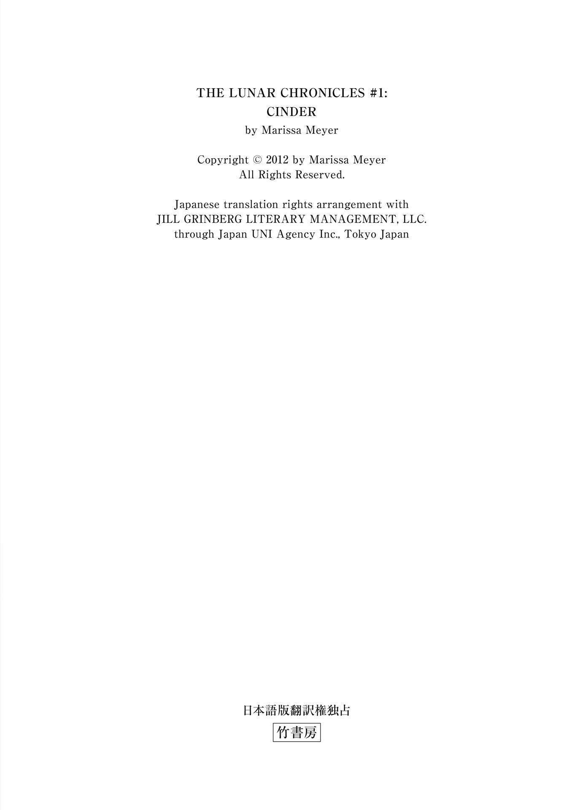
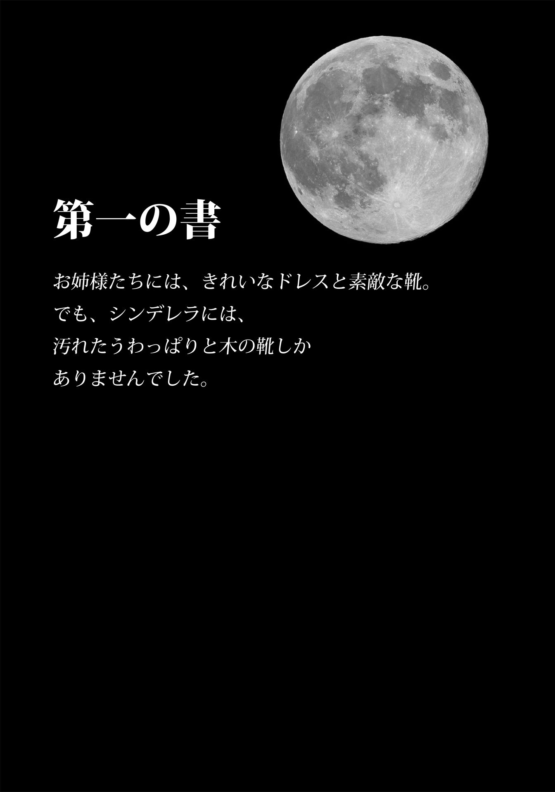
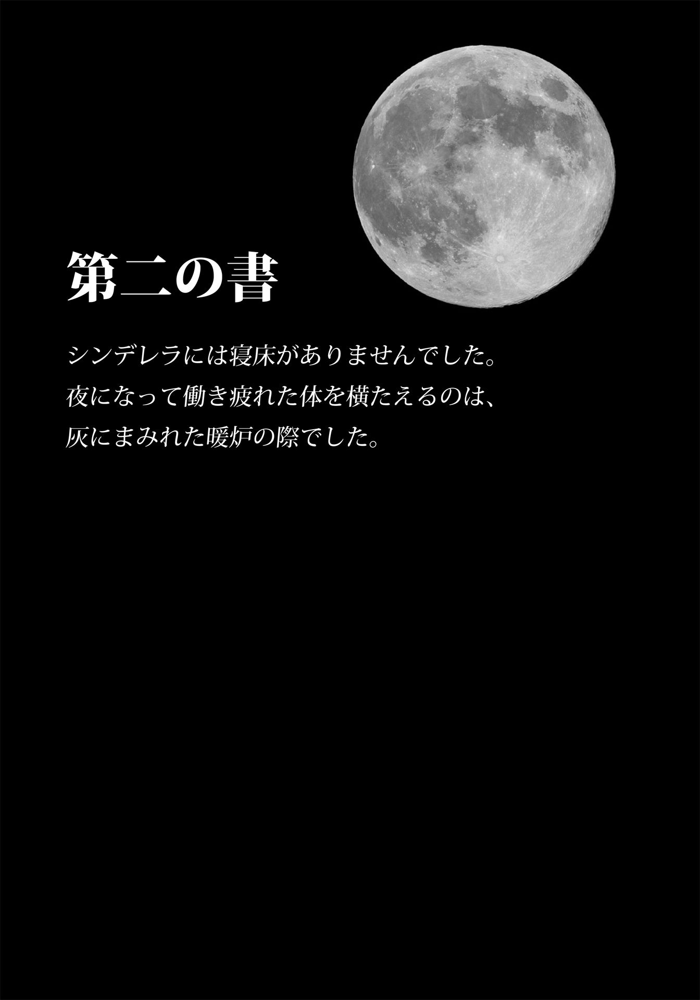
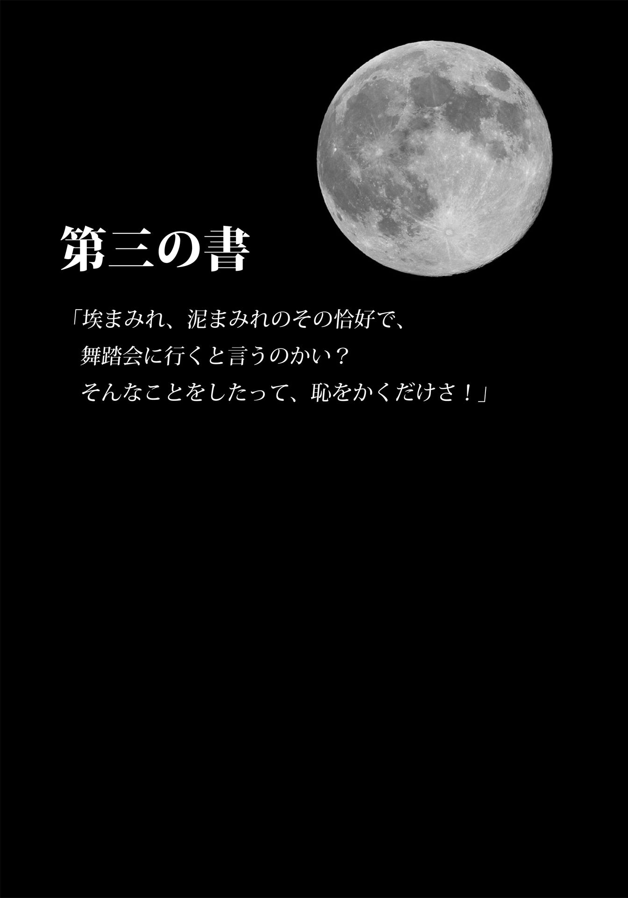

| Ｃｉｎｄｅｒ シンダー 上 (竹書房文庫) | |
| マリッサ・メイヤー | |
| (2015) | |
この作品は縦書きでレイアウトされています。
また、ご覧になる機種により、表示の差異が認められることがあります。
一部の漢字が簡略字で表示されていることがあります。

主な登場人物
リン・シンダー.........東方共和国の修理工 。
カイト（カイ）.........東方共和国皇太子。
アイコ.........シンダーの相棒のアンドロイド。
ナインシ.........カイに仕えるアンドロイド。
リン・アドリ.........シンダーの継母。
リン・パール.........シンダーの義姉。
リン・ピオニー.........シンダーの義妹。
チャン・サチャ.........パン屋の女主人。
チャン・スント.........サチャの息子。
ドクター・ドミトリ・エルランド.........レトモーシス対策研究所を率いる科学者。
コン・トリン.........東方共和国の王室顧問。
リカン.........東方共和国皇帝。カイの父親。
シビル・ミラ.........レバーナに仕える第一妖術師。
チャナリー.........ルナー星の女王。レバーナの姉。
セレーネ.........チャナリー女王の娘。レバーナの姪。
レバーナ.........ルナー星の女王。
Ｃｉｎｄｅｒ シンダー 上
おばあちゃんのサマリー・ジョーンズへ、この本におさまりきれないほどの愛を込めて

第一章
シンダーの足を留めつけているネジは錆 だらけ、ネジ山の十文字が潰れていた。力任せにネジを緩めているせいで、手の関節が痛くなってくる。金属製の義手でネジが抜き取れるようになったときには、うっすら残っていたネジ山の線もすっかり消えてなくなっていた。
ドライバーをテーブルに投げ、かかとを摑 んで、義足をソケットから引き抜いた。ぱちぱちっと散った火花にとっさに手を引っ込めると、縺 れた赤と黄色のワイヤーの先に足がぶら下がった。
ああ、ほっとする。シンダーは椅子の背にもたれた。足先がせいせいする。これが自由の感覚。この四年間、小さすぎる足に痛めつけられてきた。こんなガラクタ、二度とつけてやらない。あとはアイコがどこかから代わりの足を持ち帰ってくれるのを祈るばかりだ。
ニュー北京 のウィークリーマーケットでただ一人、機械修理ならなんでもござれの修理工 、それがシンダーだった。看板のないこのブースで、何が商 われているか示すものがあるとしたら、壁一面に取りつけられた棚に雑然と置かれた部品ぐらいのものだ。中古のネットスクリーン屋と絹 地 屋 に挟まれて日が差さず、両隣からは、金物と機械油が臭 いと文句をつけられている。けれど実際は、広場を挟んで向かいにあるパン屋が焼きたてのハチミツパンのにおいを漂わせていることが多いから、自分が隣にいるのが気に入らないだけなことぐらい、シンダーにもお見通しだった。
シンダーは椅子に腰かけて、シミだらけのテーブルクロスの向こうを行き交う人たちを眺めていた。広場は客と物売りと子供と喧 噪 に溢 れている。アンドロイドの店主を相手に値下げ交渉をする男たちの大声。口座に入金があるたびにＩＤスキャナがウィーンと音を立て、抑揚のない機械音声が領収額を伝える。建物という建物の表面にネットスクリーンが展開され、広告やニュースやゴシップのざわめきで空気が振動している。
シンダーの場合は、こうした雑音も、音声インターフェイスによってただの無機的な電子音に変換されるが、今日は処理されずに残ったメロディがあった。ブースの真ん前で子供たちが輪になって、鳥がさえずるように歌っているのだ。子供たちは「灰よ、灰よ、みな、こけた！」と声を張りあげるや、けたたましい笑い声とともに、ぱたんと一斉に地面に伏せた。
シンダーは思わず頰を緩ませた。べつに歌詞がおもしろいからではない。この十年ほど再流行している伝染病による死を題材にした童 歌 など、聞いていて楽しいものではないけれど、通行人が苦々しげな顔で大はしゃぎで道に倒れる子供たちを睨 みつけるのが、痛快だったのだ。買い物客たちはぶつくさこぼしながら、のたうつ体をよけていく。そんな子供たちの傍 若 無 人 ぶりが、眩 しかった。
「スント！ スント！」
楽しい気分がたちまち萎 んだ。小麦粉まみれのエプロンをつけたパン屋の女店主チャン・サチャが、人波を搔 き分けてやってくる。「スント、こっちへ来な！ そこに近づくんじゃないって、言っただろ──」
サチャはシンダーの視線に気づくと口を閉ざし、息子の腕を摑 んで踵 を返した。うちから離れんじゃないよ、と言いながら、半べその息子を引き立てていく。シンダーは遠ざかるパン屋の背中を見ながら、鼻に皺 を寄せた。他の子供たちも人混みに紛 れて、弾 んだ笑い声もろとも消えてしまった。
「ワイヤーじゃ病気は伝 染 らないんだけど」シンダーは一人ブースで呟 き、背骨を鳴らして伸びをした。
油染みのある手で髪を搔きあげてざっくり結び、黒ずんだ作業用のグローブを摑んで、鋼鉄製の左手にはめた。右手だと厚手の生 地 で手のひらが汗ばむが、左手を覆 う金属の膜は隠してくれる。ドライバーを使ったせいで親指の根元の盛りあがりがずきずきするので、痛みを和らげようと指を大きく開いた。あらためて広場を見渡す。雑踏のなかに白くてずんぐりしたアンドロイドがたくさんいる。けれど、そのなかにアイコはいなかった。
あーあ。シンダーは作業台の下のツールボックスをのぞき込んだ。ドライバーやレンチがごちゃごちゃと入っている。手を突っ込んで長らく埋もれていたヒューズプラーを引っ張りだし、足を繫 いでいるワイヤーを一本ずつ切った。そのたびに小さな火花が散る。グローブをはめているので熱さは感じないけれど、網膜ディスプレイに赤い文字が明滅して、接続が切れたことを教えてくれる。
あと一本。最後の一本をぐいっと引っ張ると、コンクリートの床に足が転がった。
天と地ほども違う。初めての感覚......重さがなくなったみたい。
シンダーは作業台の上に場所を作り、祭壇にお供えでもするように、レンチと耳付きナットのあいだに取り外 した足を置いた。足首のソケットについた汚れを拭き取ろうと腰を屈 める。
ガツン。
とっさに動いたせいで、作業台の下で頭を打った。体を引いて、顰 めっ面 で顔を出した。真っ先に目に飛び込んできたのは、作業台に座らされたアンドロイド。続いて、その後ろに男の人が見えた。驚いて丸くなった赤 銅 色の瞳と、耳が隠れる長さの黒い髪。国じゅうの女の子の憧れの的 がそこにいた。
シンダーは顰めっ面を消した。
男はすぐに我に返って、謝った。「悪かったね。まさかそんなとこに人がいるとは思わなくて」
頭が真っ白で、言葉が入ってこなかった。動 悸 がする。網膜ディスプレイが彼の目鼻立ちをスキャンしだした。ずっと前からネットスクリーンで見てきた顔なので、初対面とは思えない。実物のほうが背が高く見えるし、いつもお出ましのときの上等なお召し物とはかけ離れたグレーのフード付きスエットという恰 好 だけれど、シンダーのスキャナはわずか二・六秒でパーツの位置を計測すると、その画像データをネット上のデータベースと照合して、すでにわかっていることを次の一秒でディスプレイに表示した。視界 の底に詳しい情報 が緑色の文字で流れる。
東方共和国のカイト皇太子
ＩＤ♯００８２７１９０５７
ＴＥ１０８年４月７日生まれ
ＦＦ ８８、９８７ヒット、逆順
ＴＥ１２６年８月１４日投稿：会見発表
八月十五日に実施されるカイ皇太子主催の会合では、現在進行中のレトモーシスに関する研究とその治療薬に──
シンダーは椅子から立ちあがった。うっかり片足がないのを忘れていて転びそうになりつつも、作業台に両手をついて体を支え、おずおずとお辞儀をした。網膜ディスプレイが沈んで、ビジョンから消えた。
「殿下」こわごわ呼びかけ、深々と頭を下げた。よかった、テーブルクロスのおかげで足がないことに気づかれずにすむ。
皇太子は眉を顰 めて背後をうかがってから、身を乗りだした。「あの、できたら......」指で口にファスナーをかける仕草。「殿下とかそういうのは、なしにしてもらえる？」
シンダーは目を丸くして、ぎこちなく頷 いた。「はい、仰 せのとおりに。それで、あの、何か──」言葉を吞 んだ。豆のペーストみたいに言葉が喉に張りついて、出てこない。
「リン・シンダーに会いたい」皇太子は返事をした。「おられるだろうか？」
シンダーは不安定なのを承知で左手を作業台から持ちあげて、グローブを引っ張りあげた。皇太子の胸を見つめて、おどおど答える。「あ、あの、リン・シンダーはわたしですけど」
皇太子が手を動かす。シンダーがその手を目で追うと、球根形をしたアンドロイドの頭部に行き着いた。
「きみがリン・シンダーなの？」
「はい、殿──」唇を嚙 んで、黙る。
「メカニックの？」
シンダーはこくりと頷いた。「どういったご用件ですか？」
皇太子は屈んで顔を突きだし、強引にシンダーと目を合わせて、にこりとした。シンダーの心臓が跳ねた。
皇太子は目を合わせたまま、頭を起こした。
「まさか、きみみたいな人だとは、思わなかったよ」
「あの、それはきっと──わたしが──ええと」皇太子のまなざしにどぎまぎしながら、アンドロイドを摑んで手元に引き寄せる。「どこが悪いんですか、殿下？」
件 のアンドロイドは一見したところ出荷直後の新品にしか見えないが、女体を模したその形状からして、はるか昔に製造されなくなった旧式だ。でも、なんて優美なデザインだろう。洋ナシ形のボディに、球形のヘッド。表面は白く艶加工されている。
「動かなくなってしまった」カイ皇太子は、シンダーがアンドロイドを点検するのを見ながら言った。「ずっと元気に動いていたのに、ある日突然、こうなった」
シンダーはアンドロイドのセンサーライトを皇太子のほうに向けた。決まり切った仕事があって助かる。手を動かしていれば、慌てすぎて脳内の接続に支障をきたすなどという、さっきのような醜 態 をさらさずにすむ。「前にも故障したことがあるんですか？」
「いや。月に一度、王宮のメカニックに点検させていて、これまでこれといって問題はなかった」
皇太子がシンダーの小さな義足を持ちあげ、両方の手でためつすがめつしだした。硬直するシンダーをよそに、皇太子はワイヤーの詰まった空洞をのぞき込んだり、可動式の指をいじったりしている。そして長すぎるスエットの袖を使って、汚れを拭き取った。
「暑くないんですか？」質問した途端に、しまった、と思った。こんなことを尋ねたら、またこちらを見られてしまう。
皇太子はふと困ったような表情を浮かべた。「死ぬほど暑いよ。でも、目立ちたくないから」
シンダーはそんな恰好をしても無駄だと言いかけて、やめた。大騒ぎしてブースを取り囲む女子がいないところを見ると、案外人目を欺 けているらしい。みんなの憧れの皇太子様ではなく、暑さに鈍感な変人にしか見えないということだ。
シンダーは咳 払 いをして、ふたたびアンドロイドを見た。目立たない掛け金を外して、バックパネルを開いた。「なぜお抱えのメカニックに修理させないんですか？」
「やらせてみたけれど、原因を突きとめられなかった。そんなとき、きみのところへ持ち込んではどうかと言ってくれる人が、何人かいてね」皇太子は義足を作業台に戻し、古いボロ部品が並ぶ棚を見やった。そこにはアンドロイドと、浮動車 と、ネットスクリーンと、携帯用 スクリーンの部品がある。そう、サイボーグの部品も。「みんなが、きみはニュー北京一のメカニックだと言っていた。そのせいで、老人だと思い込んでしまったようだ」
「みんなが？」シンダーは呟いた。
意外さを口にしたのは、皇太子が初めてではない。客たちの多くが、最初、まだ十代の娘が街一番のメカニックであることに釈 然 としない顔をする。そして、かくなる才能の理由をシンダーが打ち明けることもない。自分がサイボーグであることはなるべく知られたくない。マーケットじゅうの店主からチャン・サチャと同じように嫌悪の顔を向けられたら、とても正気ではいられないだろう。
シンダーはアンドロイドのワイヤーを小指で軽く引っ張ってみた。「もう寿命ってこともあります。新型への切り替えどきかもしれませんよ」
「そうはいかないんだよ。彼女には最高機密が組み込まれててね。国家の安全保障にかかわる機密なんで、なんとか回収しないと......他人の手に渡ってはまずい」
シンダーは手を動かしながらも、皇太子を見ずにはいられなかった。
皇太子はその視線をたっぷり三秒は受け止めてから、口元をほころばせた。「冗談だよ。ナインシはぼくにとって初めてのアンドロイドなんで、情 が移ってしまって」
シンダーのビジョンの隅でオレンジ色のライトが明滅した。内蔵された視覚工学装置 が何かを察知した印だが、それが何かはわからない。皇太子が唾を吞み込んだのかもしれないし、すばやく瞬 きするとか、奥歯を嚙みしめるといった、ささやかな動作だったかもしれない。
よくあることなので、オレンジ色の小さな明かりが明滅するのには慣れている。
噓 を感知すると明滅する明かりだ。
「おかしいです」シンダーは言った。「国家の安全保障だなんて」
皇太子は反論するならしてみろとでも言うように、顎を突きだした。黒い髪が目にかかっている。シンダーはそっぽを向いた。
「チューター８・６モデル」プラスチック製の頭蓋の内側で、ほんのり灯 っているパネルの文字を読んだ。造られて二十年近いから、アンドロイドとしては長寿の部類に属する。
シンダーはアンドロイドの頭の横っ面を拳で殴り、作業台に転がりかけたのを急いで受けとめた。皇太子が驚いて、跳びあがった。
シンダーはワイヤーを元に戻して電源ボタンを押したが、アンドロイドはうんともすんともいわなかった。「これって、びっくりするほど効果があるんですけどね」
皇太子がうつろな声で、短く笑う。「ほんとにきみがリン・シンダーなの？ メカニックの？」
「シンダー、ありました！」雑踏からアイコが現れた。青いセンサーをピカピカさせて作業台に近づいてくる。先の尖 った片方の手を持ちあげ、真新しい鋼鉄製の足を皇太子が持ち込んだアンドロイドの陰になる位置に置いた。「前のとは比べものにならないくらい、いいものです。新品同然だし、配線もいまのと変わりがないようです。しかも、たったの六百ユニブにまけさせました」
シンダーは慌てた。生身の足でどうにかバランスを取りながら、アイコが持ってきた足を摑んで、後ろに落とした。「よく見つけたわね、アイコ。医療ドロイド用の足の代わりが見つかって、ニューエン・シーフーが喜ぶわ」
アイコのセンサーが暗くなった。「ニューエン・シーフー？ わたしには話の筋道が見えませんが」
シンダーは引きつった笑みを浮かべて、皇太子を指し示した。「アイコ、お客様がいらしてるのよ、お行儀に気をつけて」声を落として、続けた。「皇太子殿下よ」
アイコは頭を持ちあげ、彼女より一メートルは背の高い皇太子に丸いセンサーを向けた。皇太子であることが認識できると、センサーから閃 光 が放たれた。「カイ皇太子」軋 んだ金属的な声で言う。「実物のほうがうんとハンサムです」
皇太子は笑っていたけれど、シンダーは決まりの悪さに、胃がきりきりした。
「もういいでしょ、アイコ。ブースのなかに入って」
アイコはテーブルクロスを脇に押しやって、作業台の下に潜った。
「こんな性格のアンドロイドには、そうそうお目にかかれないよ」皇太子はブースのドア枠にもたれかかった。そんなふうにしていると、マーケットにアンドロイドを持ち込むのに慣れている人のようだ。「きみが自分でプログラムしたの？」
「噓みたいですけど、来たときからこんなふうだったんです。ひょっとしたらプログラムエラーかも。それで、継 母 が買ったとき安かったのかもしれません」
「わたしのプログラムにエラーなどありません！」アイコが後ろで叫んだ。
皇太子のまなざしを受けとめたシンダーは、一瞬、その軽 やかな笑い声に心を奪われて、頭がくらくらした。持ち込まれたアンドロイドの後ろに慌てて引っ込む。
「診断プログラムをかけてみないと、なんとも。二、三日か、ひょっとすると一週間くらいかかるかもしれません」ほつれ髪を耳にかけて、椅子にかけた。これでアンドロイドの内部を調べるあいだ、足を休めることができる。礼儀にもとる行為だけれど、皇太子は前のめりになって、屈託なくシンダーの手元を見ていた。
「支払いは先？」
皇太子がＩＤチップが埋め込まれた左手首を突きだしたが、シンダーはグローブをはめた手を振った。「いえ、けっこうです。喜んで修理させてもらいます」
皇太子はブースのなかを見まわして反論しかけたが、手を下ろすと、尋ねた。「祭典 までに直すのは無理だよね？」
シンダーはアンドロイドのバックパネルを閉じた。「直せない理由はないと思うんですけど、どこが故障してるかわからないと──」
「そりゃそうだよね」皇太子は背筋を伸ばした。「直るといいなと思っただけだから」
「修理が済んだら、どうやって連絡したらいいですか？」
「王宮に通 信 で知らせて。それとも、来週末、またぼくが来ようか？ たぶん来られると思うんだけど」
「そうしてください！」ブースの奥でアイコが叫んだ。「わたしたち、マーケットのある日は必ずここでお店を開いていますので、また来てください。来ていただけたら、とても嬉 しいです」
シンダーが顔を顰めた。「そんな必要ありません──」
「いや、喜んでうかがうよ」皇太子は行儀よく会釈すると、すぐにフードをかぶった。シンダーは会釈を返した。本来なら立ちあがってお辞儀をすべきだけれど、ふらつくかどうかをもう一度試そうとは思わなかった。
皇太子が立ち去るのを待って、作業机から広場を見やった。皇太子がせわしげに行き交う人たちのなかに、人知れず溶け込んでいる様子を見て、緊張を緩めた。
アイコが隣に来て、金属製のグリッパーを胸の前で握りあわせた。「ああ、カイ皇太子様！ わたしのファンを点検してください。きっとオーバーヒートしています」
シンダーは屈んで足の部品を拾いあげると、カーゴパンツで埃 を拭い、表面のメッキを検 めた。よかった、どこにもへこみはない。
「このことを聞いたら、ピオニーがどんな顔をするか、想像できますか？」
「甲高い声でキャーキャー大騒ぎするのは、想像できるけど」シンダーは名 残 惜しげにもう一度だけ、人混みをスキャンした。そのとき初めて、浮ついた気持ちが湧いてきた。ピオニーに報告するのが待ち遠しい。皇太子様がみずからお出ましになったのよ！ 思わず、笑い声をあげた。ありえないし、信じられない。こんなことがあるなんて。
「あら、まあ」
シンダーは笑みを消した。「何？」
アイコがフォーク状の手 の指の一本でシンダーの額を指さした。「油染みがついています」
シンダーははっとして、額をこすった。「ああ、もう」
「皇太子様はろくに見ていないはずです」
シンダーは手を下ろして、尋ねた。「だから何？ さあ、また王家の一員が立ち寄るといけないから、これを取りつけるのを手伝って」足首をもう一方の膝に載せて、色分けされたワイヤーを接続するという作業に取りかかった。そのあいだも、皇太子に油染みを気づかれなかったかどうかが気になった。
「手袋みたいにぴったりでしょう？」そう言うアイコは隣で、シンダーがすでに開いている穴にこれからねじ込むスクリューを持っていた。
「すっごくいいよ、アイコ、ありがと。これでアドリに気づかれなかったら、言うことなし。足に六百ユニブも使ったのがばれたら、殺されるかもね」最後のスクリューを留めて、脚を突きだした。足首を左右にまわし、指先を動かしてみる。まだ接続したばかりなので少しぎこちないし、神経センサーが正常に作動するには数日かかるけれど、これでもう不具合を我慢して足を引きずらなくていい。
「完璧」シンダーはブーツを履 いた。古い足はアイコが持っていた。「それはもう捨てちゃって──」
そのとき、シンダーの耳いっぱいに悲鳴が響いた。音声インターフェイスの受容範囲を超えていたので、眉を顰めて音のしたほうを見た。マーケットは静まり返り、混雑するブースを使って隠れん坊をしていた子供たちが、隠れていた場所からそろそろと出てきていた。
悲鳴をあげたのは、パン屋のチャン・サチャだった。何があったの？ シンダーは椅子の座面に立って、人 集 りの上からパン屋のブースをのぞいた。サチャが甘いパンや豚肉入りのパンの入ったガラスケースの奥で両腕を突きだし、それを呆 然 と眺めていた。
シンダーが手で鼻を押さえたその瞬間、何が起きたのか広場じゅうの人が気づいた。
「疫病だ！」誰かが声をあげた。「あの女は疫病にかかったんだ！」
一瞬にして通りはパニックに陥った。母親たちは子供を抱えあげると、何はともあれ顔を手で覆ってパン屋から遠ざかり、店主たちはシャッターを下ろした。
スントが叫びながら母親に駆け寄ろうとした。だが、サチャは両手を突きだした──だめだよ、そこを動くんじゃない！ 近くにいた店主がスントを摑まえると、小脇に抱えあげて、走りだした。サチャがその後ろ姿に向かって叫んでいるけれど、騒然としていて声が通らなかった。
シンダーは吐き気を覚えた。この騒動のなかを逃げだしたら、アイコが踏み潰されてしまう。息を殺してブースの隅に垂れていたコードを摑み、金属製のシャッターを下ろした。これで暗くなったけれど、地面に沿って一筋の光が入ってくる。コンクリートの床から立ちのぼる熱気で、狭いブースのなかが息苦しくなった。
「シンダー？」アイコの機械音声にも、不安が滲 んでいた。アイコがセンサーの光量を増やし、ブース内に青い明かりが広がった。
「心配いらないって」シンダーは椅子から飛びおり、作業台に置いてあった油染みだらけのボロ布を摑んだ。耳に残っていた悲鳴が遠のき、ブースそれ自体が一つの空っぽの宇宙へと変貌した。「広場を挟んだ向かいだから、ここなら大丈夫」そう言いながらも、棚のある奥に引っ込み、鼻と口をボロ布で覆った。
シンダーがそうして呼吸を深くしないように注意しながら待っていると、ついに救急ホバーのサイレンが聞こえてきて、サチャを乗せて遠ざかっていった。
第二章
救急浮動車 のサイレンが遠ざかる一方で、別のホバーが広場に入ってくる音がした。静かなマーケットに舗道を踏み鳴らす靴音が響き、誰かが命令を飛ばす声が続いた。くぐもった声がそれに応じる。
シンダーはメッセンジャーバッグを背負い、作業台にかけてあるテーブルクロスを押しのけて、埃 だらけの床を這 った。光が差し込むシャッターの下に手を入れて、少しずつ押しあげていく。熱を帯びてザラザラした舗道に頰を押しつけるようにして外をのぞくと、広場を駆けまわる三対の黄色いブーツが見えた。救急隊員だ。シャッターをもう少し開けて彼らを観察した。ガスマスク着用の面々が、パン屋のブースのなかで黄色い缶に入った液体をまいている。あいだに広場があるのに、刺激臭が鼻をついた。
「どうなっているんですか？」アイコが後ろから尋ねた。
「チャン・サチャのブースを焼き払うみたい」広場を見渡すと、真っ白でピカピカのホバーが角に駐車してあった。シンダーはごろりとあお向けになって、暗闇のなかで淡く光っているアイコのセンサーを見あげた。「燃えだしたら出ようね。あいつらが気を取られてる隙に」
「まずいことになっているんですか？」
「ううん。ただ今日は隔離所に行ってる暇なんかないから」
一人が命令を下し、他の男たちがせっせと動いている。シンダーは首をめぐらせて隙間から外をうかがった。ブースのなかに松明 が投げ込まれ、ガソリンのにおいと焦げたトーストのにおいが立ちのぼる。男たちが後ろに下がると、燃えあがる炎で制服姿のシルエットが浮かびあがった。
シンダーは手を伸ばして、皇太子のアンドロイドの首を摑 んで、引き寄せた。それを小脇に抱え、男たちの背中を見ながら、体がくぐれる分だけシャッターを開けて通り抜け、アイコもそれに続いた。アイコが隣のブースに突進するのと同時にシンダーがシャッターを下ろし、二人で店の前を走り抜けて、最初の路地に飛び込んだ。シャッターを閉じる手間を惜しんで逃げだした店が多いようだ。頭上に広がる空は、黒雲に覆 われようとしている。その直後、報道ホバーが大挙して高層ビルの上をマーケットのある広場へと向かうのが見えた。
路地の迷路を抜けて、マーケットから完全に遠ざかると、シンダーはペースを落とした。とうに天頂を通りすぎた太陽が、西の高層ビル群の彼方に沈もうとしている。八月の熱気で空気は湿り気を帯びているが、ときおり、ビルの谷間を吹き抜ける生暖かい風が側溝のゴミを舞いあがらせた。マーケットから四ブロック離れると、ふたたび人の姿が目につくようになった。歩道に集まって、マーケットで疫病患者が出たらしいと立ち話をしている。ビルの壁に埋め込まれたネットスクリーンが、ニュー北京 のダウンタウンで燃えさかる炎と煙のライブ映像を映しだし、不安を煽 るテロップのもとに刻々と増える感染者数を報じていた。シンダーの知るかぎり、感染が確認されたのは一人だけのはずなのだが。
「菓子パンもみんな燃えてしまいましたね」黒焦げになったブースのクローズアップ映像を見て、アイコが呟 いた。
シンダーは頰の内側を嚙んだ。シンダーもアイコも、マーケットで評判のパン屋の商品を味わったことがない。アイコには味 蕾 がないし、チャン・サチャはサイボーグには商品を売らなかった。
いつしか高層のオフィスビルやショッピングセンターの合間を埋めるようにして、雑然と立ちならぶアパートが増えてきた。身を寄せあうように立っているため、ガラスとコンクリートが延々と続いているように見える。かつてこの界 隈 のアパートは広々として庶民の憧れの的 だったが、同じ面積により多くを詰め込もうという不断の努力によって分割と改修がくり返された結果、いつしか通路と階段からなる迷路と化していた。
だが角を曲がって自宅アパートのある通りに入ると、シンダーはつかの間、あたりの猥 雑 さを忘れた。大きなアパートとアパートのあいだに、市街地を見おろす崖の上にどっしりと構えたニュー北京城が見える。尖 った黄金色の屋根が夕日を浴びてオレンジ色に輝き、窓に当たった光が街に照り返している。華麗な破 風 （訳註：屋根の切妻にある合掌形の装飾板。またはそれに囲まれた三角形の部分） 、崖っぷちに危うげに立つ幾層にも重なった塔、天にそびえる円形の寺院。シンダーはいつもより長いあいだそこに立って王宮を見あげ、いまこの瞬間に壁の向こうにいるであろう人物のことを思った。
いままでも王宮を見たとき、そこに皇太子が住んでいることは知っていたが、今日はこれまでに経験したことのない繫 がりを感じた。一人、浮かれて喜んでいる。そう、皇太子に会ったから。わたしのブースを訪ねてきて、わたしの名前も知っていた。
湿った空気を吸い、子供みたい、と思って無理やり顔をそむけた。これじゃあ、ピオニーを笑えない。
皇太子のアンドロイドをもう片方の腕に抱え直し、アイコとともにフェニックス・タワー・アパートの庇 の下に入った。空いたほうの手の手首を壁に埋め込まれたＩＤスキャナにかざすと、ロックが解除される音がした。
腕を曲げ伸ばしして階段を下るアイコと一緒に、地下へ向かった。金網で仕切られた倉庫は薄暗い迷路のようだ。淀 んだ空気が押し寄せ、アイコが投光器をつけると、ハロゲン光で影が消えた。階段から１８２０号の倉庫まで、通い慣れた通路を進む。つねに寒くて窮屈なその空間が、アドリから与えられた作業スペースだった。
作業台のガラクタを片付けてアンドロイドを置くスペースを作り、メッセンジャーバッグを床に置く。ごつい作業用のグローブを多少ましなコットン製につけ替えて、倉庫室に鍵をかけた。「もしアドリに訊 かれたら」エレベーターに向かいながら、アイコに念を押した。「わたしたちのブースはパン屋の近くじゃないって言うのよ」
アイコのライトが光った。「了解」
エレベーターのなかは二人きりだった。それも十八階に着くまでで、エレベーターを降りるなり賑 やかさが押し寄せた。通路では子供たちが追いかけっこをくり広げ、野良猫と飼い猫の両方が壁に体をすりつけるようにして歩いている。あちこちのドアから漏れだすネットスクリーンの絶え間ないおしゃべり。シンダーは脳のインターフェイスから出力されるホワイトノイズの音量を調整しながら、子供たちを避 けて自宅に向かった。
ドアが大きく開いていたので、立ち止まって部屋番号を確認した。
リビングからアドリの硬い声が聞こえてくる。「ピオニーの襟ぐりをもっと開けてちょうだい、おばさんくさいわ」
シンダーは室内をのぞき込んだ。アドリはホログラフィック式暖炉のマントルピースに片手をかけている。菊の刺 繡 の入ったバスローブが、背後の壁にところ狭しと飾られたけばけばしい柄の扇 子 のコレクションと合っている。どちらもアンティークに見せかけた紛 い物。おしろいのつけすぎでてかてかした顔といい、こってりと塗った赤い唇といい、アドリ自身も紛い物のようだった。これから外出するとばかりにめかし込んでいるが、アドリがアパートを出ることはまれだ。
シンダーが入り口に佇 んでいることに気づいていたとしても、アドリは知らんぷりだった。
熱のない炎の上にかかったネットスクリーンには、マーケットの中継映像が映しだされている。パン屋のブースは灰 燼 に帰し、可動式オーブンの骨組みだけが残されていた。
部屋の中央に、シルクとチュールのドレスをまとったパールとピオニーの姿があった。知らない女が、ピオニーに黒い巻き毛を持ちあげさせてドレスの襟ぐりをいじっている。ピオニーはその女の肩越しにシンダーを見つけると、目を輝かせて笑顔になり、ドレスを指さしながら、声にならない歓声をあげた。
シンダーも笑顔を返した。天使のような義妹。煌 めく銀色のドレスは、暖炉の明かりを受けて、ラベンダー色にも見えた。
「パール」アドリが姉のほうに向かって指をまわし、パールがくるりと回転した。背中に真珠のボタンが並んでいる。ぴったりした胴衣 とふわりとしたスカートは妹のドレスと同じだが、こちらの色はスターダストゴールドだ。「ウェストをもう少し詰めてもらったほうがいいわね」
見知らぬ女はピオニーの襟ぐりの縁にピンを刺し、入り口のところにいるシンダーをちらっと見て、すぐに目をそむけた。後ろに下がって口にくわえていたピンを外し、首をかしげて、意見を述べた。「もうぴったりしてますけどねえ。踊らせてやりたいんなら、これくらいの余裕はないと」
「夫を見つけさせたいのよ」アドリは答えた。
「だめ、だめ」仕立て屋はくすくす笑いながらも、手を伸ばしてパールのウェストまわりの布を摘 む。パールが思いきりお腹を引っ込めるのが、傍目にもわかる。生地にあばら骨が浮きだしたのだ。「こんなに若くて結婚だなんて」
「あたし、十七よ」パールは仕立て屋を睨 みつけた。
「十七！ ほうら、子供じゃないの。楽しまないとね、お嬢ちゃん」
「冗談じゃない、この子にはお金がかかってるのよ」とアドリ。「このドレスに見あった成果をあげてもらわないと」
「心配ないわよ、リン姐 。パールは朝露のように輝きますって」ピンをくわえ直し、仕立て屋はピオニーの襟ぐりに集中した。
そこでようやく顎を上げたアドリは、汚いブーツとカーゴパンツを上から下まで見て、シンダーの存在を認めた。「マーケットにいるんじゃなかったのかい？」
「今日は早じまいだったんです」シンダーはいわくありげにネットスクリーンに視線を向けた。だが、アドリがそちらを見なかったので、何くわぬ顔で親指で廊下を指さした。「じゃあ、あっちできれいにしてきます。そしたらドレスのフィッティングにかかれるから」
仕立て屋の動きが止まった。「もう一枚ドレスがいるの、リン姐？ 生地を持ってきてないんだけど──」
「ホバーのマグベルトはもう換えたのかい？」
シンダーの笑顔が曇った。「いいえ。まだですけど」
「ホバーが直らないことには、わたしたちの誰も舞踏会には行けないんだよ」
シンダーはいらだちを抑えた。この一週間ですでに二度、この話をしている。「新しいマグベルトを買うにはお金がいります、最低でも八百ユニブ。もしマーケットの儲 けが直接あなたの口座に入るんじゃなければ、もう買えてたんですけど」
「おまえがそれを全部そのつまらないおもちゃ に使うかもしれないのにかい？」アドリは唇をゆがめてアイコを睨みつけた。法律上、アイコはアドリの所有物なのだけれど。「それに、マグベルトと一度しか着ないおまえのドレスの両方を買う余裕はないんだよ。ホバーを直す他の方法を見つけるか、さもなきゃ自力で舞踏会用のドレスを調達してくるんだね」
いらだちで胃が締めつけられた。パールとピオニーのドレスを既製品にすれば、わたしのドレスも買えたでしょう、とアドリに言ってやりたい。一度しかドレスを着ないのは二人だって同じだ。稼いでいるのはわたしなんだから、使い道だって決めさせてほしい。だが、どれも言うだけ無駄だった。法律上、シンダーは家政用アンドロイド同様、アドリの所有物であり、お金も、わずかな所持品も、装着したばかりの新しい足も、やはりアドリのものなのだ。アドリはことあるごとにその事実を持ち出す。
シンダーは反抗心を気取られる前に怒りを抑えつけた。
「何かとマグベルトを交換できるかもしれないんで、近くのお店をまわってみます」
アドリがせせら笑った。「いっそその役立たずのアンドロイドと交換したらどう？」
アイコがシンダーの脚の後ろに隠れた。
「たいしたお金にはなりません」とシンダー。「こんな古いモデル、誰も欲しがらないから」
「そりゃそうだわね。ひょっとしたら、おまえたちのことは部品として売り飛ばすしかないかもしれないわ」アドリは手を伸ばして、まだ始末されていない長女のドレスの袖口をいじった。「ホバーの修理方法は任せるけど、舞踏会には間に合わせるんだよ。それも、安くね。大切な駐ホバー場にずっとガラクタを置いておくなんて冗談じゃないわ」
シンダーは腰のポケットに両手を突っ込んだ。「もしわたしがホバーを直して、ドレスを手に入れたら、今年はわたしも連れてってもらえるってことですか？」
アドリはわずかに口をすぼめた。「それこそ奇跡だよ、もしおまえがその──」シンダーのブーツを見る。「不細工な代 物 を隠す衣装を見つけられたら。でも、いいだろう、ホバーを直せたら、舞踏会に連れてってやってもいいね」
ピオニーはシンダーに小さく笑顔を向けたが、姉のパールはくるっと母親に向き直った。「やめてよ！ こんな子と一緒なんて！」
シンダーは戸枠にもたれかかり、がっかりした顔をピオニーに見られないようにした。パールが血相を変えて怒る必要などないのだ。ビジョンの隅にオレンジ色の明かりが明滅して、アドリが約束を守るつもりがないことがわかった。
「じゃあ」シンダーはさも元気が出たふりをして言った。「マグベルトを探してきたほうがよさそうですね」
アドリはシンダーに向かって腕を振り、ふたたびパールのドレスに注意を戻した。さっさと行けという意味だ。
部屋を出る前にもう一度、義理の姉妹たちの豪華なドレスを見た。シンダーが廊下に足を向けるや、ピオニーの金切り声が響き渡った。
「カイ皇太子！」
シンダーははっとしてネットスクリーンをふり返った。疫病の警告が消えて、王宮の会見室からの生中継に切り替わっていた。カイ皇太子が記者の一団──人間もアインドロイドもいる──を前にして会見をしている。
「大きくして」パールは仕立て屋を押しやった。
「......研究を最優先するという方針に、変わりはありません」カイ皇太子は演壇の両端を摑んでいた。「我々の研究チームは、現在、ある疫病に対するワクチンを見つけるべく奮闘しています。その病によりわたしは片親を失い、残されたもうひとりも、何万という我が同胞とともに失おうとしています。今日、市内において罹 患 者 が出たことからも明らかなように状況は悪化しており、もはやこの病が貧しい地方にのみ起こりうるものだとは断言できなくなりました。レトモーシスは全国民にとっての脅威です。我々はそれを食いとめる手立てを見つけなければなりません。それこそが我が国の経済を再建し、東方共和国にかつての繁栄を取り戻す足がかりとなります」
ぱらぱらと気のない拍手が起きた。疫病の研究が始まって、早十年以上になる。アフリカ連合の小さな町で初めて発生して以来ずっと続けられてきたが、これといった成果はあがっていない。そのあいだに病は世界じゅうの、これといって繫がりのない多数の国で発生した。数十万の人々が罹患し、苦しみながら死んでいった。アドリの夫もヨーロッパへの旅行中に感染した。それは彼が当時十一歳の孤児のサイボーグの後見人になることを決めた旅でもあった。彼について残っているシンダーの数少ない思い出の一つは、アドリがこれを置いていくなんてあんまりだとわめき散らすなか、彼が隔離施設に連れていかれたことだった。
アドリは夫の話をしたことがなく、アパートにも彼を偲 ぶ品はほとんどなかった。よすがとなる唯一のものは、マントルピースに並んだホログラムの盾と刻印された大きなメダルだけだ。彼は国際的な技術フェアで三年連続して功労賞と報賞メダルを授与されていた。何を発明したか、シンダーも知らないが、何であれ、ものにはならなかったのだろう。彼が亡くなったとき、家族に残されたお金はすずめの涙ほどだった。
スクリーンのなかのカイ皇太子が、スピーチを中断した。壇上に上がった誰かから、メモを手渡されたのだ。皇太子の目が曇り、スクリーンが暗くなった。
会見室の映像が、青い幕を背景とした机の映像に切り替わった。机の後ろに座った女性は無表情ながら、関節が白く浮くほど机を強く摑んでいた。
「皇太子殿下の記者会見を取りやめ、リカン皇帝陛下のご病状について発表いたします。ただいま陛下の主治医より入った情報によりますと、陛下はレトモーシスの第三ステージに進まれました」
仕立て屋が息を吞 み、口にくわえたピンを手に取った。
シンダーは戸枠に体を押しつけた。カイ皇太子に会ったのに、お見舞いの言葉を伝えることも、皇帝の健康の回復を祈ることもしなかった。無神経で、無作法な娘だと思われただろう。
「現在、皇帝陛下の症状を和らげるため、あらゆる手立てが講じられているとのことです。王宮の担当者によれば、研究者たちは昼夜を分かたずワクチンの開発に邁 進 しております。サイボーグの徴集は引きつづき行われているものの、治療薬の治験志願者が早急に求められる状況はいまだ変わっていません。
皇帝陛下がご病気のおりにつき、第百二十六回の平和の祭典の開催の是非をめぐって意見の対立があるのは事実ですが、カイ皇太子より、この悲しきときいくらかでも喜びがもたらされることを祈って予定どおり執り行うとの発表が会見を通じてありました」
キャスターが言葉を切り、プロンプターを前にしてためらう。ふと表情を緩め、こわばった声を震わせて、こう締めくくった。「皇帝陛下万歳」
仕立て屋はスクリーンのキャスターに向かって、同じ言葉を呟き返した。画面が暗転してふたたび会見場の映像に切り替わったが、すでにカイ皇太子は立ち去り、記者たちが慌てふためきながらそれぞれ自社のカメラに向かってまくし立てていた。
「疫病の治験に志願するサイボーグだっているのに」パールが言った。「なんであんたは徴集されるのを待ってるの？」
シンダーはパールを睨みつけた。義姉のほうが一歳年上なのに、十五センチは背が低い。「それもありかもね。そしたらあんたはその素敵なドレスを買うために仕事を見つけなきゃなんないけど」
パールが吐き捨てるように言う。「あら、志願者を出した家族には手当が出るのよ」
サイボーグの徴集は一年前、皇室の研究所によって始められた。東方共和国に居住する数千ものサイボーグを対象にして、毎朝一つずつＩＤナンバーが引きあてられていく。ムンバイやシンガポールといった遠方からも被験者が集められ、モルモットとして治験に使われた。人類のために命を投げだす、ある種崇 高 な行為とされているものの、サイボーグは人間ではないといわれているに等しい。サイボーグの多くは寛大なる科学者の力添えによって二度目の人生を与えられたのだから、存在できていること自体、彼らを造った人類に恩義がある。これほど長く生きられたのは幸運なのだから、治療薬の開発のために最初に命を差しだすのは当然だと、そう考える人は多い。
「シンダーは志願させられないわ」スカートをぎゅっと摑んで、ピオニーが反論した。「ポートスクリーンを直してもらわないといけないもの」
パールは鼻を鳴らして顔をそむけ、ピオニーは顰 めっ面でその姉の背中を見た。
「喧 嘩 はおよし」アドリがたしなめた。「ピオニー、スカートが皺 になってるよ」
シンダーは廊下に出て、仕立て屋は仕事に戻った。アイコはアドリから遠ざかりたくて、二歩先を歩いている。
ピオニーが庇 ってくれたのは嬉 しいけれど、それでどうなるものでないことも、わかっている。アドリがシンダーを志願させるとは思えない。そんなことをすれば収入の道が途絶えるし、アドリに就労経験があるとは思えなかった。
ただ、徴集された場合は、逃れようがない。しかも最近になって、ニュー北京と周辺の郊外から大量のサイボーグが徴集されているようだった。
徴集者のなかに十代の少女が混じっているのを知るたびに、頭のなかで時計の針が進む音が聞こえるようだった。
第三章
「舞踏会に行くんですね！」アイコは手の代わりにグリッパーを叩 きあわせて拍手した。「ドレスと靴を探さなくては。そのみっともない長靴で行かせるわけにはいきません。新しいグローブと──」
「ここに光を当ててくれる？」シンダーは大型ツールボックスの一番上の引き出しを開けた。なかを探ってスペアのボトルとソケットをガチャガチャいわせていると、アイコが近づいてきた。青みがかった光が薄暗い倉庫を照らしだす。
「どんなご馳 走 が出るんでしょうね」とアイコ。「それにドレス。そして音楽！」
シンダーは世 迷 言 を聞き流しつつ、さまざまな工具を選びだしては、磁気を帯びたアイコの胴体にくっつけていった。
「それになんといってもカイ皇太子です！ カイ皇太子と踊れるかもしれない！」
シンダーは思わず手を止め、アイコが投げかける明るい光に目を細めた。「どうして皇太子がわたしなんかと踊るのよ？」
アイコがファンを回転させて、答えを探した。「今度ばかりはあなたも顔に油染みをつけていないでしょうから」
シンダーは笑いを嚙 み殺した。アンドロイドの思考回路はときに単純すぎる。「がっかりさせて悪いけどね、アイコ」一番目の引き出しを閉め、二番目を開ける。「わたしは舞踏会には行かない」
アイコのファンが一瞬止まり、ふたたび動きだした。「理解不能」
「第一に、新しい足に貯金を全部はたいちゃった。でも、もしお金があったって、ドレスや靴や手袋なんかに使えると思う？ 無駄遣いもいいとこ」
「ほかにどんな使い道があるんですか？」
「完璧な工具セットとか、引き出しがスムーズに開くツールボックスとか？」二番目の引き出しを肩で閉めて、その点を強調する。「アドリの奴隷でいなくてもいいように、自分のアパートを買う頭金とか？」
「アドリが譲渡書類に署名するとは思えません」
シンダーは三番目の引き出しを開けた。「わかってる。それにはくだらないドレスを買うより、うんとお金がかかることもね」歯止めとレンチを摑 んで、ツールボックスの上に置いた。「だったら、皮膚の移植手術を受けるとか」
「あなたの肌はきれいです」
シンダーはアイコに横目をくれた。
「ああ、そういうことですか。サイボーグのパーツの部分ですね」
三番目の引き出しを閉めると、シンダーは作業台に置いてあったメッセンジャーバッグを引き寄せて、工具を押し込んだ。「ほかに何か──そうだ、フロアジャッキ。どこに置いたっけ？」
「ああ、もう、ごまかさないでください」アイコが言う。「何かをドレスに交換してもらってもいいし、中古でもいいではありませんか。サクラ通りのビンテージドレスショップに行ってみたかったんです。どこのことかわかりますか？」
シンダーは作業台に雑然と置いてある工具類を引っかきまわした。「どこでもいいわ。どうせ行かないから」
「どうでもよくありません。舞踏会ですよ。そして皇太子！」
「アイコ、わたしは彼のアンドロイドを修理してるだけで、友だちとかそんなんじゃないんだよ」皇太子のアンドロイドのことを口にしたおかげで記憶が蘇 り、踏み板の奥からフロアジャッキを引っ張りだした。「だから、どうでもいいの。アドリが行かせてくれるわけないんだから」
「浮動車 を修理したら行っていいと......」
「そうよ。ホバーを修理したら、そのあとには、いつも調子が悪いピオニーのポートスクリーンが控えてる。それに──」シンダーはあたりを見まわし、隅に押しやられている錆 だらけのアンドロイドに目をやった。「あの古ぼけたガード７・３は？」
「アドリがあのポンコツのアンドロイドをどうすると言うのですか？ もう庭はないんですよ。ベランダすらありません」
「わたしが言いたいのはね、アドリにはわたしを舞踏会に行かせるつもりなんかないってこと。わたしに修理させるものを思いつけるかぎりは、わたしの〝仕事〟に終わりはないの」シンダーはジャッキスタンド一組をバッグに入れ、たいしたことじゃないと自分に言い聞かせた。未練がないと言ったら、噓 になるけれど。
自分のようなものには正式な舞踏会など場違いなだけ。仮にドレスとグローブと金属製の脚を隠せる靴を見つけられたとしても、薄茶色の髪はどんなにがんばってもすぐにカールが取れてしまうし、メイクのことだって何も知らない。出席したってダンスフロアの片隅の椅子に腰かけて、カイ皇太子の気を惹 こうと必死になっている娘たちをばかにするのが関の山だ。そう、わたしには関係ない、どうでもいいわ、という顔をして。
でもご馳走には興味がある。
それに一応だけれど、皇太子は自分のことを知っている。マーケットでも愛想がよかったから、ダンスに誘ってくれるかもしれない。親切心から。ぽつんと一人、壁の花になっているわたしを哀れんで。
ばかばかしい空想は、始まったときと同じくらい、あっさり終わった。ありえないことを考えても、なんの足しにもならない。
わたしはサイボーグ、舞踏会には行けない。
「たぶんこれで全部よ」肩にかけたメッセンジャーバッグの位置を直すふりをして、がっかりした顔を見せないようにした。「用意はいい？」
「理解不能」アイコは言った。「ホバーを修理しても舞踏会に行かせてもらえないのなら、どうして廃品投棄場 に行かなければならないのですか？ そんなにマグベルトが欲しいのなら、アドリが自分でゴミの山のなかから探したらいいのでは？」
「舞踏会があろうとなかろうと、アドリはそれなりの理由があれば小銭と引き替えにあんたを売り飛ばすよ。そんなことより、みんなが舞踏会に行ったら、二人でアパートを独占できるんだけど。楽しそうじゃない？」
「最高です！」
ふり向くとピオニーが戸口からのぞいていた。まだシルバーのドレス姿だが、襟ぐりと裾の縁は始末してあり、胸元にあしらったレースが、十四歳にして早くも目立ちはじめた胸の谷間を引き立てていた。シンダーには望むべくもないものだ。女性らしい体つきになる兆候があったとしても、外科医が施した処置によって帳消しにされてしまうため、いまだ棒切れのような体をしている。まるで瘦せぽっちの少年だ。おまけに重い義足のせいでぎくしゃくとしか動けない。
「ママの首を絞めちゃいそう」ピオニーが言った。「ママの言うことを聞いてたら、頭がおかしくなっちゃう。『パールには連れ合いがいる』とか、『娘なんてとんだ金食い虫だ』とか、『育ててやったのに、恩知らずばかりだ』とか、うるさくって」母親のまねをして指を振った。
「何しに来たの？」
「隠れに来たのよ。そうだ、それとわたしのポートスクリーンを見てもらいたくて」ピオニーは背後から携帯用のスクリーンを出して、シンダーに渡した。
シンダーは受け取りながらも、義妹のスカートの裾が気になってしかたがなかった。煌 めきを放つドレスの裾に、綿 埃 が集まってきている。「ドレスが汚れちゃうよ。そんなことになったら、それこそアドリに何をされるかわかんない」
ピオニーは舌を突きだすも、スカートを摘 んで膝のあたりまで持ちあげた。「ねえ、どう思う？」言いながら、裸足でぴょんと跳ねた。
「素敵」
ピオニーはスカートを持った手に力を込めて、得意げに微笑んだ。だが、すぐに顔を曇らせた。「ママ、あなたのドレスも作ってあげればいいのに、不公平だわ」
「実は行きたくないんだよね」シンダーは肩をすくめた。ピオニーが思いやりに満ちているだけに、ことを荒立てたくなかった。ふだんなら、義理の姉妹に対する羨ましさも──アドリが娘たちを溺愛していることとか、姉妹の手がやわらかいこととか──簡単になかったことにできた。相手がたった一人の人間の友だちであるピオニーとあらば、なおさらだ。けれど、ドレス姿のピオニーを見ていると、羨望に胸が疼 いた。
シンダーは話題を変えた。「ポートがどうかしたの？」
「またおかしくて」ピオニーは重ねたペンキの空き缶の上から工具類をどかし、スカートをふわりと広げてあまり汚れていなさそうな場所を選んで腰を下ろすと、足を浮かせ、かかとをプラスチックの缶の側面にぴったりつけた。
「またあのくだらないセレブのアプリをダウンロードしたんでしょ？」
「ううん」
シンダーは眉を吊 りあげた。
「語学用のアプリを一つ、それだけよ。授業で使うから。そうだ、忘れないうちに渡しておかなきゃ。アイコ、これ、あなたに」
アイコが近づくと、ピオニーは仕立て屋からもらった余りのベルベットのリボンを胴衣 から引っ張りだした。アイコがそれを見るやいなや、部屋のなかが明るくなった。
「ありがとうございます」お礼を言うアイコの細くなった手首の接続部に、ピオニーはリボンを結んでやる。「かわいいです」
シンダーは義妹のポートスクリーンを、作業台のカイ皇太子のアンドロイドの隣に置いた。「明日、見るわね。女王陛下のためにマグベルトを調達に行かないと」
「そうなの？ どこに？」
「ジャンクヤード」
「とても楽しいです」アイコは手に入れたばかりのブレスレットをセンサーで何度も確かめながら言った。
「そうなの？ わたしも行っていい？」
シンダーは笑いだした。「噓よ。冗談だって」
「それでもいいわ。あの息苦しいアパートに戻るよりずっとまし」ピオニーは手で顔をあおいで、後ろにある金属の棚に無意識に寄りかかった。
シンダーは手を伸ばしてピオニーを引っ張った。「ほら気をつけないと汚れるって」
ピオニーはスカートと埃の溜 まった棚を見くらべ、シンダーの心配を受け流した。「ねえ、ほんとに行っちゃだめ？ 楽しそうなんだけど」
「汚くてくさいです」アイコが言った。
「なんで？」シンダーはアイコに尋ねた。「あんたにはにおいの受容器 がないでしょ」
「わたしには豊かな想像力があります」
シンダーは薄笑いを浮かべながら、義妹をドアのほうに押しやった。「いいわ、着替えてきて。でも急いでよ。話したいことがあるから」
第四章
ピオニーに肩を強く押されたせいで、シンダーはアンドロイドの山のなかに倒れ込みそうになった。「なんでもっと早く教えてくれなかったの？ あなたが家に帰って来てから、えーと、四時間は経 ってるじゃない」
「だよね、確かに、ごめん」シンダーは肩をこすりながら言った。「言うタイミングを逃がしちゃって。アドリに知られて、このことを利用されたくなかったの」
「ママが何を思おうと、関係ないわ。わたしはこのチャンスを利用させてもらう。だって、あの皇太子がいらしたのよ。あなたのブースに。その場にいなかったなんて信じられない。なんでわたしがいなかったの？」
「シルクと綿織 のフィッティングに忙しかったから」
「ああ、もう」ピオニーは壊れたヘッドライトを蹴とばした。「呼びに来てよ、舞踏会のドレスなんか脱ぎ捨てて、二秒で行ったのに。ああ、もう、シンダーなんて大嫌い。ほんと、だいっ嫌いなんだから。でもまた会うんでしょ？ 会わなきゃいけないわよね？ 次に会うときわたしを連れてってくれるんなら、嫌うのをやめてあげる。わかった？ 約束だからね」
「発見！」十メートルほど先でアイコが叫んだ。投光器が錆 びついた浮動車 の機体を照らしだす。その後ろの暗がりにはガラクタの山があった。
「で、どんな人だった？」尋ねるピオニーは、地表に横たわる機体に早足に近づいていくシンダーのそばを離れようとしない。シンダーの近くにいれば、皇太子殿下その人にも近づけると思っているようだ。
「さあ」シンダーはホバーのボンネットの掛け金を外して持ちあげ、つっかえ棒で支えた。「へえ、いい感じ。荒らされてないよ」
アイコがシンダーの前から飛びのいた。「お行儀のいい方でした。シンダーの額に大きな油染みがあったのに、何も言わずにいてくださったのです」
ピオニーは息を吞 んだ。「噓 、信じらんない！」
「何言ってんの、わたしはメカニックよ、汚れるのが仕事なんだから、着飾っててもらいたいんなら、先に連絡してもらわないと。アイコ、ここを照らして」
アイコは首を前に伸ばして、エンジンルームを照らした。シンダーを挟んで反対側にいるピオニーが舌打ちをした。「皇太子はホクロだと思ったのかも」
「だったらいいけど」シンダーはバッグからペンチを取りだした。夜空は晴れ渡っていた。街明かりで星こそ見えないものの、地平線近くに浮かんだ細い三日月が、靄 をまとって眠たげに目を細めているようだ。
「本物はハンサムだった？ ネットスクリーンで見るのと同じくらい？」
「はい」アイコが答えた。「ずっとハンサムでした。それにうんと背が高かったです」
「あんたに比べたら、誰だって背が高いわ」ピオニーは腕を組んでフロントバンパーにもたれかかった。「それに、わたしはシンダーに訊 いてるの」
カイ皇太子の気さくな笑顔を思いだし、エンジンのあたりに構えていたペンチを持つシンダーの手が止まった。ピオニーは昔からカイ皇太子のことを話題にするのが好きで、たぶんネット上のファンクラブには、一つ残らず加入している。そのピオニーと憧れを共有するとは、思ってもみなかった。セレブに恋い焦がれるなんてみっともない、思春期っぽくてばかみたいだと軽蔑していたくらいだ。カイ皇太子がこうしたとか、ああしたとか。くだらなすぎて、話にならない。
でもいまは......。
胸の内が表情にそのまま出ていたのだろう。ピオニーが突然金切り声をあげ、腕をシンダーの腰にまわして、ぴょんぴょん跳びはねだした。「やっぱり！ あなたも彼を好きになったんでしょ？ 本物に会ったなんて信じらんない！ ずるい！ あなたのこと大嫌いだって、言ったっけ？」
「はい、はい、わかりました」シンダーはピオニーの腕をふりほどいた。「そういうのは別のところでやって。わたしには仕事があるんだから」
ピオニーは顰 めっ面をして、ガラクタの山のあいだをスキップでまわりはじめた。「ほかには？ 全部教えてよ。彼はなんて言ったの？ 何をしたの？」
「何も」シンダーは答えた。「アンドロイドを直してくれって頼まれただけ」シンダーはそう言うと、いまではプラスチックの貝殻にしか見えないかつてのホバーの太陽 エンジンから、蜘 蛛 の巣を払った。埃 がもわっと顔にかかったので、身を引いて、咳き込んだ。「ラチェットレンチある？」
アイコは胴体にくっついていたラチェットを外し、シンダーに差しだした。
「どんなアンドロイドなの？」ピオニーが尋ねた。
シンダーはコンパートメントからエンジンを外して機体の脇に置いた。「古いやつ」
「チューター８・６」アイコが言った。「わたしよりも旧式です。皇太子は来週末に、マーケットまで引き取りに来るとおっしゃいました」
ピオニーは目の前にあった錆びたオイル缶を蹴とばし、エンジンに屈み込んだ。「疫病が発生したから、来週はマーケットは閉鎖だってニュースで言ってたわよ」
「ええっ──知らなかった」シンダーはカーゴパンツで手を拭い、エンジンルームの下をのぞき込んだ。「だったら、王宮に届けなきゃいけないかな」
「そうよ！」ピオニーが興奮して跳びあがった。「わたしを連れてって、皇太子に紹介してよ。そしたら──そしたら──」
「やった！」シンダーが顔を輝かせた。「マグベルト、発見！」
ピオニーは手で頰を押さえて声を張りあげた。「そしたら舞踏会のとき、皇太子がわたしに気づいて一緒に踊ってくれるかも。パールが怒りくるうでしょうね！」姉を怒らせることが人生最大の偉業ででもあるように、笑い転げる。
「もし舞踏会の前にアンドロイドが直ったらね」シンダーは腰に巻いた工具ベルトからレンチを抜いた。ここまで舞いあがられると、王宮に届けてもカイ皇太子が受け取りのサインをしてくれるわけではないと言いにくい。
ピオニーは手をひらひらさせた。「じゃあ、修理が終わったら」
「わたしは舞踏会に行きたいです」アイコがぽつりと言って、地平線を見あげた。「アンドロイドは参加できないなんて差別です」
「じゃあ、政府を訴えたら？ ピオニーが喜んであなたの意見を皇太子本人に届けてくれるわ」シンダーはアイコの丸い頭をしかと摑 んで、ボンネットのなかを照らさせた。「しばらくじっとしてて。もう少しでこれが外れるからね」
シンダーはレンチをアイコに押しつけ、マグベルトを取ろうと金具をねじった。金具が音を立てて転がる。「これで前はおしまい、残るは後ろ」ホバーの機体に沿って歩きながら、アイコが移動しやすいように足元の金具をどかした。
ピオニーがあとをついてきた。ホバーのトランクの上に乗り、脚をたくし込んで座った。「舞踏会でカイ皇太子が花嫁探しをするって噂 、聞いたでしょう？」
「花嫁探し！」アイコが声を張った。「なんてロマンチックなのでしょう！」
シンダーはホバーのバックバンパーの下に横向きに寝そべり、工具ベルトから小型の懐中電灯を手に取った。「もう一度、レンチを貸して」
「ねえ、聞いてる？ 花嫁よ、シンダー。お妃 になれるのよ」
「そんなことにはならないから。皇太子がいくつだと思ってるの？ 十九？」シンダーは懐中電灯をくわえ、アイコからレンチを受け取った。後部のボルトは上にあるトランクのおかげでそれほど錆びていないので、何度かまわすと簡単に緩んだ。
「十八歳半」ピオニーが答えた。「でも、ほんとなのよ。みんなそう言ってるわ」
シンダーはうめいた。
「カイ皇太子とだったら、わたし、いますぐにだって結婚するな」
「わたしもです」とアイコ。
シンダーは口の懐中電灯を手に取り、四つ目の角に移動した。「あなたと共和国の女子全員がそうかもね」
「自分だけ例外みたいな口ぶりね」ピオニーが言った。
シンダーは答えず、マグベルトを留めている最後のボルトを緩めた。ついに外れて、金具が音を立てて落ちた。「さあこれでいい」機体の下から這 いだし、レンチと懐中電灯をふくらはぎのポケットに入れて立ちあがった。「荒らす価値のあるホバーはもうないかな？」機体の下からマグベルトを引き抜き、持ち運びやすいように蝶 番 のところで折りたたんだ。
「あちらに何かあります」アイコがライトをさっと動かした。「モデルは不明ですが」
「いいわ。連れてって」シンダーがアイコをマグベルトでつつくと、アイコは、アドリはきれいな恰 好 で家でくつろいでいるのに不公平だと、ジャンクヤードで働かされる身の不幸をこぼしながら動きだした。
「それにね」と、ピオニーはトランクから飛びおりた。「舞踏会で花嫁を探すっていう噂のほうが、他の噂よりずっといいのよ」
「当てさせて。カイ皇太子が実は火星人だとか？ いや、違うな。ある護衛とのあいだに隠し子がいるとか？」
「護衛ドロイドって子供、産めるの？」
「ううん」
ピオニーはむっとした顔で、額にかかった巻き毛をふっと吹いた。「それよりうんとひどいかも。彼が結婚するっていう話があるの......」声を落とした。「レバーナ女王と」
「レバーナ──」シンダーは凍りつき、グローブをはめた手で口元を覆 うと、ゴミ山の陰に隠れている誰かに盗み聞きされるのを恐れるように、あたりをうかがった。そして口から手を外しつつも、声を潜めた。「ほんと、ピオニー？ タブロイド紙ばっかり読んでると脳みそが腐るよ」
「わたしだって信じたくないけど、もっぱらの噂よ。で、女王に仕える魔女みたいな大使が王宮に滞在してるのは、同盟を結ぶためだって。すべては政治がらみなの」
「そうなの？ カイ皇太子が彼女と結婚するとは思えないんだけど」
「そんなの、あなたにわかるわけないじゃない」
でも、シンダーにはわかった。銀河間政治にはうとくとも、カイがレバーナ女王と結婚するほど愚かでないことはわかる。
夜空に浮かぶ月が目に留まるや、心を揺さぶられて両腕が粟 立 った。なぜか、月を見るといつも妄想ぎみになる。月の住人にはこちらが見えて、月を長く見つめすぎると、注目されそうな気がするのだ。ばかげた迷信だけれど、ルナーの国にかかわることはすべて不気味で迷信めいていた。
数百年前にできたルナーの前身は地球の月入植地 だが、そこに住んでいるのはもはや人類とは言えない。ルナー星人には他人の脳を変容させる力があるとされるからだ。その力によって実際とは異なるものを見せ、異なることを感じさせて、したくないことをさせる。そうした異様な能力ゆえに彼らは欲深くて猛 々 しい種となり、そんなルナー星人のなかでもレバーナ女王はもっともたちが悪いとされていた。
なんでも、レバーナ女王には、他人が彼女のことをしゃべっていると、数千キロ離れていてもそれがわかるのだとか。たとえそれが地球であってもだ。
また、実の姉であるチャナリー女王を殺して王位を奪ったと言われている。もっと有利な結婚をするために自分の夫を殺したという噂もあれば、義理の娘に顔をめちゃめちゃにさせたという噂もある。その娘がわずか十三歳にして、嫉妬深い女王の逆 鱗 に触れるほど美しかったから、というのがその理由だ。
そして彼女の王位を脅かす唯一の存在だった姪 を殺したと言われている。子供部屋で火事が起きて、セレーネ王女が乳母ともども焼死したのは、王女がわずか三歳のときのことだ。
陰謀説の信奉者たちのなかには、セレーネ王女が生き延びてどこかに潜伏しており、王座を奪還してレバーナの圧政をやめさせるチャンスを狙っていると考える者もいる。だが、シンダーが思うに、行き場のない願望がこうした噂話の燃料となっているのだろう。なんといっても、焼け跡からは子供の亡 骸 が見つかったのだから。
「ここです」アイコが片手を挙げて、ガラクタの山から突きでた金属の板を叩 いた。
シンダーはびくっとして、考えごとをやめた。カイ皇太子はあんな魔女と結婚しないわ。あんなルナー星人なんかと。
錆びついたエアゾールの缶や古びたマットレスを押しのけると、ホバーの機首が見えてきた。「いい目してるね」
アイコの手を借りてガラクタをどけるや、機体の前面があらわになった。「こんなの初めて見た」シンダーはへこんだクロムの記章を撫 でた。
「みっともない」ピオニーは鼻で笑った。「ひどい色」
「そうとう古いみたい」シンダーは掛け金を見つけ、ボンネットを開けた。金属とプラスチックの塊 を見て思わずのけぞった。「これは古いわ」目を細めてエンジンの手前の端のほうを観察したが、車台に邪魔されてマグベルトが見えなかった。「ふむ。そこを照らしてくれる？」
シンダーは体を地面に近づけた。ポニーテールをきゅっと引っ張ってから、体をくねらせて車体の下に潜り、野ざらしで錆びるに任せられていた古い部品の山を搔 き分けた。
「すごっ」車体に開いた穴を見あげて呟 いた。ケーブルやワイヤー、導管や連結管、ナットやボルトの隙間から、アイコのライトが降りそそぐ。「ここまで来ると、年代物だわ」
「ここはジャンクヤードよ」ピオニーが言った。
「でも、実際、こんなの初めて見た」シンダーはゴムのケーブルに手を走らせた。
アイコのセンサーが明滅しながら、前後に移動している。上からエンジンをスキャンしているのだ。「使えそうな部品はありますか？」
「いい質問だね」ネットリンクに接続すると、シンダーのビジョンが青みがかった。「フロントガラスの車両識別番号 を読んでくれる？」ピオニーが番号を読みあげるや、シンダーはその番号のホバーの設計図をダウンロードした。エンジンの実物に重ねて画像が映しだされる。「ほとんど壊れてないみたい」呟きながら顔の上にあるワイヤーの塊に沿って指を走らせ、目で追った。首をかしげてホースから滑車 、車軸へとたどって、全体像を把握しようとする。どんな機構になっているんだろう？
「超クール」
「わたし、飽きちゃったんだけど」ピオニーが言った。
シンダーは溜 息 を漏らしつつ設計図でマグベルトを探したが、ビジョンには緑色でエラーメッセージが明滅した。そこでまずはマグネットだけ、次にベルトだけを検索すると、ようやくヒットして、ギアを一まとめにして金属のカバーをかけられている帯状のゴムが設計図上で照らしだされた。タイミングベルトというらしい。シンダーは眉を顰 めて手を伸ばし、エンジンブロックのカバーについているボルトとロックウァッシャーに触れた。
タイミングベルトは内燃機関が廃 れると同時に使われなくなったはずだ。
息を吞 み、首を片側に伸ばした。車体の下の暗がりに丸いものが見える。頭上のバーに連結されている。車輪。
「これホバーじゃなくて、自動車、ガソリンで動く車だよ」
「ほんとに？」とピオニー。「本物の車って......もっとこう、おしゃれなもんだと思ってた」
シンダーはむっとした。「個性があるのよ」タイヤの溝に触れてみる。
「では」ややあって、アイコが言った。「これの部品はまったく使えないということですか？」
質問を右から左に聞き流しつつ、シンダーは目の前に映しだされた設計図に見入っていた。油受け、燃料噴射器、排気ダクト。「第二世代のものだね」
「まあ、素敵」と、ピオニーがふいに悲鳴をあげて、車から飛びおりた。
とっさに動いたシンダーは、前方のサスペンションで頭をぶつけた。「ピオニー、どうしたの？」
「窓からネズミが飛びだしてきたのよ！ 大きくて毛だらけで丸まる太ったやつ！ ああ、気持ち悪い」
シンダーはうめきつつ頭を車体の下に突っ込み、額を揉 んだ。一日に二度も頭をぶつけた。こんなことをしていたら、コントロールパネルまで新調しなければならなくなる。「シートの詰め物のなかに住んでたんだね。わたしたちが驚かせたんだよ、きっと」
「わたしたちが驚かせた？」ピオニーの声は震えていた。「ねえ、もう帰ろう」
シンダーは溜息をついた。「わかった」設計図を消し、身をよじって車の下から出ると、アイコから差しだされたフォーク状の手 を摑んで立ちあがり、「生き残ったガソリン自動車はみんな博物館送りになったんだとばかり思ってた」と言いながら、髪についた蜘蛛の巣を払った。
「これを〝生き残り〟と呼んでいいのでしょうか」嫌悪のせいで、アイコのセンサーが暗くなる。「どちらかというと腐ったカボチャです」
シンダーは荒々しくボンネットを閉じ、アイコの目の前でもうもうと埃を立てた。「豊かな想像力はどこにやったの？ 少し手入れしてきれいに掃除してやったら、かつての栄光を取り戻すよ」
ボンネットを撫でた。ドーム型のボディは黄みがかったオレンジ色で、アイコのライトのもとだとおぞましい。いまならまず選ぶ人のいない色だが、その古風な形状と相まると、魅力的ですらある。粉々に砕けたヘッドライトの下に空いた穴から傷ついたフェンダーまで、錆が点々とアーチ形に浮かんでいる。後部の窓の一枚はないが、シートはそのまま残っていた。あちこち破れて白カビだらけになったシートを住みかにしているのは、齧 歯 動物だけではないだろう。とはいえ、ハンドルとダッシュボードは経てきた年月のわりに傷 みが少ないようだった。
「逃走車になるかも」
ピオニーが助手席側の窓をのぞき込んだ。「何から逃走するの？」
「アドリから。ニュー北京から。なんなら、共和国そのものから逃げたっていい。ヨーロッパにだって行ける！」シンダーは運転席にまわり、グローブをした手で窓の埃を払った。のぞき込むと、床に取りつけられた三つのペダルが目に飛び込んできた。ホバーは完全にコンピュータ制御されているが、この昔ながらのテクノロジーについて調べたことがあるシンダーは、クラッチのなんたるかだけでなく、基本的な運転方法も知っていた。
「こんな金属の塊じゃ市内から出ることもできやしないわ」ピオニーが言った。
シンダーは一歩下がって手の埃を払った。たぶんそのとおりだろう。これは夢の乗り物ではないし、救済の鍵でもないけれど、シンダーはいつかどうにかしてニュー北京を出るつもりだった。そして、誰も自分が何者かを──何物かを──知らない場所を見つけたい。
「それにわたしたちにはガソリンを買うお金がありません」アイコが続けた。「あなたの新しい足となら交換できるかもしれませんが、それでも逃げだせるほどの燃料は入手できません。加えて、大気汚染の罰金を科せられます。加えて、わたしはこんなものには乗りません。そのシートの下にはネズミの糞 が何十年分も溜まっています」
ピオニーが身をすくめた。「おえ」
シンダーはけらけら笑った。「よくわかった。安心して、あんたたちに家までこの車を押していけなんて言わないから」
「よかった、心配してたのよ」ピオニーは笑いながら肩にかかった髪を払った。本当は心配など、していない。
シンダーの目が何かをとらえた。ピオニーの鎖骨の下、シャツの襟のすぐ上あたりに、黒い染みのようなものがある。「動かないで」と言って手を伸ばした。
ピオニーはかえって慌てふためき、胸のあたりを手で叩きだした。「え？ なんなの？ 虫？ 蜘蛛とか？」
「いいから、動かないでって！」シンダーはピオニーの手首を摑んで、その場所を叩いた。そして、ふいに動きを止めた。
ピオニーの腕を放し、後ろによろめく。
「何？ どうかした？」ピオニーはシャツを引っ張ってよく見ようとしたが、そのとき手の甲の染みに気づいた。
ピオニーは真っ青になって、シンダーを見あげた。「ほ......発 疹 ？ その車から？」
シンダーは唾を吞んだ。息を詰めて、おずおずとピオニーに近づいた。もう一度鎖骨のあたりに手を伸ばしてシャツを下に引っ張り、染み全体を月明かりにさらした。大きな赤い染みで、縁が青黒くなっている。
シンダーは手を震わせながら身を引き、義妹と目を合わせた。
ピオニーの口から悲鳴がほとばしった。
第五章
耳をつんざくようなピオニーの悲鳴がジャンクヤードに響き渡り、壊れた機械や時代遅れのコンピュータのあいだを満たした。シンダーの音声インターフェイスをもってしても、その悲鳴からは逃れられない。やがて声がひび割れ、ピオニーはしゃくりあげだした。
シンダーは震えるばかりで動けなかった。ピオニーを慰めたかった。そして逃げだしたかった。
なぜこんなことに？
若くて健康なピオニーが、病気になるはずないのに。
ピオニーは泣きながらくり返し肌の斑点をこすっている。
自力で考えられなくなったときのつねで、シンダーのネットリンクが自動的に起動した。サーチし、接続し、求めてもいない情報を提供してくる。
レトモーシス。青熱病。世界じゅうに蔓 延 する疫病。数十万人が死亡。原因も治療法も不明。
「ピオニー──」
おずおずと手を差し伸べると、ピオニーは濡 れた頰や鼻を拭いながら、よろめくように後ずさりした。「来ないで！ 伝 染 るわ、絶対伝染っちゃう」
シンダーは手を引っ込めた。ファンの音でアイコが近づいてきたのがわかる。青い光がピオニーに当たり、周囲にも広がる。明かりがちらついているのは、アイコが怯 えている証拠。
「下がっててよ！」ピオニーは膝をつき、お腹を押さえてうずくまった。
シンダーは二歩下がって立ち止まり、アイコのスポットライトを浴びて前後に体を揺すっているピオニーを見た。
「あの......救急浮動車 を呼ばないと──」
そして、あなたを連れ去らせる。
ピオニーは返事をしなかった。全身を小刻みに震わせて、歯を打ち鳴らしながらむせび泣いている。
シンダーは身震いした。腕をこすって、斑点がないかどうか目を凝らした。どこにも見あたらないが、右手にはまだグローブをはめている。取りたくない。調べるのが怖い。
さらに何歩か下がった。ジャンクヤードの物陰がのしかかってくる。疫病。空気中に。ここ、このジャンクヤードに。どれくらいしたら、最初の兆候が出るんだろう？
それとも......。
マーケットのチャン・サチャのことを思いだした。彼女のブースにいた客たちは、怖がってブースを飛びだしてきた。鳴り響いたサイレン。
胃が縮こまった。
わたしのせい？ わたしがマーケットから疫病を運んだの？
シンダーはもう一度自分の腕を見て、皮膚を這 いあがってくる目に見えない虫を払った。よろよろと後ずさりをする。ピオニーのすすり泣きが頭に響き、喉が締めつけられるようだ。
網膜ディスプレイに、アドレナリンの大量放出を警告する赤い文字が表れた。瞬 きしてそれを消し、胃がちぎれるような痛みをこらえながらコムリンクを呼びだすや、迷いを抑えつけるようにして簡潔なメッセージを送った。
緊急事態、タイハン地区ジャンクヤードにてレトモーシス発生
奥歯を嚙 みしめた。目が乾いてひりひりする。頭痛がするのは、本来なら泣いている場面であることを示している。義妹に負けないくらい、大量の涙が流れておかしくなかった。
「どうして？」ピオニーが声を詰まらせた。「わたしが何をしたの？」
「何もしてない」シンダーは答えた。「あなたのせいじゃないわ」
でも、わたしのせいかもしれない。
「わたしはどうしたらいいのでしょうか？」アイコが蚊の鳴くような声で尋ねた。
「わからない」シンダーは言った。「ホバーがこちらに向かってる」
ピオニーは腕で鼻をこすった。目の縁が赤い。「あ、あなたたちは早く行って。伝 染 っちゃう」
目眩 がした。そういえば、呼吸がひどく浅くなっている。シンダーはもう一歩下がってから、肺に空気を取り込んだ。「わたしも感染してるかもしれない。わたしのせいかもしれないの。今日マーケットで感染者が出て......わたし──近かったわけじゃないけど、でも......ピオニー、ごめんね」
ピオニーはぎゅっと目をつぶり、ふたたび手で顔を覆った。肩にかかった茶色のもつれた髪が、肌の青白さを際立たせている。一つしゃくりあげて、また泣きだした。「わたし、行きたくない」
「そうだよね」
シンダーにはそんな言葉しか思いつかなかった。白々しすぎて、怖がらなくていいとか大丈夫だとかは言えなかった。
「できることがあればいいんだけど......」言葉を切った。ピオニーより早くサイレンを聞きつけたのだ。「ごめんね」
ピオニーは袖で鼻を拭い、顔に鼻水の痕を残した。そしてさらに涙に暮れた。やがてサイレンのうなり声が聞こえてくると、さっと顔を上げた。遠く、ガラクタの山の向こうにある入り口付近に目を凝らす。目を瞠 り、唇を震わせる。顔に赤いまだら模様が浮かんだ。
心臓がぎゅっと締めつけられた。
やむにやまれなかった。伝 染 るのなら、もうとうに伝染っている。
膝をつき、両腕でピオニーの頭を抱きかかえた。工具ベルトが腰に食い込むのもかまわず、自分のＴシャツを摑 んでふたたびむせび泣きだした義妹を支えた。
「ほんとにごめんね」
「ママとパールにはなんて言うの？」
シンダーは唇を嚙んだ。「わからない」そのあと続けた。「たぶん、ほんとのことを伝えると思う」
胃液が込みあげてきた。きっと何かの予兆だろう。胃がむかつくのは疫病の症状にちがいない。シンダーはピオニーを抱きしめている腕に目を落とした。まだ斑点は現れていない。
ピオニーに突き飛ばされて、地面に尻餅をついた。「離れてて。まだ感染してないかもしれないのに、あなたまで連れてかれちゃう。ここから離れて」
シンダーはためらった。アルミニウムやプラスチックを踏みしだく音がする。ピオニーを置いていくのは嫌だけれど、まだ感染したとは決まっていない。
しゃがみ込み、よろよろと立ちあがった。暗がりから黄色いライトが近づいてくる。
右手がグローブのなかで汗ばみ、呼吸がふたたび浅くなる。
「ピオニー......」
「行って！ 早く！」
シンダーは一歩下がった。もう一歩。そこで立ち止まって、二つ折りにしたマグベルトを拾いあげるだけの判断力は残っていた。出口に向かって歩きだした。生身の脚も感覚がなくて、まるで義足のようだ。ピオニーのすすり泣きが追いかけてくる。
角を曲がったところで、白いアンドロイド三体に遭遇した。ボディに組み込まれたセンサーは黄色で、頭部には赤い十字が描かれている。そのうちの二体が浮遊型のストレッチャーを押していた。
「あなたがレトモーシス患者ですか？」一体がＩＤスキャナを掲げながら平板な声で尋ねた。
シンダーは手首を隠した。「違います。妹のリン・ピオニーです。い、妹はあちらの左のほうにいます」
ストレッチャーを押している医療ドロイドはその場を離れて、言われたほうに遠ざかった。
「この十二時間に感染者とじかに接触しましたか？」残ったアンドロイドが尋ねた。
シンダーは答えかけて、迷った。罪悪感と恐怖で腹部が収縮するようだった。
噓 をつくこともできる。感染した証拠はないにしろ、隔離施設に連れて行かれたら死を宣告されたも同然。
だが家に帰れば、みんなに伝 染 してしまうかもしれない。アドリ、パール。そして賑やかに廊下を走りまわる子供たちにも。
自分でも聞き取れないほど、小さな声しか出なかった。「はい」
「症状は出ていますか？」
「い、いいえ。わかりません。少し目眩がするけど──」言葉を切った。
ゴミだらけの地面の上を医療ドロイドが近づいてきた。シンダーが後ずさりをしても、黙々と近づいてくる。最後には追いつめられて、ふくらはぎが腐りかけの保管箱に当たった。医療ドロイドはフォーク状の手 にＩＤスキャナを掲げ、胴体から三番目の腕を伸ばしてきた。そのグリッパーに注射器が握られている。
シンダーは身震いしつつも、逆らうことなく右の手首を摑まれて針を刺された。身を縮めたまま、医療ドロイドの放つ黄色い光のもとだと黒にしか見えない焦げ茶色の液体が注射器のなかに溜 まっていくのを見つめた。針が怖いわけではないのに、周囲の景色が揺らぎはじめる。針が抜かれたのと、箱に座り込んだのは、ほぼ同時だった。
「何をしてるの？」シンダーはささやくように尋ねた。
「レトモーシスの保菌者かどうか、血液検査を開始します」医療ドロイドの内側から、モーターが動きはじめる音がした。かすかなビープ音によって順を追って進んでいるのがわかる。そちらに電気が食われる分、光が弱くなった。
シンダーは息を詰めた。コントロールパネルが作動して、肺が収縮しはじめる。
「ＩＤ」医療ドロイドがシンダーにスキャナをかざす。赤い光が手首の上を走り、スキャナがピッと鳴った。医療ドロイドは胴体内の空間にスキャナを格納した。
どのくらいで結果がわかるの？ そう、わたしのせいだとわかるまで。何もかも。
ベルト式の足 の音が近づいてきた。ふり向くと、ピオニーをストレッチャーに乗せた二体の医療ドロイドが現れた。ピオニーは膝を抱え、逃げ場を探すように、泣き腫らした目をジャンクヤードのあちこちにさまよわせている。悪夢のなかにうっかり迷い込んだ人のようだ。
けれど、逃げようとはしていない。いざ隔離施設に運ばれると決まると、誰も抵抗しなくなる。
二人の目が合った。シンダーは口を開いたものの、言葉がなかった。目顔で許しを請うた。
ピオニーがうっすら微笑んだ。片手を挙げて、指だけひらひらと動かす。
シンダーも指を振って返した。連れて行かれるべきは、わたしなのに。
一度は失ったはずの命だった。連れ去られるのは自分であるべきだった。死ぬとしたらわたし、ピオニーではなく、わたしでなきゃいけない。
次はわたしの番だ。
すぐに行くから、あなたを一人にはしないわ、と口を開いて伝えかけたとき、医療ドロイドからビープ音がした。「スキャン完了。レトモーシス菌は検出されず。被験者は感染者から十五メートル離れていてください」
シンダーは目を瞬 いた。安 堵 と恐怖がない交ぜになって押し寄せてきた。
感染していなかった。わたしは死なない。
ピオニーとは一緒に行けない。
「リン・ピオニーの病状が次段階に移行したら、通 信 で知らせます。ご協力ありがとうございました」
シンダーは両腕を体にまわして、運び去られるピオニーがストレッチャーに横たわって、子供のように丸まるのを見つめていた。
第六章
心地よいその夜、シンダーが地面にブーツを引きずる音が、両脚とも鋼鉄でできているかのように夜道に響き渡った。静まり返っている分、かすかな音が頭のなかで合唱している。アイコのベルト式の足 が砂を踏みしめる音、頭上の外灯が瞬 く音、道路の下の磁性超伝導体から途切れなく放たれる重低音。そして一歩踏みだすごとに、ふくらはぎの内側でガチャガチャとレンチが鳴る。だが、頭のなかで再生されている映像に比べたら、どの音も遠く感じた。
たまにインターフェイスがこんないたずらをする。情動を強く揺さぶられると、その経験がくり返し再生されるのだ。デジャ・ブのよう、あるいは会話が終わったあとに最後の言葉が余韻として残るように。いつもなら頭がおかしくなる前にメモリの再生を停止できるのだが、今日はそのエネルギーすら残っていなかった。
ピオニーの肌にできた青黒い斑点。悲鳴。医療ドロイドが肘に突き刺した注射器に吸いあげられる血液。ストレッチャーの上で丸まって震えていたピオニーの姿。早くも死に向かっている。
吐き気が込みあげてきたので、立ち止まって、お腹を押さえた。数歩先を行っていたアイコも止まり、こちらにスポットライトを当てた。
「大丈夫ですか？」
スポットライトがシンダーの体を舐 めていく。医療ドロイドから感染していないと診断されたにもかかわらず、アイコがあの青 痣 のような、輪状の斑点を探しているのがわかる。
シンダーは答える代わりにグローブを外し、お尻のポケットに押し込んだ。ふらつきはおさまったけれど、外灯にもたれて、じっとりとした空気を吸い込んだ。家まであと少し、フェニックス・タワー・アパートは次の角だった。最上階こそ三日月の淡い光に浮かびあがっているものの、他の階は闇に沈んでいる。窓も真っ暗だが、いくつかは明るい部屋もあって、ネットスクリーンから放たれる青白い光がほの見えている。シンダーは階数を数えて、自宅のキッチンとアドリの寝室の窓を探した。
うっすらとではあるけれど、アパートのどこかで明かりがついている。アドリは夜型ではないので、ピオニーが帰っていないことに気づいたのかもしれない。あるいはパールが起きていて、学校の宿題をやったり、友だちと通 信 したりしているのかもしれない。
かえってよかったのかもしれない。寝ているところを起こしたくはない。
「なんて言ったらいいんだろう」
アイコは一瞬、アパートに向けたセンサーを、地面に向け直した。歩道に落ちているゴミが照らしだされた。
シンダーは汗ばんだ手をズボンで拭い、自分を叱 咤 してまた歩きだした。いくら考えても、こんなときにかけていい言葉など浮かんでこない。どう説明し、どう申し開きをしていいのか。娘を永遠に失いつつある母親に、そのことをどう伝えたものか。
今回はＩＤをかざしてメインドアをくぐった。灰色のロビーで目につくのは、居住者へのお知らせを映すネットスクリーンだけだ。管理費の値上げ、新型ＩＤスキャナを各戸に取りつける嘆願書、迷い猫のお知らせ。そして金属音がうるさい旧式のエレベーターに乗った。通路にはひとけがなかったけれど、１８０７号室の住人が自室の玄関前で寝入っていた。アイコに踏み潰されないように、シンダーはその男のだらりと伸びた腕を曲げてやった。呼吸の音が重く、米酒の甘いにおいが立ちのぼってきた。
１８２０号室の前まで来て、立ち止まった。動 悸 がする。神経が昂 ったせいか、いつしかピオニーの映像は再生されなくなっていた。
なんて言ったらいいの？
唇を嚙 み、手首をスキャナに近づけた。小さなランプが緑に変わる。音を立てないようにドアを開いた。
リビングルームの明かりが暗い廊下にこぼれていた。ちらっと見えたネットスクリーンには、まだ午前中のマーケットの映像が映されていた。炎に包まれたパン屋のブースががくり返し放映される。音は消してあった。
そのままリビングに入ったが、急停止したせいで、後ろのアイコがぶつかった。
部屋の中央からこちらを見返していたのは、丸い頭に赤十字が描かれた三体のアンドロイド──救急医療ドロイドだった。
その後ろに、シルクのバスローブをまとってマントルピースにもたれるアドリがいた。ホログラムの炎は消えている。きちんと服を着たパールは、膝を抱えてソファに座っていた。二人とも乾いたタオルを鼻に押しあて、嫌悪と恐怖の入り交じった面持ちでシンダーを見ていた。
胃が鷲 摑 みにされた。二人のうちのどちらかが感染しているのかもしれないと、とっさに廊下のほうに後ずさったが、すぐにそんなはずがないことに気づいた。感染していれば即刻、連れ去られる。そして空気感染は防ぎようがないので、建物全体が封鎖されるだろう。
アドリの肘に貼られた小さな絆 創 膏 に気づいた。検査はもう済んだのだ。
シンダーはメッセンジャーバッグは床に置きつつも、マグベルトは手に持っていた。
アドリが咳 払 いをして、タオルを鎖骨のあたりまで下げた。青白い光を浴びて、骸骨のようだ。血の気の失 せた肌、突きでた頰骨。化粧をしていないので、血走った目の下に黒いクマがくっきりと浮いている。泣いていた証拠。だが、いま彼女の唇は、真一文字に結ばれていた。
「一時間前にコムを受け取ったんだよ」いったんは沈黙に凍りついた部屋で、アドリが口を開いた。「ピオニーがタイハン地区のジャンクヤードで保護されて、連れてかれた──」声がひび割れた。一度視線を下げたが、ふたたび上を向いたとき、その目はぎらついていた。「でも、おまえはもう知ってるんだろう？」
シンダーは医療ドロイドたちを見ないようにしながら、身じろぎをした。
答えを待たずに、アドリは続けた。「アイコ、おまえはピオニーの私物の処分に取りかかるんだよ。あの子がこの一週間に着てたもんは全部ゴミだからね──でもダクトシュートを詰まらせたくないから、路地まで運ぶんだ。それ以外のものは全部マーケットで売れるだろう」アドリは迷いのない声で、てきぱきと指示を出した。まるで知らせを受けた直後から何度も練習してきたセリフを口にするようだった。
「わかりました、リン姐 」アイコは答えて、廊下へと引き返した。シンダーはマグベルトを盾のように持ったまま、その場を動けずにいた。アンドロイドであるアイコにはアドリの命令を無視できないが、動きが緩慢でぐずぐずしているのは、シンダー一人を黄色いセンサーを光らせる医療ドロイドたちのなかに残していきたくないからだ。
「どういうことなのかね？」アドリがタオルをねじりながら言った。「どうして日が落ちてから、うちの末娘がタイハン地区のジャンクヤードにいたんだい？」
シンダーはマグベルトを持ちあげ、肩から足先まで覆 うように掲げた。義手と同じ鋼鉄製なうえに似たような変色具合なので、体の一部のようだ。「一緒にマグベルトを探しに行ったんです」深く息を吸った。舌がふくらんで喉が詰まりそうだ。「ほんとにすみませんでした。あの──斑点に気づいて、救急浮動車 を呼びました。どうすればいいかわからなくて」
アドリは瞬 きをして、ふと目に盛りあがった涙を押し戻した。うつむいて、ねじったタオルを見つめ、マントルピースにぐったりともたれかかった。「まさかおまえが帰ってくるとはね、シンダー。養子も一緒に連れてったというコムが、すぐに届くと思ってたよ」アドリは肩を後ろに引いて、視線を上げた。弱々しさは消え、黒い瞳が険しくなった。「パールとわたしもこの医療ドロイドたちから検査を受けたんだよ。どちらも感染してなかった」
シンダーはほっとして頷 きかけたが、アドリが言葉を続けた。「どういうことなんだい、シンダー。パールとわたしが感染してないとしたら、ピオニーはどこで伝 染 ったんだい？」
「わかりません」
「わからない？ でも、今日マーケットで感染者が出たことは知ってるんだろう？」
シンダーは口を開いた。もちろん。口を覆ったタオル。医療ドロイド。二人はシンダーも感染者だと思っている。
「おまえはどうしてそうなんだ、シンダー？ 自分のことしか考えてやしない」
シンダーは首を振った。「わたしもジャンクヤードで検査を受けましたけど、感染してませんでした。ピオニーがどこで感染したのかわかりません」腕を突きだし、肘の内側の腫れた注射痕を見せた。「なんなら、もう一度検査してください」
医療ドロイドの一人が初めて気配を示し、シンダーの肘の注射痕を示す小さな赤い点に光を当てた。けれども彼らは動かず、アドリも検査しろとは言わなかった。無言でマントルピースの上にあるフレーム入りのポートスクリーンを見て、子供時代のパールとピオニーの写真を次々と繰った。以前暮らしていた、庭付きの家で撮った写真。笑顔を失う前のアドリと一緒に撮った写真。父親と一緒の写真。
「ほんとに残念です」とシンダー。「わたしもピオニーが大好きですから」
アドリはフレームを握りしめた。「知ったふうな口をきくのはおやめ」フレームを胸元に抱き寄せる。「おまえみたいなものに、愛情のなんたるかがわかるのかい？ 何かを感じるのかい？ ただ......プログラムされてるだけじゃないか」
独白めいたアドリの呟 きが、シンダーの胸を刺し貫いた。意を決してパールのほうを見ると、まだソファの上で膝を抱えている。顔は半分隠れているものの、もうタオルは外していた。シンダーの視線に気づき、視線を床にさまよわせた。
シンダーはマグベルトを握りしめた。「わたしにだって愛はわかります」それに悲しみも。泣いて証明できたら、どんなにいいか。
「そりゃけっこうなこと。だったら、母親が子供を守るためにすべきことをしただけだとわかってくれるだろうね」アドリはマントルピースのフレームを伏せた。ソファではパールが顔をそむけ、膝に頰を押しつけている。
不安がとぐろを巻いて胃にのしかかった。「なんの話ですか？」
「おまえがこの家に来て五年、ギャランがおまえを置いていって五年だよ、シンダー。どうしてあの人がこんなことをしたのか、わたしにはいまだに理解できない。わざわざヨーロッパまで行って、なんで手間のかかる突然変異体 を連れてこなきゃならないのか、あの人は説明してくれなかった。そのうちするつもりだったのかもしれないけどね。なんにしろ、わたしはおまえを手元に置きたいと思ったことはない。それはわかるね」
シンダーは唇を開いた。うつろな顔の医療ドロイドたちがこちらを盗み見た。
アドリの本音はわかっていたけれど、面と向かってこれほどはっきりと言われるとは思っていなかった。
「ギャランがおまえの面倒をみたがってたから、わたしもできるだけのことはした。あの人が亡くなっても、お金が尽きても、何もかもが......崩れ去っても」声がひび割れる。アドリは手で口を押さえた。肩が震え、すすり泣きを抑えようと、息をあえがせている。「でもさすがのギャランだってわかってくれるだろうよ。ピオニーのほうが大切、大切なのはわたしたちの実の娘たちだって」
シンダーは大声にびくりとした。アドリが弁明口調になったのがわかる。固い決意が伝わってくる──。
こんなものをわたしに押しつけないで。
おのずと体が震えた。「アドリ──」
「おまえさえいなきゃ、ギャランはまだ生きてた。ピオニーだって──」
「わたしのせいじゃない」シンダーは白い光に気づいた。どうすればいいのかわからなくてアイコが廊下で右往左往している。センサーがほとんど消えかけていた。
シンダーは言葉を探した。鼓動が速まり、ビジョンに白い点が浮かびだした。落ち着けという警告の赤い文字が目の端でちらついている。「自分で望んでこうなったわけじゃないわ。あなたにも誰にも養子にしてくれなんて頼んでない。わたしのせいじゃない！」
「わたしのせいでもないさ！」アドリはどなると、ネットスクリーンを台からなぎ払った。スクリーンが倒れて、亡き夫の功績を示す盾とともに床に落ち、すり切れたカーペットにプラスチックの破片が飛び散った。
シンダーは飛びのいたが、噴きだしたアドリの怒りは、おさまるのも早かった。激しい息遣いも、すでに静まってきている。アドリはふだんから世間体を気にしていた。目立たず、騒がず。悪い評判が立ったらいけない。こんなときでも。
「シンダー」アドリは怒りを拭い取ろうとでもするように、タオルを握りしめた。
「この医療ドロイドたちとお行き。騒ぎを起こすんじゃないよ」
足元がぐらついた。「えっ？ どうして？」
「わたしたちには自分にできることをする義務がある。おまえのような......タイプには大きな期待がかけられてる。この時期はとくにね」言葉を切ったアドリの顔が、ピンク色のまだらになっている。「まだピオニーのためにできることがあるんだ。治療法を見つけるためにサイボーグが必要とされてる」
「伝線病の研究のためにわたしを差しだすの？」シンダーは言葉を絞りだした。
「ほかにどうしろって言うんだい？」
シンダーはあんぐりと口を開け、呆 然 と首を振った。三つの黄色いセンサーが一斉に自分に向けられる。「でも......治験を受けて、生きて帰った人はいないのよ。それなのに──」
「感染して生きて帰った人もいないんだよ。もしおまえがほんとにピオニーのことを大切に思ってるんなら、わたしに言われたとおりにするはずだ。おまえが身勝手じゃなけりゃ、今日マーケットを出た足で志願してただろうに、おまえはうちに帰ってきてわたしの家族を傷つけた。一度ならず、二度までも」
「でも──」
「この子を連れてって、煮るなり焼くなりしておくれ」
愕 然 として動けないでいると、間近にいた医療ドロイドがシンダーの手首にスキャナを向けた。ピッという音に、身がすくむ。
「リン・シンダー」医療ドロイドが金属的な音声で言った。「貴方 の高 邁 なる精神は東方共和国の全市民より感謝、尊敬されることでしょう。現在進行中の研究への貢献に対し、ご家族には謝礼が支払われます」
シンダーはマグベルトを握りしめた。「嫌よ──そうじゃないんでしょう？ ピオニーのことなんてただの口実で、わたしを厄介払いして謝礼が欲しいだけのくせに！」
アドリはかっと目を見開いた。こめかみの皮膚が引きつる。
二歩でシンダーの前に進みでて、手の甲で頰を打った。シンダーはドア枠に飛ばされ、手で頰を押さえた。
「連れてって」とアドリ。「二度と顔を見たくない」
「わたしは志願してない。本人の意思に反して連れてくことはできないわ！」
アンドロイドは動じなかった。「我々は法定後見人より貴方を連行する許可を得ました。必要とあれば強硬手段の行使も可能です」
シンダーは手を握り、耳元に拳を当てた。
「無理に実験台にすることなんか、できない」
「それができるんだよ」アドリも息を切らしていた。「わたしにならね。わたしがおまえの後見人である以上」
「こんなことでピオニーを救えるとは思ってないんでしょう？ これが娘のためだなんて、そんなおためごかしはやめてよ。ピオニーにはまだ時間がある。治療法が見つかれば──」
「だったら、わたしの唯一のあやまちはおまえを放りだすのに時間をかけすぎたことだね」アドリはタオルを指のあいだに通した。「いいかい、シンダー、わたしはおまえを犠牲にしても断じて後悔しないだろうよ」
医療ドロイドの一人が絨 毯 を移動してきた。「出かける用意はできましたか？」
シンダーは唇を引き結び、顔を覆っていた手を下ろした。アドリを睨 みつけたが、継母の目には思いやりの欠片もなかった。新たな憎悪が突きあげてきて、ビジョンに警告文が明滅した。「できるわけないでしょ」
シンダーはマグベルトを振りあげた。頭を強打されて、医療ドロイドが床に倒れた。トレッドが空回りしている。「わたしは行かない。これ以上、わたしの体を科学者たちの好きにさせてたまるもんか！」
二番目の医療ドロイドが向かってきた。「手続き２４０Ｂ開始。被験者のサイボーグを強制連行します」
シンダーは冷笑を浮かべると、医療ドロイドのセンサーにマグベルトの端をぶつけてレンズを割り、後ろに突き飛ばした。
最後に残った医療ドロイドのほうを見たときには、アパートからの逃走方法を考えはじめていた。ホバーを呼ぶのは危険だろうか？ どこでＩＤチップを取り除くためのナイフを手に入れよう？ チップが残っていたら追いまわされる。アイコは遅れずについてこられるだろうか。あの子の脚でヨーロッパまで行くのは至難の業だ。
最後の医療ドロイドが突進してきた。シンダーはバランスを崩し、マグベルトの軌道を変えようとしたが、それより先に金属の手に手首を摑 まれた。電気が流され、神経システムが感電した。許容量を超える電圧がかかる。口は開いたものの、悲鳴は喉の奥に留まったまま、出てこなかった。
マグベルトを取り落として、その場に崩れ落ちた。赤い警告文がビジョンで明滅していたが、やがて、サイボーグ特有の自己防衛機構によって脳のスイッチが切れた。
第七章
ドクター・ドミトリ・エルランドはポートスクリーンの画像を指で送りながら、被験者の記録を見ていった。三十二歳、男性。子供が一人いるが、配偶者の記載はない。無職。三年前に起きた労働災害によってサイボーグとなった。手術で貯金をあらかた使い果たしたのだろう。遠路はるばる、東京から来ている。
被験者として不利な条件ばかりだが、それを本人に告げることはできない。エルランドは舌打ちをして、失望を表した。
「いかがですか、ドクター？」今日の助手が尋ねた。浅黒い肌の娘。エルランドには名前が思いだせなかった。少なくとも十センチは自分より背が高い。この娘が助手のときはなるべく座ったままできる仕事をあてがうようにしていた。
エルランドはゆっくりと吸い込んだ息をいっぺんに吐きだすと、被験者の身体組成に関するデータをディスプレイに表示した。機械部分わずか六・四パーセント。右足及び少量のワイヤー、太 腿 部 に埋め込まれた親指の爪ほどのコントロールパネル。
「高齢すぎる」エルランドはマジックミラー沿いに取りつけられたカウンターにポートスクリーンを放り投げた。被験者はガラスの向こう側で実験台に寝かされている。一見したところ落ち着いた表情をしているものの、その指はせわしなくビニールのクッションを叩 いている。靴下も靴も脱いだ義足には、皮膚移植が施されていた。
「高齢すぎる？」助手が訊 き返した。立ちあがってガラスに近づき、自身のポートスクリーンをエルランドに向けた。「三十二歳はいつから高齢になったんでしょう？」
「この男は使えない」
助手は唇を突きだした。「先生が被験者を拒否するのは今月これで六人目ですよ。そんな余裕はないのに」
「彼には子供がいる。息子だ。ここにそう書いてある」
「ええ、被験者の条件に合致する父親がいたおかげで、その子は今夜食事にありつけるんです」
「条件に合致というが、きみ、たった六・四パーセントだぞ」
「人間を使うよりはましです」彼女はポートスクリーンをペトリ皿の載ったトレイの横に置いた。「本当に帰していいんですか？」
エルランドは隔離室を見て、喉の奥でうなるような声をあげた。背筋を伸ばして、白衣を下に引いた。「プラシーボをやっておけ」
「プラ──でも、彼は病気じゃないんですよ！」
「ああ、だが何も与えなければ、財務省につつかれる。さあ、プラシーボをやって、彼が帰れるよう報告書を提出しなさい」
助手はむっとした顔で棚に行き、ラベルが貼られた小瓶を取りだした。「わたしたちはなんのためにここにいるんですか？」
エルランドは指を一本立てたが、助手の仏頂面を見ると、言いたかったことを忘れてしまった。「きみの名前はなんといったかな？」
彼女はあきれ顔で天を仰いだ。「そうでしょうとも。わたしは週にたった一度、月曜日に助手を務めるようになって、わずか四カ月ですもんね」
彼女が背を向けると、長い三つ編みが腰のあたりで揺れた。エルランドは眉を寄せてそれを見つめた。編んだ髪がうねってとぐろを巻き、黒光りする蛇となって鎌首をもたげ、シャーッと威 嚇 した。いまにも襲いかかってきそうだ。
エルランドは目を閉じた。十数えて開けると、蛇はただの三つ編みに戻っていた。艶があって人畜無害な、ただの黒髪。
帽子を脱いで、しばし頭を搔 いた。白髪だし、量だって助手に比べてうんと少ない。
目にしても悪くなる一方だ。
ラボのドアが開いた。「ドクター？」
エルランドははっとして頭に帽子を戻し、「何かね？」と応じて、自分のポートスクリーンを摑 んだ。別の助手がドアノブに手をかけていた。この助手はリーといって、エルランドのお気に入りだ。やはり長身だが、今日の担当助手ほどではない。
「６Ｄ号室で志願者が待機しています」リーが言った。「夕べ連れて来られました」
「志願者？」もう一人の助手が言った。「志願者なんて久しぶりだわ」
リーは胸のポケットからポートスクリーンを引っ張りだした。「しかも十代の若さです。診断はまだですが、サイボーグ率も高いようで。皮膚移植は受けていません」
エルランドは勢いづき、ポートスクリーンの端でこめかみを搔いた。「十代の少女か？ なんとまあ......」適切な形容詞を探す。珍しい？ 偶然？ ついてる？
「怪しい」助手がぼそっと言った。エルランドがふり向くと、こちらを見おろしている。
「怪しいとは、きみ、どういう意味だね？」
彼女はカウンターの端に腰を乗せた。これで目の高さは合ったものの、顰 めっ面で腕組みをしているので、やはり威嚇しているようにしか見えない。「先生はいつもここに来る男性サイボーグにはプラシーボを与えるだけなのに、女性と聞くと張りきるなと思っただけです。とくに若い子のときは」
エルランドは開きかけた口を閉じ、もう一度開いた。「若いほうが健康だし、健康であれば不具合も少ない。女性ばかりが徴集されるのはわたしのせいじゃないぞ」
「不具合が少ない。確かに言えてるかも。いずれにしたって、死ぬ運命ですけど」
「ああ、そうだ。明るい見通しを述べてくれて感謝する」エルランドはガラスの向こう側にいる男を示した。「プラシーボを頼む。終わったら来てくれ」
エルランドはリーを連れてラボを出ると、片手で口を覆 って尋ねた。「彼女の名前、なんといったかね？」
「ファティーンのことですか？」
「そう、ファティーン！ なぜか憶えられなくてな。そのうち自分の名前まで忘れそうだ」
この冗談にリーがくすくす笑ってくれたので、嬉 しくなった。世の中、年を取って多少頭がぼけてきても、それを冗談のネタにできれば、多めに見てもらえるようだ。
階段のそばに指示を待つ医療ドロイドが二体いるだけで、廊下はがらんとしていた。６Ｄ号室までは歩いてすぐだった。
エルランドは耳の後ろからタッチペンを抜き取ってポートスクリーンをタップし、リーから送られた情報をダウンロードした。新しい被験者のプロフィールが現れた。
リン・シンダー 公認メカニック
ＩＤ＃００９７９１７３０５
ＴＥ１０９年１１月２９日生まれ
Ｏ メディア・ヒット
東方共和国ニュー北京市民にしてリン・アドリの被後見人
リーがラボのドアを開けた。エルランドはタッチペンを耳の後ろに挟み、指を動かしながら部屋に入った。
少女はガラスの向こうに寝かされていた。無菌の隔離室が煌 々 と明るいので、エルランドはおのずと目を細めた。医療ドロイドが血液の入ったプラスチックの小瓶に蓋をし、シュートに放り込んで血液検査室に送ろうとしている。
少女の手と手首は金属バンドで固定されていた。左手は鋼鉄製だが、結合部が変色しているので、よく洗う必要がありそうだ。ズボンの裾はまくりあげられ、片方は生身の脚、片方は義足であることがわかった。
「もう繫 いであるのかね？」エルランドはポートスクリーンを白衣のポケットにしまった。
「まだです」とリー。「ですが、見てください」
エルランドはうめいて、失望をあらわにした。「ああ、割合は申し分なさそうだ。ただし品質的には最高とは言えないようだな」
「外見はそうかもしれませんが、内部配線を見てください。自動制御で神経システムは四等級です」
エルランドは一瞬、眉を吊 りあげて、すぐに戻した。「暴れたのかね？」
「医療ドロイドたちの手を焼かせたそうです。システムをシャットダウンされる前に、ベルトか何かで二体を不能にしたとか。そのあと一晩じゅう、気を失っていました」
「だが本人が志願したのだろう？」
「いえ、法定後見人の決定です。後見人は被験者がすでに感染しているのではないかと疑っています。昨日、妹が隔離されたとかで」
エルランドは机の上にあるマイクを引き寄せた。「起きてくれ、眠り姫」ガラスを叩きながら歌うように呼びかけた。
「二百ボルトの電圧で眠らされました」リーが言った。「でももう正気づくころです」
エルランドは両方の親指を白衣のポケットに引っかけた。「なるほど。意識は必要ない。さっさと取りかかるとしよう」
「あら、よかったですね」部屋の入り口のところでファティーンが言った。ヒールの音をタイルの床に響かせて入ってくる。「先生のお眼鏡にかなう被験者が見つかって」
エルランドはガラスに指を押しつけた。「若いな」少女の手足に使われている金属は輝いていた。「健康だ」
ファティーンは皮肉な笑みを浮かべて、シンダーのデータを映しているネットスクリーンの前の椅子に座った。「もし三十二歳が年寄りで使いものにならないなら、先生はどうなんですか？」
「アンティークマーケットで珍重されるさ」エルランドはマイクに口を近づけた。「医 療 、準備ができ次第、比率解析に取りかかってくれ」
第八章
シンダーは熱い石炭を背にして、燃えさかる炎のなかに横たわっていた。炎。煙。皮膚にぶつぶつと火ぶくれができる。片足と片手がない。外科医によって取りつけられた義足と義手の痕がむきだしになり、切断されたワイヤーがぶら下がっている。できることなら這 って逃げたい。けれどひっくり返された亀のように、逃げるに逃げられなかった。片手を伸ばし、体を引きずって炎から逃れようとしても、石炭のベッドは見渡すかぎり地平線まで続いていた。
この夢は前にも見た。百回は見た。だが、今回はいつもと勝手が違った。
いつもは一人きりなのに、いまは周囲に人がいる。体の一部を失った人たちが石炭の上で身 悶 えし、苦痛にうめき、水を欲している。すべてが揃 っているな人は一人もおらず、なかには胴体と頭部だけの人もいて、残された口でひたすら水を所望していた。シンダーはその人たちから離れようとした。彼らの皮膚に青みがかった斑点が浮かんでいたからだ。斑点は、首にも、丸太のような腿 にも、萎 びた手首にも、あった。
ピオニーもいた。泣き叫ぶ声。シンダーを責めている。あんたのせいよ、あんたがうちに病気を持ち込んだのよ、と。何もかも、あんたが悪い。
シンダーは許しを請おうとしたけれど、残っている手を見て口をつぐんだ。一面に青い斑点が散っている。
炎が病んだ皮膚を溶かし、肉の下の金属とワイヤーがあらわになる。
ピオニーとふたたび目が合った。義妹は口を開いたが、ぎこちない話し方で、声がやけに低い。「準備ができ次第、比率解析に取りかかってくれ」
その言葉が耳のなかでミツバチの羽音のように反響した。体がびくりとしたものの、動くことはできない。手足が鉛のように重く、煙のにおいはまだ鼻に残っているが、炎の熱はおさまりつつあり、あとは背中のひりつきくらいだった。ピオニーは消え、石炭の山はいつしか溶けてなくなっていた。
ビジョンの下 辺 に緑色の文字が現れた。
暗闇の彼方から、聞き慣れた音がする。アンドロイドのベルト式の足 が床を転がってくる音。アイコなの？
診断終了。全システム正常につき、再起動開始。三......二......一......
頭上でガチャガチャと音がする。地鳴りのような電気音。自分の指がぴくぴくと反応するのを感じた。シンダーの体にとって、これが人間の不随意運動、つまり自分の意志とは関係なく現れる異常運動にもっとも近い動きだ。
闇が緩んできて、まぶたの向こうに明るさを感じる。
無理してまぶたを開き、蛍光灯のまぶしさに目を細くした。
「おっ！ ジュリエットがお目覚めだぞ」
シンダーはふたたびまぶたを閉じて、光に慣れようとした。手で目を覆 おうとすると、何かに手を押さえつけられた。
神経系にパニックが走る。もう一度まぶたを開けて首を横に向け、声の主を見ようとした。
壁一面が鏡張りだった。血走った目でこちらを見返す自分の顔があった。ポニーテールはひどい有様だ。ひどくからまっているし、洗わないと汚すぎる。顔色は肌が透き通って見えるほど悪かった。電流によって奪われたのはエネルギーだけではないのだろう。
グローブとブーツを脱がされ、ズボンの裾はまくりあげられている。鏡に見えるのは少女ではない。こちらを見ているのは機械だ。
「気分はどうだね、ミス、えーと......ミス・リン？」肉体のない声が、どことは定かでないアクセントで話しかけてきた。ヨーロッパ？ それともアメリカ？
シンダーは乾いた唇を湿らせ、首をねじって、後ろに控えている医療ドロイドを見た。小さな機械をいじっている。カウンターには、ほかにもたくさんの機械があった。医療器具。手術道具。点滴。注射器。見ると、自分の胸と額がワイヤー付きのセンサーでそのうちの一つに繫 がれていた。
右手の壁にかかったネットスクリーンには、シンダーの名前とＩＤナンバーが映しだされている。それだけしかない、がらんとした部屋だった。
「きみが少しのあいだおとなしく協力してくれれば、それほど時間はかからんよ」と、声が言った。
シンダーは顔を顰 めた。「よく言うわ」金属のバンドを引っ張った。「わたしは署名してないのよ。くだらない実験に志願なんかしてないんだから」
沈黙。後ろからビープ音がした。頭上に目をやると、医療ドロイドが機械から伸びた細いケーブルの先についた二つのフォーク状の手 を引っ張っていた。背筋に寒気が走る。
「それを近づけないで」
「痛みはいっさいないよ、ミス・リン」
「そんなの関係ない。わたしの頭のなかに入らないで。わたしはあなたの従順な志願者じゃないんだから」
声が軽やかに笑った。「ここにミセス・リン・アドリの署名がある。彼女とは他人じゃないんだろう？」
「でも、母親でもないわ！ ただの──」シンダーの心臓が跳ねあがった。
「法定後見人？」
シンダーはクッションの効いた実験台に頭を打ちつけた。体の下に敷かれた白い薄紙に皺 がよる。「こんなの間違ってる」
「そうかりかりするな、ミス・リン。きみはここにいることによって同胞たちにすばらしい貢献をしているんだ」
シンダーはその向こうにろくでなしがいるのを意識して、鏡を睨 みつけた。「へえ？ それでわたしに何をしようっていうの？」
返ってきたのは答えではなかった。彼はあっさりと言った。「医療ドロイド 、はじめてくれ」
トレッドが近づいてきた。シンダーは冷たいプロングを逃れようと、身をすくめ、首をよじったが、医療ドロイドは機械特有の容赦のない強引さで頭を摑 み、右の頰を薄紙に押しつけた。シンダーが腕をばたつかせようが、脚をばたつかせようが、まったくおかまいなしだ。
なおも抵抗すれば、また気絶させられる。それがいいのか悪いのかわからなかったが、熱い石炭の山の記憶が蘇 ると、気力が萎えた。
医療ドロイドに後頭部の留金が外され、心臓が大きく跳ねた。シンダーは目をつぶって、自分がいま置かれている冷ややかな無菌室以外のどこかにいると思い込もうとした。二つの金属プロングが自分のコントロールパネルに──脳に──差し込まれようとしている。着々としかるべき場所にプロングが接続される音を聞いていると、嫌でもそのことを考えずにいられなかった。
吐き気がする。せりあがってきた胃液を押し戻した。
プロングのカチャカチャという音がした。何も感じない。神経細胞の末端である神経終末がないから。けれども全身に震えが走って、腕に鳥肌が立った。網膜ディスプレイによると、いま自分は比率解析機２・３に接続されている。
解析中......二％......七％......一六％......
背後のカウンターで解析機がうなりをあげる。シンダーはワイヤーにかすかな電気が流れるさまを思い浮かべた。皮膚と金属の接合部でもっとも敏感に感じ、血流が途切れたところが疼 いた。
六三％......
歯を食いしばる。前にも誰かに入られたことがあった──そう、頭のなかに。なるべく考えないようにしているけれど、忘れたことはない。外科医だかなんだか知らないが、見ず知らずの人間が、なすすべもなく横たわっている自分の頭蓋骨を開けて、ワイヤーと伝導体からなるできあいのシステムを埋め込んだのだ。造り替えられてしまった脳。造り替えられてしまったわたし。
七八％......
腹の底から湧きあがってくる悲鳴が喉に詰まった。痛みのない処置。痛くはなかった。けれど他人が頭のなかにいる。わたしのなかに。侵入。侵略。手でふり払おうとしたら、アンドロイドに手を摑まれた。
「出てけ！」悲鳴が冷たい壁に木 霊 する。
解析終了
医療ドロイドがプロングを外した。横たわったシンダーは震えに取りつかれ、心臓は肋 骨 を突き破らんばかりに激しく打っていた。
後頭部のパネルが開けっ放しになっている。
それがシンダーにはたまらなく腹立たしかった。アドリが憎い。鏡の向こうから聞こえる異様な声も。自分をこんな体に変えた名も知らない人々が憎かった。
「得がたい協力に感謝する」肉体のない声が言った。「きみの人工頭脳の構成データを記録するのに少しかかるが、それが済み次第、次の作業に入る。それまで楽にしててくれ」
シンダーは黙って鏡から顔をそむけた。こんなときは、涙腺がなくてよかったと思う。もしあったら泣きわめいてしまい、そんな自分をあとから嫌悪するだろう。
スピーカー越しに声がするが、科学の専門用語ばかりで理解できなかった。背後の医療ドロイドはせわしげに動き、比率解析機の片付けに続いて、次の拷問器具の用意に入っていた。
シンダーは目を開いた。ネットスクリーンの表示は変わり、もう自分の基本情報は映されていなかった。だがいまも残る最上部のＩＤナンバーの下に、ホログラムが表示されている。
少女の。
ワイヤーだらけの少女の。
誰かがシンダーの肉体を横から表と裏の二枚に切り分けて、医学の教科書用にイラスト化したようだった。心臓、脳、腸、筋肉、静脈。コントロールパネル、義手と義足、後頭部から背骨、義肢まで伸びるワイヤー。生身と金属の接合部にできた瘢 痕 組織。手首にある小さな四角い黒ずみ──ＩＤチップ。
だが、シンダーにはどれも既知のもの、あるとわかっているものだった。
予想外だったのは、背中を支える金属の椎 骨 、金属の肋骨四本、心臓周辺の人工組織、右脚の骨に当ててある金属の添え木だった。
スクリーンの最下部にはこう表示されていた。
比率：三六・二八％
三六・二八パーセントは人間でないということだ。
「協力に感謝する」その声で、シンダーは我に返った。「きみ自身とうに気づいているであろうとおり、きみは現代科学の模範的なモデルだよ、お嬢さん」
「わたしのことは放っておいて」シンダーは小声で言った。
「次の手順として、医療ドロイドがきみに十分の一に希釈したレトモーシスの病原菌を投与する。病原菌には磁気でタグ付けしてあるから、ホログラム上も緑に表示されてリアルタイムで追うことができる。きみの体が病の第一ステージに入ると、免疫システムが発動して病原菌を破壊しようとするが、その試みは失敗に終わる。そうなると第二ステージに入り、青 痣 のような斑点が現れるのはこの段階だ。そこまで来たら、最新の抗体を注射して、うまくいけば、病原菌は死に絶える。とまあそんなわけで、あとはごろうじろ、きみはおやつの時間には自宅に帰れる。用意はいいかね？」
シンダーはホログラムを見つめ、わが身を看 取 る場面を想像した。リアルタイムで。
「これまでに抗体はいくつ試したの？」
「メド？」
「二十七です」医療ドロイドが答えた。
「とはいえ」と、謎の声が言った。「実験を重ねるにつれて、死期は少しずつ先延ばしにされてきている」
シンダーは指先で薄紙を摑んだ。
「さて、一同準備ができたようだな。メド、注射器Ａから始めてくれ」
カウンターの上で何かがカタカタ音を立てたかと思うと、隣に医療ドロイドがいた。胴体のパネルが開き、先端が注射器になった三本目の腕が伸びてくる。さっきの救急ドロイドと同じだ。
身を引こうにも、逃げ場がなかった。鏡の向こうの顔のない声が無駄な抵抗をせせら笑っているのが目に浮かび、なるべく動くまいとした。強くなりたい。彼らが自分にしようとしていることを考えないだけの強さが欲しい。
肘を摑んだプロングは冷たかった。この十二時間で二度も採血されたせいでまだ腫れている。顔をゆがめると、筋肉が引きつれるのがわかった。
「あなたが力を抜けば、静脈を探しやすくなります」医療ドロイドのうつろな声。
シンダーは震えが走るほど、腕の筋肉をこわばらせた。スピーカーから鼻を鳴らす音がする。顔のない声の主は、こちらの悪あがきをおもしろがっているらしかった。
その医療ドロイドはうまくプログラムされていた。治験者の抵抗など意に介さず、一度で針を静脈に刺した。シンダーは息を吞 んだ。
チクリ。小さな痛み。透明な液体が流れ込んでくるにつれて、体から力が抜けた。

第九章
「保菌者の移行が無事完了しました」リーが報告した。「反応はすべて正常のようです。血圧も安定。第二ステージの兆候が現れるのは翌朝一時ごろでしょう」彼女は音を立てて手を叩 きあわせ、椅子にかけたまま体をひねって、ドクター・エルランドとファティーンを見た。「つまり、帰宅して、一眠りできるということですよね？」
エルランドは鼻を鳴らした。目の前のスクリーンに指をすべらせ、被験者のホログラムをゆっくりと回転させた。小さな緑色の光が二十個、静脈に沿って明滅し、徐々に広がっていく。だがこの光景は目新しいものではない。いま興味があるのは被験者の他の部分だ。
「こんなサイボーグ、見たこと、ありますか？」隣に立っていたファティーンが口を開いた。「彼女のコントロールパネル一枚で、家族への謝礼が賄 えます」
エルランドはあきれ顔でたしなめようとしたが、ファティーンを見あげる恰 好 になったので、意図したほどの効果は得られなかった。うめきながら体を引き、ホログラムに注意を戻した。背骨の最上部、金属の脊椎骨二つの接続部をタップして、映像を拡大した。小さな影のような部分が、質感のある幾何学模様に見えてくる。
ファティーンは腕を組み、腰を屈 めた。「それはなんですか？」
「わからん」エルランドはもっと観察しようと、映像を回転させた。
「チップみたいですね」リーが立ちあがって二人に加わった。
「背骨に？」と、ファティーン。「それがなんの役に立つんですか？」
「そう見えると言ってるだけだ。粉々になった背骨をくっつけたとか、そんなことかもしれん」
ファティーンが指摘した。「でもこれはただくっつけただけじゃありません。ほら、ここに突起部分がある。まるで何かに繫 がってる......」そこで言い淀 んだ。
二人がエルランドのほうを向くと、ドクターはホログラム上の見える部分に流れ込んできた緑色の点を目で追っていた。「緑色をした邪悪な蛍のようだ」呟 くように言った。
「先生」ファティーンがドクターの注意を引き戻した。「どうして彼女の神経系にはチップが埋め込まれているんですか？」
エルランドは咳 払 いした。「おそらく」胸ポケットから眼鏡を取りだして、鼻の上に載せた。「彼女の神経系が外傷性の損傷を受けたからだろう」
「浮動車 の事故でしょうか？」リーが尋ねた。
「ホバーがコンピュータ操縦されるようになるまでは、脊髄を損傷する事故がよく起きていた」エルランドは爪で画面を引っかき、シンダーの胴体全体を見られるようにホログラムを戻した。眼鏡の奥で目を凝らし、映像に向かって指をひらひらさせた。
「何を探してるんですか？」ファティーンが尋ねた。
エルランドは手を下ろし、ガラスの向こうの動かない少女をちらと見た。「なくなってる」
手首のまわりの瘢 痕 組織。鈍い光を放つ義足。指先に残る油染み。
「なんですか？」リーが言った。「何がなくなってるんです？」
エルランドはガラスに近づき、汗ばんだ手をカウンターに押しつけた。「小さな緑の蛍だ」
ドクターの背後で顔を見合わせたリーとファティーンは、あらためてホログラムに目を凝らした。銘々に緑の点を数えはじめる。リーは黙って、ファティーンは声に出して。ファティーンは十二まで数えたところで息を吞 んだ。
「いま一つ消えたわ」彼女はシンダーの右の腿 を指さした。「ここに病原菌があったのよ。さっきまで見えてたのに、それが消えてる」
見ていると、さらに二つの点が明滅して、まるで電球が消えるように消滅した。
リーは机の上から自分のポートスクリーンを摑 んで、指先で叩いた。「免疫システムが暴走してる」
エルランドはマイクに屈み込んだ。「メド、もう一度血液を採取してくれ。すぐに」その声に反応して、少女の体がびくりとした。
ファティーンはガラスの前に陣取るドクターに並んだ。「治療薬はまだ投与してないんですよ」
「ああ」
「ではなぜ......」
エルランドは親指の爪を嚙 み、押し寄せてきた目眩 を抑えようとした。「最初の血液サンプルを取ってこなければ」そして後ずさりをした。サイボーグの少女から目を離したくなかった。「病原菌がすべて消えたら彼女を４Ｄ号室に移してくれ」
「４Ｄ号室は隔離室じゃありませんが」リーが言った。
「まさに。この少女から伝 染 ることはない」ドアを出かけたところで、エルランドは指を鳴らした。「メドに命じて拘束を解いてやるか」
「拘束を解く──」ファティーンがあきれたとばかりに顔をゆがめた。「それがそんなにいい考えですか？ 彼女がメドたちに暴力を振るったのをお忘れですか？」
リーは腕組みした。「そうですよ。彼女が怒っているときに拳を受ける側にいるのはごめんです」
「心配するな」ドクターは言った。「彼女にはわたし一人で会う」
第十章
ふたたび謎の声が部屋に響いたとき、シンダーはぎくりとして目を覚ました。生 け贄 の子羊からもう一度血液を採取しろ、と言っている。ロボットならではの手際の良さで新しい針を用意する医療ドロイドを横目に、シンダーは鏡を睨 みつけた。
唾を吞 み、喉を湿らせた。「あとどれくらいしたら、治療薬もどきをもらえるの？」
しばらく待ったが、返事はなかった。アンドロイドに金属のかぎ爪で腕を摑 まれた。その冷たさに怯 み、ひりひりする肘に針を突き立てられて、また怯んだ。
きっと何日も痕が残る。
でも、明日には死んでいるかもね。死なないまでも、死にかけている。
ピオニーのように。
胃が鷲 摑 みにされた。アドリの言うとおり、それでいいのだろう。
ぶるっと身震いした。金属の脚が拘束具に当たって、音を立てた。
ううん、死ぬと決まったわけじゃない。抗菌薬が効くかもしれない。
シンダーは無菌室の冷ややかな空気を深々と肺に吸い込み、自分を模した壁のホログラムを見た。右足のあたりに緑の点二つが留まっている。
医療ドロイドが注射針を抜いて、コットンで押さえた。シンダーの血液で満たされた採血管は、壁付けされた金属製の箱に収納された。
シンダーは診察台に頭を戻した。「ねえ、質問してるんだけど。抗菌薬はいつなの？ 形だけでも、命を救おうとすることになってるんだよね？」
「メド」初めて聞く女性の声が言った。シンダーはふり向いてふたたび鏡の自分と向きあった。「モニターを外して、患者を４Ｄ号室に移して」
シンダーは体の下に敷かれた薄紙を握りしめた。４Ｄ号室。そこで死にゆくわたしを見物するってわけ？
医療ドロイドは頭部パネルを閉じ、胸から結節 を取り外した。心拍数を示す装置が止まった。
「ねえ」シンダーは声をかけた。「答えてくれたっていいじゃない？」
返事はなかった。医療ドロイドのセンサーの横に緑のランプが灯 り、ドアが開いて白いタイル張りの廊下が見えた。医療ドロイドはシンダーが横たわる診察台を押し、鏡の横を通って部屋を出た。廊下はがらんとして、消毒薬のにおいがした。医療ドロイドのベルト式の足 に合わせるように、ストレッチャーの車輪の一つが軋 んだ。
シンダーが首をめぐらせても、医療ドロイドのセンサーとは目が合わなかった。「ふくらはぎのポケットに油があるはずよ。それでその車輪を直せるわ」
アンドロイドは黙ったままだった。
シンダーは唇を引き結んだ。番号のついた白いドアがいくつも過ぎていく。「４Ｄ号室には何があるの？」
沈黙。
シンダーは指を小刻みに動かしながら、薄紙のカサカサと鳴る音と、神経に障る車輪の音に耳を傾けていた。遠く、別の廊下の先のほうから人の声がするし、閉まったドアの向こうからは悲鳴が聞こえてきそうだ。そのときドアの一つが開き、医療ドロイドに押されて真っ暗な４Ｄ号室に入った。さっきの部屋とほとんど同じ造りではあるけれど、こちらには観察用の鏡がなかった。
シンダーは同じような診察台の横に運ばれた。台には見慣れたブーツとグローブが置いてある。そのときふと空気が流れて、驚いたことに、拘束具が外された。
開いた金属のリングから急いで手と足を引き抜いた。手違いに気づかれたら、また拘束されてしまう。だが、医療ドロイドは何事もなかったのように、黙って部屋を出ていった。ドアが音を立てて閉まった。
シンダーは震えながら起きあがり、隠しカメラが設置されていそうなところに目をやったが、明らかにそれとわかるものはなかった。さっきの部屋と同じように片方の壁にカウンターが据えられ、心拍計と比率解析器が置いてある。右側にかけられたネットスクリーンには何も映っていない。あとはドアが一つに、診察台が二つ。そして、わたし。
脚を片側に下ろし、グローブとブーツを摑んだ。左のブーツの紐 を締めかけたとき、ジャンクヤードを出るときにズボンのポケットにツールボックスを押し込んだことを思いだした。もう何十億年も前のことのようだ。箱を開けてみると、中身はいじられていなかった。そのことに安 堵 しながら、呼吸を鎮めて、一番大きくて重い道具 を取りだし、蓋を閉めてブーツの紐を締めあげた。
義肢を覆 って、武器を手にすると、気分がよくなった。緊張は残っているけれど、無力感はなくなった。
しかし、かえって謎は深まった。
殺すつもりならどうして持ち物を返すんだろう？ それに、どうして部屋を替えたの？ シンダーは痣 になった肘の窪 みに冷たいレンチを押しあてた。まるで疫病の斑点のよう。親指で押してみて、ほっとした。鈍い痛みがあるのは、病気でない証拠だ。
監視カメラがないのを再度確かめるため、室内をスキャンした。ラボの設備をぶち壊されるのを恐れて医療ドロイドの一団が現れるかもしれない。頭の片隅でそう危惧していたのに、一体として現れず、外の廊下にも足音はしなかった。
診察台から下り、ドアに近づいてノブをまわした。錠がかかっている。ＩＤスキャナがドア枠に埋め込まれているものの、手首をかざしてもランプは赤いままだから、特定の人物にしか反応しないのだろう。
気を取り直してキャビネットまで行き、引き出しを引いてみたが、一つとして開かなかった。
レンチで太 腿 を軽く叩 きながら、ネットスクリーンを見ると、スクリーンが息を吹き返して、ホログラフィック映像が飛びだしてきた。こんども半分に切断されたシンダーの映像だった。
シンダーは映像の腹部でレンチを振りまわした。映像は一瞬、ちらついただけで、すぐに戻った。
背後でシュッと音を立ててドアが開いた。
とっさにレンチを脇に抱え込んで、ふり向いた。
新聞配達の少年のような灰色のハンチングをかぶった年配の男性が立っていた。左手にポートスクリーン、右手に血液の入ったガラス瓶を二本持っている。身長はシンダーより低く、骸骨の模型のように瘦せた体が、白衣のなかで泳いでいた。顔に刻まれた皺 は、長年にわたってきわめて困難な問題を懸命に考えてきたことを示している。それでいて、空よりも青い瞳は、その瞬間、微笑んでいた。
まるで甘い菓子パンを前に涎 を垂らしている子供のようだ。
彼の後ろでドアが閉まった。
「ごきげんよう、ミス・リン」
シンダーはレンチを握りしめた。おかしなアクセント。肉体のない声。
「わたしはドクター・エルランド、王立のレトモーシス対策研究所を率いる科学者だ」
シンダーは肩の力を抜こうとした。「フェイスマスクをしなくていいの？」
白い眉毛が吊 りあがった。「なんのために？ きみは病気なのかね？」
シンダーは歯を食いしばり、レンチを太腿に押しつけた。
「突っ立ってないで、座らないか？ きみと話しあいたい大切な問題がある」
「へえ、いまさらなんの話？」シンダーは彼のほうににじり寄った。「モルモットの意見には耳を傾ける気がないんだと思ってた」
「きみはこれまでの志願者とはいくらか違うようでね」
シンダーは彼を睨 みつけた。ずっと握っていたせいでレンチが生温かくなっている。「わたしが志願者じゃないからかもね」
流れるような動きでシンダーは腕を持ちあげた。狙うはこめかみ。ドクターが床に倒れる姿を思い浮かべた。
だがビジョンがぼやけて、動きを止めた。心拍数が下がり、網膜ディスプレイに警告表示が出るより先に、アドレナリンが放出された。
混 沌 とした脳のただ中に、ある認識がはっきりと流れ込んできた。相手はただの老人だ。弱々しい無力な老人。シンダーがこれまで見たこともないほどきれいで澄んだ青い目をしている。この人を傷つけたくはない。
シンダーの腕が震えた。
オレンジ色の小さな明かりが灯 り、驚いてレンチを取り落とした。タイルの床に落ちる音がしたけれど、頭がぼんやりしていて、気にならなかった。
この人はまだ何も言っていないんだから、噓 のつきようがないのに。
ドクターはたじろぎもしなかった。シンダーの反応をおもしろがっているのか、目を煌 めかせている。「さあ」彼は診察台に向かって指をひらひらさせた。「座らないか？」
第十一章
シンダーはしきりに瞬 きして、頭にかかった靄 を払おうとした。ビジョンの隅にあったオレンジの光が消えている。なぜ灯 ったのか、いまだにわからなかった。
ショックを受けたせいで、プログラムにくるいが生じたのかもしれない。
ドクターはかすめるように脇を通りすぎ、ネットスクリーンから飛びだしているホログラフィック映像を指さした。「当然ながら、きみにはこれが何かわかるね」スクリーンに指をすべらせて、映像をゆっくりと回転させる。「特異な点があるので、まずはそれを説明させてもらおう」
シンダーはグローブをはめ、瘢 痕 組織を隠すように縁を引きあげると、ドクターのほうに近づいた。そのとき足でレンチを診察台の下に蹴り入れてしまった。「三六・二八パーセントっていう比率は、かなり特異よね」
ドクター・エルランドがふり返らないので、しゃがんでレンチを拾いあげた。やけに重く感じる。レンチだけじゃない、すべてが重かった。手も、足も、頭も。
ドクターはホログラムの右肘の部分を指さした。「この箇所にレトモーシス菌を注射した。体内での動きをモニターできるように、菌にはタグをつけておいた」指を引っ込めて唇を叩 く。「これで何が特異だか、きみにもわかったかね？」
「わたしがまだ生きてて、あなたがわたしと同じ部屋にいるのを怖がってないってこと？」
「うむ、まあ、そういう言い方もできるかもしれんな」シンダーを見て、ウールの帽子の上から頭をこすった。「見てのとおり、病原菌がなくなっている」
シンダーはむず痒 さを感じてレンチで肩を搔 いた。「どういうこと？」
「なくなったのさ。消えたんだ。ふっと」ドクターは花火のように手をぱっと開いた。
「つまり......疫病にかかってないってこと？」
「そういうことだ、ミス・リン。きみは感染していない」
「じゃあ死なないのね」
「そうだ」
「人に伝 染 すこともないのね？」
「そう、そう、そう。すばらしい気分ではないかね？」
シンダーは壁にもたれた。安 堵 に力が抜けるようだったけれど、すぐに不安が襲ってきた。病原菌を投与されたのに、もう治った？ 抗菌薬も与えられていないのに？
罠 かもしれない。だが、オレンジ色の光は見えなかった。彼は噓 をついていない。信じられない話ではあるけれど。「こういうことは前にもあったの？」
ドクターの年老いた顔にいたずらっ子のような笑みが広がった。「きみが初めてだ。どうしてこんなことが起きたのか、わたしなりの仮説はあるが、裏付けを取るにはテストをしてみなければならない」
ドクターはホログラムを離れてカウンターに近づき、二本の採血管を置いた。「これがきみの血液サンプルだ。一つは病原菌投与前、もう一つは投与後に採取したものだ。どんな秘密が隠されているやら、早く知りたくてうずうずするよ」
シンダーはちらっとドアを見てから、ドクターを見た。「わたしに免疫があるっていうこと？」
「そう！ まさしく、そういうことのようだ。実に興味深い。きわめて特異なことだ」彼は両手を握りあわせた。「きみはその免疫を持って生まれたのかもしれない。きみのＤＮＡのなかにこの病気をやっつける免疫システムが組み込まれているかもしれんのだよ。あるいは昔、きみが子供のころにごく微量の病原菌に接触して、それを撃退した結果、いま作用している免疫システムを確立したとも考えられる」
シンダーは熱っぽいまなざしに恐れをなして、体をすくめた。
「この事象に繫 がるような出来事を覚えておらんかね？」ドクターは続けた。「ひどい病気にかかったことはないか？ 死線をさまようような？」
「いえ、でも......」シンダーは言い淀 みつつ、レンチをカーゴパンツのサイドポケットにしまった。「こういうことかも。養父がレトモーシスで亡くなったの。五年前に」
「きみの養父が。どこで感染したか知っているかね？」
シンダーは肩をすくめた。「知らない。でも養──後見人のアドリはヨーロッパで感染したって思い込んでる。わたしを養子にしたときってことよ」
ドクターの両手が震えた。指をからめあわせていなければ、体が燃えあがるとでもいうように。「では、きみはヨーロッパの出身なんだな」
シンダーはあやふやに頷 いた。まるで記憶にない土地の出身だと考えるのは、妙な気分のものだ。
「当時ヨーロッパには病気にかかった人が多かったのかね？ きみの住んでいた地域で爆発的な流行があったとか？」
「さあ、どうかな。手術前のことは記憶にないから」
ドクターの眉が吊 りあがり、部屋の光がすべてその青い瞳に吸い込まれる。「サイボーグ化手術かね？」
「ううん、性転換手術」
ドクターの笑みが消えた。
「冗談だって」
ドクターは気を取り直した。「何も覚えていないとは、どういうことだね？」
シンダーは顔にかかった髪をふっと吹いた。「そのとおりの意味よ。脳インターフェイスを埋め込んだときに何かがあって、それがわたしの......どこか知らないけど、何かに障害を与えたの。記憶を司 る脳の部分に」
「海 馬 だな」
「たぶんそれ」
「そのとききみはいくつだった？」
「十一」
「十一」ドクターは大きく息をついた。免疫の秘密を読み取ろうとでもするように、落ち着きなく床に視線をさまよわせた。「十一か。浮動車 事故だったね？」
「そう」
「近ごろじゃ、ホバー事故など、ほぼ不可能になった」
「どこかのばかが速度をもっとあげようとして、衝突防止センサーを外さなきゃね」
「だとしても、きみが受けた修理の量はちょっとした衝突や打撲ではとても説明がつかない」
シンダーは指で腰をトントンと叩いた。修理──なんとあからさまな技術用語なの。
「まあね。この事故で両親は死んで、わたしは窓から放りだされた。磁気浮上軌道を外れたホバーが二、三回転して、わたしはその下敷きになり、脚の骨の一部がおがくず同然になっちゃった」言葉を切ってグローブをいじった。「少なくとも、わたしはそう聞いてる。さっきも言ったとおり、何も覚えてないけど」
かろうじて思いだせるのは、頭が薬でもうろうとして、思考が混濁していたことだ。そして、痛みがあった。体中の筋肉が焼けるように痛み、関節という関節が悲鳴をあげていた。我が身に施された処置に気づいて、全身が反乱を起こしていた。
「事故を境にして、記憶を保持したり、新たに記憶するのがむずかしくなったということは、ないかね？」
「ないと思うけど」シンダーは相手を睨 みつけた。「それがいま関係あるの？」
「すばらしい」エルランドは質問をはぐらかし、ポートスクリーンを取りだしてメモを取った。「十一か」ふたたび呟 く。「何度も義肢を取り替えてきたのだろうね」
シンダーは唇をゆがめた。何度も取り替えるべきだった義肢。だが、アドリはサイボーグの継娘に新しい部品を買ってはくれなかった。シンダーは答える代わりにドアに目をやり、そのあと血液の入った採血管に視線を移した。「じゃあ、わたし......もう帰っていいの？」
まるでその質問に傷ついたというように、ドクター・エルランドの目が光った。「帰る？ ミス・リン、この発見によってきみはたいへん重要な人間になったんだぞ。その自覚を持ってもらわなければ」
シンダーは体をこわばらせ、ポケットに入れたレンチの輪郭を指でなぞった。「じゃあ、いまだに囚 われの身なんだね。貴重な囚人になっただけで」
ドクターは表情を和らげて、ポートスクリーンをしまった。「きみが考えているより、うんと大きなことなんだぞ。ことの重大さがきみにはわかっていない......きみの価値が」
「それで？ こんどはもっと死亡率の高い病気の病原菌を注入して、わたしの体がそれを撃退できるかどうか試すの？」
「いやいや、まさか。きみは殺すには惜しすぎる」
「一時間前には、そうは言ってなかったけど」
ドクター・エルランドの目が一瞬、ホログラムに向かった。シンダーの言葉を吟味するように、眉根を寄せる。「一時間前とは事情が一変したんだよ、ミス・リン。きみに協力してもらえば、何十万人という人命を救える。きみがわたしが睨んだとおりの人物ならば──さしあたり、サイボーグの徴募をやめられるかもしれない」口元に拳をあてがう。「それに、もちろんきみには報酬が支払われる」
シンダーはズボンのベルト通しに親指を引っかけ、カウンターにもたれかかった。ついさっきまで恐ろしく見えていた機器類が並んでいる。
わたしには免疫がある。
重要人物。
それに報酬はもちろん魅力だ。自活できることを示せれば、アドリを法定後見人から外せるかもしれない。金で自由を取り戻せる。
しかし、ピオニーのことを考えると、その思いつきも色 褪 せた。
「本当にわたしが役に立つの？」
「立つとも。地球上の全人類がきみに感謝してやまなくなるだろう」
シンダーはごくりと唾を吞 み、診察台にのぼって膝を折り曲げた。
「わかった。でもこの点だけは、はっきりさせて──わたしがいまここにいるのは、わたしの自由意志による。つまり、帰りたくなったら帰れるってこと。異議や反対意見は受けつけないから」
ドクターがにわかに明るい顔になって、皺 のあいだの目をランタンのように煌 めかせた。「いいとも。もちろんそれでけっこうだ」
「それと、あなたが言ったように報酬は支払ってもらうけど、新たに口座を開いて、法定後見人の手に渡らないようにして。彼女にはこうなったことを知られたくないし、お金にも手をつけさせたくないの」
驚いたことに、ドクターは即答した。「いいとも」
シンダーは気持ちを鎮めようと、深呼吸した。「あともう一つ。妹のことだけど、昨日隔離施設に収容されたの。もし治療薬や治療薬候補が見つかったら、まず妹で試してみて」
こんどはドクターの目が泳いだ。シンダーに背を向けてホログラムに近づき、両手で白衣の前を撫 でおろした。「残念ながら、それは約束しかねる」
シンダーは手を握りしめた。「どうして？」
「治療薬を最初に投与されるのは、皇帝でなければならない」まぶたに皺を寄せて、悲しそうな顔つきになった。「だが約束しよう、きみの妹さんを二番目にする」
第十二章
カイ皇太子はガラス越しに、医療ドロイドが父親の腕に点滴の針を刺すのを見守った。皇帝に青熱病の最初の兆候が現れてからまだ五日だというのに、その五日が永遠にも感じられた。わずか二、三時間のうちに数年分の不安と苦悩が押し寄せてくる。
ドクター・エルランドから聞いた古い言い伝えが頭をよぎる。二度あることは三度ある、と。
一つ目は、アンドロイドのナインシが何かを発見しながら、それを伝える前に壊れたことだ。
二つ目は父が、回復の見込みのない病に倒れたこと。
あと一つはなんだろう？ これ以上悪いことがあり得るだろうか。
ルナーからの宣戦布告だろうか。
とたんに身がすくみ、その思いを引っ込めたくなった。
息子であるカイをのぞくと唯一、顧問として病床の皇帝に謁 見 を許されているコン・トリンが、カイの肩に手をかけた。「心配なさいますな」いつもながら、心の内を読めるのではないかと思わせる絶妙のタイミングで、感情を込めずに言った。
皇帝がうめき、腫れあがった目を開いた。ここは王宮内に作られた研究棟の七階にある一室ではあるけれど、皇帝が快適に過ごせるよう、最大限の手立てが施されていた。壁にはいくつものスクリーンが並び、音楽や映像を楽しんだり、本を読み聞かせられるようになっている。また、皇帝の愛する庭の花々が大量に運び込まれて、本来は無菌の部屋にユリやキクが溢 れていた。寝具には共和国で手に入る最高のシルクが使われている。
だがどれだけ工夫しようと代わり映えはせず、要は、瀕 死 の人間を生きている人間から遠ざけておくための部屋だった。
透明の窓がカイと父とを隔てていた。目を細くしてこちらを見あげた父の目は、ガラスのようにうつろだった。
「陛下」トリンが呼びかけた。「ご気分はいかがですか？」
皇帝の目じりには皺 が寄っている。働き盛りにもかかわらず、病のせいでいっぺんに老けた。顔色は黄ばんで血の気がなく、首は黒と赤の斑点に覆 われている。
毛布に置かれた手が持ちあがった。これが手を振る代わりだ。
「ご入り用のものはございませんか、陛下？」トリンが尋ねた。「水をお持ちしましょうか？ それとも何か召しあがりますか？」
「エスコート５・３？」カイが尋ねた。
トリンはいさめるようにカイを一 瞥 したが、皇帝は忍び笑いを漏らした。
カイは目が潤むのを感じて顔をそむけ、窓枠にかけた指先を見おろした。
「あとどれくらい？」カイは父に聞こえないように声を落とした。
トリンは首を振った。「もって数日かと」
カイはトリンの視線を感じた。同情に満ちた、けれど厳しい視線だ。
「こうして父君様と過ごせることを感謝していただかなければなりません。愛する家族が隔離されたまま、二度と会えない者たちが大勢おります」
「ここまで様変わりした愛する家族に、誰が会いたいというのだ？」カイは顔を上げた。父は眠りに落ちまいと、まぶたをひくつかせている。「医療ドロイド 、父上に水を差し上げてくれ」
医療ドロイドが皇帝に近づいた。背もたれを起こして、水の入ったグラスを口元に運び、垂れた水を白い布で拭った。飲んだのは少量だったが、ふたたび枕に体をあずけた皇帝は、晴ればれとした顔をしていた。
「カイ......」
「ここにおります」カイは言った。吐いた息でガラスが曇った。
「心を強く持ち、信じた......」咳 き込んで、言葉が続かない。医療ドロイドがタオルを口元にあてがう。タオルについた血が見えた。皇帝は目を閉じ、呼吸を整えた。
皇帝がふたたび目を開けたときには、医療ドロイドが点滴容器に透明の液体を入れているところだった。痛み止めだろう。カイとトリンが見守るなか、皇帝は眠りについて、ぴくりともしなくなった。まるで見ず知らずの人間のようだ。父のことは愛しているけれど、一週間前の活力に溢れていた父とこの病人を結びつけるのはむずかしかった。
わずか一週間。
体に震えが走り、トリンに肩を握られた。肩に彼の手があることを忘れていた。
「殿下」
カイは答えることなく、波打つ父の胸を見つめていた。
トリンは一瞬、肩をぐっと握ってから、手を離した。「殿下は皇帝になられるのです。準備を進めなければ。これ以上、先延ばしにすることはできません」
たった一週間が〝先延ばし〟か──。
カイは聞こえないふりをした。
「陛下がおっしゃられたように、殿下には強くなっていただかなければなりません。わたくしが全力でお支えいたします」トリンは言葉を切った。「殿下なら卓越した指導者になられるでしょう」
「いや、それはない」カイは髪に指を差し入れて、引っ張った。
皇帝になる。
その言葉が空 疎 に響いた。
本物の皇帝はそこにいる、そのベッドに。自分は偽物だ。
「ドクター・エルランドと話がしたい」カイはガラスの前から下がった。
「ドクターはご多忙です、殿下。邪魔立ては控えねば」
「進展があったかどうか尋ねたいだけだ」
「もしあれば、ただちに知らせて参りましょう」
カイは厳しい顔でトリンを見据えた。トリンは自分が生まれる前から父の顧問だった。いまだ近くにいると自分が子供に思えて、暴れだしたいという妙な衝動に駆られる。はたして乗り越えられる日が来るだろうか。
「居ても立ってもいられないんだ」カイは言った。「最前を尽くしていると思いたい。ここに突っ立って、父上が死んでいくのを眺めているわけにはいかない」
トリンは目を伏せた。「心中お察しいたします、殿下。みな苦しんでおります」
一緒にするな。カイはそう言いたい気持ちを抑えて、言葉を吞 んだ。
トリンは窓に顔をそむけて、頭 を垂れた。「皇帝陛下万歳」
カイも復唱した。喉がからからに乾いて、声がかさついている。「皇帝陛下万歳」
二人は無言で面会室を出ると、エレベーターに向かって歩きはじめた。
女が一人待ちかまかえていた。うっかり忘れていたが、いかにもこの女が現れそうなタイミングだ。地球で一番会いたくない相手だというのに、何かと近づいてくる。
シビル・ミラ。ルナー王家の第一妖術師。腰までの黒髪と温かみのある蜂蜜色の肌をした絶世の美女で、地位と称号に見あった制服を着ている。ハイカラーにつり鐘状のベルスリーブがついた丈の長い白衣で、裾にはカイには模様にしか見えないルーン文字と象形文字の刺 繡 が施されていた。
彼女から五歩ほど背後には、いつもどおり、無言の護衛が控えている。シビルに負けず劣らず美形の若者だ。金髪を低い位置で一つにまとめ、整った顔立ちながら、その顔に笑みが浮かぶのをカイは見たことがなかった。
近づくカイとトリンを迎えるシビルは唇に笑みをたたえていたが、灰色の瞳から冷ややかさが消えることはなかった。
「皇太子殿下」シビルは優雅にお辞儀をした。「リカン皇帝のお加減は？」
カイが黙っていると、トリンが答えた。「あまり芳しくございません。ご心配恐れ入ります」
「なんとお気の毒な」その口ぶりたるや、鼠 を追いつめた猫の如 し。「女王陛下からお見舞いと、一刻も早いご回復を祈願していると言付かっております」
カイには自分を見据えるシビルの姿が、蜃 気 楼 のように揺らいで見えた。頭が呟 きでいっぱいになる。敬意と称賛、思いやりと気遣い。
カイは彼女から目をそむけて、頭のなかの声を静めた。動 悸 がおさまるのにしばらくかかった。
「ご用件は？」カイは言った。
シビルはエレベーターを指し示した。「まもなく皇帝になられる方のお言葉となると......運命とも見なされかねません」
カイはトリンをうかがったが、そこに思いやりはなかった。如才なさ。外交。つねに忘れてはならない。相手が忌々しいルナー星人とあらばなおさらのこと。
カイは溜 息 をつき、待機していたアンドロイドに命じた。「三階」
センサーが光った。「エレベーターＣにお進みください、殿下」
エレベーターに乗り込んだ。シビルがそよ風に舞う羽のようにあとに続き、最後に乗った護衛は、シビルが命の危険にさらされてでもいるように、ドアのところで回れ右をして三人に向きあった。その冷徹な視線にカイはたじろいだものの、シビルは護衛の存在すら忘れているようだ。
「こんなときに病に伏せられるとは、皇帝陛下もさぞかしご無念でしょう」シビルが言った。
カイは嫌悪を込めて艶やかな木の手すりを握りしめ、彼女に向き直った。「あなた方にとっては来月のほうが都合がよかったのでは？」
シビルはびくともしなかった。「言うまでもなく、わたくしは女王がリカン皇帝と協議しておりました同盟のことで参りました。わたくしどもの願いは、わたくしどもと貴国の両国の利益にかなう協定を結ぶことでございます」
彼女を見ていると目がまわってふらつきそうになるので、視線を引きはがして、下がっていく階数の数字に注意を向けた。「父はレバーナ女王が王位について以来、同盟を結ぼうと努力してこられた。それを拒否してこられたのは女王のほうだ」
「まだ、当方の利益にかなう提案をいただいておりません」
カイは奥歯を嚙 みしめた。
シビルが続けた。「殿下が道理をわきまえた皇帝になられますように」
沈黙するカイを乗せて、エレベーターは六階から五階、四階と下っていった。「聡 明 なる父が決められたこと、いまさらわたしが覆 すなど、考えられません。合意に至ることを心から願ってはおりますが、女王には条件を下げていただくことになるでしょう」
シビルの微笑が凍りついた。
「そうですか」三階に到着して、ドアが開いた。「殿下はお若い」
カイは褒め言葉と受け取った印に会釈をして、トリンに向き直った。「時間があるなら、ドクター・エルランドのオフィスまで同行してもらえないか。おまえにならぼくの考えつかないような質問ができるかもしれない」
「喜んでお供いたします、殿下」
二人はシビルと護衛を一顧だにせずエレベーターを降りたが、背後からシビルの甘ったるい声が追ってきた。「皇帝陛下万歳」そしてドアは閉まった。
カイはうめいた。「あの女を投獄しておくべきだった」
「ルナー国の大使をですか？ 友好の証 とはなりますまい」
「向こうが我々にしようとしている仕打ちに比べたら、ましだろう」カイは髪を搔 きあげた。「まったく──ルナーのやつらめ」
トリンが足を止めたことに気づいて手を下ろし、後ろをふり返った。顧問の目は真剣な光を帯びている。不安そうだ。
「どうした？」
「殿下がいま困難なお立場におられることは、承知しております」
不当に貶 められているようで、いらだちが込みあげてくる。カイはそれを押し戻そうとした。「誰にとっても困難な時期だ」
「殿下、レバーナ女王にどう対処するか、早々に協議しなければなりません。策を講じておく必要があります」
ラボの職員たちの通行の妨げになるのもかまわず、カイはトリンに身を寄せた。「女王についてはもう決まっている。彼女とは結婚しない。外交とは無関係だ。この件に関して、これ以上話すことはない」
トリンの顔つきが険しくなった。
「そんな目で見ないでくれ。あの女は我々を滅ぼそうとしているんだぞ」カイは声を潜めた。「ぼくたちを奴隷にするつもりだ」
「承知しております、殿下」思いやり深い目を見て、カイは怒りを鎮めた。「こんな状況でなければ、お願いすることもなかったでしょう。あなたさまのお父君にもお頼みしたことはないのですから」
カイは後ずさりをして、廊下の壁にもたれかかった。白衣姿の研究員たちがせわしげに行き交い、アンドロイドはベルト付きの足 を回転させてリノリウムの床を移動している。だが、皇太子とその顧問に気づいていたとしても、それを表に出すものはいなかった。
「わかった、聞かせてもらおう」カイは言った。「策とは？」
「殿下、こんな場所でする話──」
「いや、いま聞かせてくれ。忌々しい疫病以外のことを考えたい」
トリンは大仰に溜息をついた。「外交政策自体に見直しが必要だとは、考えておりません。お父君の前例にならえばよろしいかと。さしあたって、和平合意、条約の締結を目指しましょう」
「女王が署名しなかったらどうする？ 痺 れを切らして脅しを実行に移したら？ この状態で戦争など、考えられるか？ 疫病に、低迷する経済......我々は打ち負かされる。彼女はそれをよく知っている」
「もし女王の望みが戦争ならば、とうにはじめているのではありませんか？」
「我々が追いつめられて降伏するほかなくなるのを、待っているのかもしれない」カイはうなじを搔き、廊下を行き来する人々を眺めた。治療薬を開発すべく、みなが寝食を惜しんで働いている。
治療薬があればの話だが。
カイは溜息をついた。「こんなことなら、結婚しておけばよかった。ぼくが妻帯者ならば、レバーナ女王も結婚など求めずに、平和条約に署名するしかなかったはずだ......それも、和平を求めていればの話だが」
返事がないので、カイはあらためて顧問を見た。その顔にはめったに見られない温かみが滲 んでいた。
「祭典で出会いがございましょう」トリンが言った。「そして恋に落ち、残された日々を憂うことなく、末永く幸せに暮らされるのです」
カイは相手を睨みつけたけれど、めったに聞けないトリンの冗談なので、苦い顔を続けていられなかった。「名案だね。どうして思いつかなかったのかな？」カイは片方の肩で壁にもたれ、腕組みをした。「実を言うと、ここのところ考えていたことがあるんだ。おまえと父上がまだ検討していない選択肢が一つある」
「うかがいましょう、殿下」
カイは声を落とした。「最近、ちょっとした調べ物をしていた」いったん言葉を切って、先を続けた。「ルナーの......世継ぎについて」
トリンが目を瞠 った。「殿下──」
「最後まで聞いてくれ」カイは手を挙げて反論を押しとどめた。トリンの言いたいことはわかっている。レバーナ女王の姪 にあたるセレーネ王女は死んでいる、十三年前に火事で亡くなった、したがってルナーには世継ぎなどいない、と。
「毎日噂 が入ってくる」カイは続けた。「目撃情報や、彼女を助けたと言う者たち、仮説......」
「はい、仮説はすべて耳にしております。根拠がないことは殿下もご存じのはず」
「でも、もし事実だったら？」カイは腕を組んで首をトリンのほうにめぐらせ、声を忍ばせた。「レバーナの王位を奪える少女がもしいたらどうなる？ その少女に女王よりもさらに強い力があったとしたら？」
「ご自分が何をおっしゃっておられるか、ご承知ですか？ レバーナ女王より強い力ですと？ たとえば彼女の姉君様のような方、贔屓 の仕立て屋を囲ってドレス作りに専念させるため、その足を切り落としてしまわれるような方のことですか？」
「チャナリー女王のことなど話していない」
「そうです、その娘君のことです。かの一族に連なるものは、一人の例外もなく強欲で凶暴で権力に溺れております。血は争えない。悪いことは言いません、セレーネ王女が生きておられたとしても、やはり同類でございましょう」
ぎゅっと握りしめていたせいで、腕がずきずきした。手の周辺の皮膚が白くなっている。「そうだろうか」カイは言った。「考えてみてくれ。噂が正しくて、ずっと地球で暮らしていたのなら、他の血縁者たちとは違って、ぼくたちに同情的かもしれない」
「殿下は噂話にもとづく希望的観測に頼っておられる」
「亡 骸 は見つかっていないんだよ」
トリンは口元に厳しさを漂わせた。「身体の一部が発見されました」
「少し調べるくらい、いいだろ？」必死に言い募る。長いあいだ、ずっとそのことを考え、調べてみたいと思いつめてきた。ただの希望的観測であったらつらすぎるが、その可能性が頭を離れることはなかった。
「いいえ、よくありません」トリンは答えた。「殿下がそんなことをお考えだとレバーナに知られたら、条約締結の見込みはなくなります。こんな場所で話題にするだけでも危険というもの」
「噂話を本気にしているのがどちらなのか、わからなくなってきたな」
「殿下、この件はこれきりにしていただきます。殿下の目下の目標は戦争を回避すること。ルナーの王女の亡霊を追い求めることではございません」
「もし防げなければ？」
トリンはやりあうのに疲れたのか、両方の手のひらを開いて見せた。「そのときは戦います」
「そうだ。すぐれた策だ。おまえとこうして話せたおかげで、気持ちが落ち着いたよ」
カイは回れ右をして、脇目もふらずに研究所に向かった。
そのとおり、東方共和国軍は戦うだろう。問題は、ルナー相手では勝ち目がないことだった。
第十三章
「きみのコントロールパネルはきわめて精緻にして、通常サイボーグには用いられない高度な技術も、いくつか採用されている」ドクター・エルランドはホログラムを左右に回転させた。「脊椎の、この配線技術のみごとなこと。きみの中枢神経系とほぼ完全に融合している。ほれぼれするような職人技だ。それに、なんと！ ここを見たまえ！」ホログラムの骨盤を指さす。「生殖機能はほぼ無傷で残されている。女性サイボーグは侵襲的処置のために不妊になることが多いんだが、わたしが見たかぎり、きみはなんの問題もなさそうだ」
シンダーは診察台の一つに腰かけ、両手で頰 杖 をついていた。「わたしって運がいいんだね」
ドクターはたしなめるように指を振った。「手をかけてくれた外科医に感謝してしかるべきだぞ」
「技術のすいを集めた女子にぐっとくるっていう男の子に出会えたら、うんと感謝できるかも」シンダーは金属でできた診察台の脚をかかとで蹴った。「そのこととわたしの免疫には何か関係があるの？」
「それはなんとも」ドクターはホログラムを見たまま、ポケットから眼鏡を取りだしてかけた。
シンダーは首をかしげた。「視力矯正手術を受けられるくらいの給料、もらってるんでしょう？」
「眼鏡をかける、この感触がいいのさ」ドクターはホログラムを下にすべらせて、シンダーの頭蓋のなかをあらわにした。「目の手術で思いだした。きみには涙腺がないんだが、知っていたかね？」
「うっそっ！ ほんとお？ 感情が表に出ないタイプなんだと思ってた」シンダーは両足を引きあげて、膝を抱えた。「顔も赤くならないんだよね。観察眼の鋭いあなたなら、もう知ってるかもしれないけど」
ふり返ったドクターの目は、レンズのせいで大きく見えた。「顔が赤くならない？ どうして？」
「脳モニターが体温を監視してて、体温が上がりすぎると、即座に体を冷やさせるの。普通の人たちみたいに汗をかくんじゃ、間に合わないらしい」
ドクターはポートスクリーンを取りだし、何やら打ち込みながら、呟 いた。「きわめて賢明な処置だな。システムがオーバーヒートするのを案じてのことだろう」
シンダーは首を伸ばしてみたけれど、小型スクリーンは見えなかった。「それって、そんなに重要なことなわけ？」
それに対する返事はなかった。ドクターは「きみの心臓を見てごらん」と、ふたたびホログラムを指さした。「この二つの心房はシリコンを主原料に生物組織が混ぜてある。すばらしい」
シンダーは片手を胸に押しあてた。心臓。脳。神経。手つかずの場所はあるの？
こんどは手をうなじにやり、背骨をたどりながら、体に異物として入り込んだ金属の椎 骨 を目で追った。「これは何？」身を乗りだして、映像上で影になっている部分を指さした。
「そう、そこについては、さっき助手たちとも話になったんだが」エルランドは帽子のうえから頭を搔 いた。「どうも椎骨とは異素材でできているようだ。中枢神経束のすぐ右にある。たぶん誤作動を修正するためのものだろう」
シンダーは鼻に皺 を寄せた。「あら、素敵。わたし、誤作動を起こすんだ」
「これまでに首が痛くなったことはあったかね？」
「一日じゅうホバーの下に潜って作業したときとかはね」
それから、夢を見ているときも。あの悪夢を見ているときは、首から下がやけに熱く感じる。熱が背骨を伝って下り、皮膚の下に焼けた石炭が置かれているようで、しつこい痛みがある。そのときふと、身震いが走った。昨夜、夢のなかでピオニーが泣き叫んでいたのを思いだしたのだ。こうなったのはあんたのせいだと、シンダーを責めていた。
エルランドはシンダーを見つめながら、ポートスクリーンで口元を軽く叩 いた。
シンダーはびくっとした。「質問があるんだけど」
「なんだね？」ドクターはスクリーンをポケットにしまった。
「わたしの体は病原菌を撃退して、だから、もう誰にも病気を伝 染 さないんだよね？」
「まさに」
「じゃあ......わたしがこの病気に感染したのが、そうだな、二日前だとして、誰にも伝染さない状態になるまでにどれくらいかかるの？」
ドクターは唇をすぼめた。「うむ。きみの体は保菌者と接触するたびにより効率よくそれを駆逐するようになったと考えられる。今回、二十分で駆逐したことを考えると......前回も一時間はかかっていないだろう。せいぜい二時間。もちろんそのときの菌の状態や個体により少しずつ異なるから、確実なことは言えんが」
シンダーは膝の上で手を組んだ。マーケットから自宅まで歩いて一時間くらいだ。「それから、あの......それって、服とかにもつくの？」
「短期的には。病原菌は宿主がいないと長く生きられない」ドクターがこちらを見て、眉を顰 めた。「大丈夫かね？」
シンダーはグローブの指をいじった。こっくりと頷 く。「他の人たちの命を救うには、どれぐらいかかるの？」
エルランドは帽子をかぶり直した。「きみの血液サンプルを分析して、ＤＮＡ配列を見きわめないことには、話にならない。だが、それより何より、まずは多方面に影響のありそうなきみの身体の構成を把握しておきたい」
「サイボーグだってＤＮＡは変わらないでしょ？」
「変わらんよ。だが人体というのは、手術によってホルモンが変化したり、脳内の化学物質に不均衡が生じたり、抗体ができたりするという研究成果がある。その手術が侵襲的であればあるほど、当然ながら......」
「わたしに免疫があるのも、手術に関係があるかもしれないってこと？ サイボーグだから？」
エルランドの目がぎらりと光ったのを見て、シンダーは不安になった。「そうは言っていない」彼は答えた。「だがさっきも言ったように......わたしなりの仮説がないこともない」
「その仮説をわたしに教えてくれるつもりはないわけ？」
「あるとも。正しいことが実証できたら、世の中に公表するつもりだよ。ついては、きみの脊椎にある謎の影について気になることがある。一つ試させてもらっていいかな？」ドクターは眼鏡を外して、ポートスクリーンとともにポケットにしまった。
「何するの？」
「なあに、ちょっとした実験だ、心配いらない」
シンダーは首をひねり、ドクター・エルランドが診察台をまわってくるのを見た。ドクターが首に手を伸ばして、うなじの椎骨を摘む。その感触に身をこわばらせた。温かな手なのに、震えが走る。
「何かを感じたら教えてくれ......いつもと違う感覚があったら」
シンダーは口を開き、人に触れられること自体がめったにないことだと言おうとした。だが、ふいに息が切れた。
脊椎が焼けるように痛くなり、それが血管を伝いだした。
そして悲鳴とともに、診察台から転げ落ちた。
第十四章
赤い光がまぶたに突き刺さる。おかしい、網膜ディスプレイからまぶたの裏側に解読不能の緑色のメッセージが送られてくる。配線にくるいが生じているようだ──左手の指がぴくぴくと動き、脈が激しく打っている。
「落ち着いて、ミス・リン。どこにも問題はないよ」妙なアクセントの、淡々として思いやりの感じられない声に続いて、慌てふためいた別の声が聞こえた。
「どこにも問題がないだって？ どうかしてるよ、彼女はどうしたんだ？」
シンダーはうめいた。
「ちょっとした実験をしただけですから、じきに戻りますよ、殿下。ほら。もう目を覚まします」
もう一度、喉に詰まった声で抗議してから、シンダーは目をこじ開けた。部屋の白さに目がくらみそうになったとき、二つの人影にビジョンをさえぎられた。ドクター・エルランドのウールの帽子と澄んだ青い瞳と、黒髪が無造作に額にかかったカイ皇太子に目の焦点が合った。
この日二度目となる基礎診断の進捗状況が網膜ディスプレイに表示されはじめると、シンダーはふたたび目を閉じた。瞳孔の下にある緑色の光を皇太子に見られていないといいけれど。
とりあえず、手のほうはグローブをはめている。
そう、少なくともグローブははめていた。
「きみ、生きてる？」カイはシンダーの乱れた髪を額から払いながら言った。その指が熱っぽくべたついているように感じたけれど、考えてみると、熱っぽいのは自分のほうだった。
本来ありえないことだった。シンダーは赤くなれないし、熱も出せない。
オーバーヒートできないのだ。
ドクターはいったい何をしたのだろう？
「彼女、頭でも打ったのかい？」カイがドクターに尋ねた。
指先のひくつきが止まった。それを見せたくなくて、シンダーはとっさに手を体に押しつけた。
「いえ、心配いりませんよ」ドクター・エルランドがまた言った。「多少驚かせたかもしれませんが、害はないので。悪かったね、ミス・リン。きみがそんなに敏感だとは思わなかったよ」
「何をしたの？」シンダーは言葉がもつれないように注意しながら尋ねた。
カイが体の下に腕を差し入れて、起きあがらせてくれる。シンダーはたじろぎつつ、金属製の向こう臑 が光を反射するのを見られまいと、ズボンの裾を引っ張った。
「きみの背骨を調整しただけだよ」
シンダーは疑いの目でドクターを見た。オレンジ色の明かりに教わるまでもなく、彼が噓 をついているのは明白だった。案の定、明かりが灯 った。
「彼女の背骨がどうかしたんですか？」カイがシンダーの背中を撫 でおろした。
全身にさざ波が走り、シンダーは息を吞 んだ。ドクター・エルランドに触れられたときと同じように、システムが暴走して激痛に襲われるのではないかと身構えたのだ。だが、何も起こらなかった。カイが手の力を抜いた。
「どこも悪くありませんよ」ドクターは答えた。「ただ、脊髄は脳にメッセージが送られる前に神経の多くが集まる場所ですのでね」
シンダーは苦痛に満ちた目でドクターを見守った。彼の口から自分がサイボーグであることが告げられたら、カイは怯 むだろう。そのさまが目に見えるようだ。
「ミス・リンが首にしつこい痛みがあると言っていたので......」
シンダーは指が痛くなるほど手を握りしめた。
「......少々調整させてもらったのです。カイロプラクティックといって、施術としてはきわめて旧式ですが、とても効果がありましてね。どうやらわたしが考えていた以上に骨にゆがみがあったのでしょう。急に背骨を調整したせいで、一時的にショックが生じたようです」ドクターは曇りのない目つきで、皇太子に笑いかけた。オレンジ色の明かりはつきっぱなしだ。
シンダーは息を殺し、ドクターが白々しい噓をつくのをやめて、皇太子に自分の秘密を洗いざらい暴露するのを待った。シンダーがサイボーグで、熱病に対する免疫のあるモルモットだと。
だがドクター・エルランドは口をつぐんだまま、いたずらっぽい目でこちらに笑いかけてくる。シンダーは不信感でいっぱいになった。
視線を感じて、シンダーはカイ皇太子を見た。肩をすくめてドクターの説明に対する不満を伝えるつもりだったのに、皇太子からひたむきなまなざしを向けられて、言葉を失った。
「ドクターの言葉に噓がないことを願うよ。せっかく知りあいになれたのに、きみが死んだりしたら残念だからね」カイが秘密めかして目を煌 めかせたので、シンダーは自分でも耳を覆いたくなるほど軽薄な笑い声をあげた。「大丈夫？」カイはシンダーの手を取った。もう片方の腕はまだ背中にまわしている。「立ちあがれる？」
「たぶん」
カイの手を借りて、立ちあがった。激痛は跡形もなく消えていた。
「ありがとうございます」シンダーは後ずさりをして、塵 一つ落ちていない部屋にいるにもかかわらず、体の埃 を払うようなしぐさをした。太 腿 が診察台にぶつかった。
「ここで何をしてるの？」カイは手を両脇に垂らして所在なさげにぶらつかせたあと、ポケットにしまった。
シンダーが口を開くと、ドクター・エルランドが咳 払 いをした。
「お知りあいでしたか？」ドクターのゲジゲジ眉が帽子のなかに消えた。
カイが答えた。「昨日会ったんだよ。マーケットで」
シンダーはカイにならって手をポケットに入れ、レンチがあったのを思いだした。「わたし、あの......ここにいるのは......その──」
「故障した医療ドロイドがいましてね、殿下」エルランドが言った。「修理を頼んだのです。メカニックとしての彼女の評判はかなりのものですので」
カイは頷 こうとして途中で止め、室内を見まわした。「医療ドロイドは？」
「いえ、もうおりませんよ」ドクターは噓をつくのが楽しいゲームのように、声を弾ませた。「おそらく血でも抜いているんでしょう」
「え、ええ」シンダーは言い、ぽかんと開きそうになる口を結んだ。「もう修理がすんで、新品同様になったの」レンチを取りだし、たしかな証拠だというようにくるくるとまわしてみせた。
カイは納得いかない顔をしていたが、こだわるほどの問題ではないと判断したのか、頷いた。シンダーはドクターがやすやすと作り話をしてくれたことにほっとしつつも、落ち着かない気持ちになった。なぜ皇太子に秘密にするのだろう？ 疫病研究の突破口が開かれるかもしれないのに。カイには知る権利がないわけ？ 国民にも？
「ナインシを見る時間はなかったよね？」カイが尋ねた。
シンダーはレンチをまわす手を止め、いじりまわさないように両手で握った。「ええ、まだ。すみません。ずっと......この二十四時間......」
カイは肩をすくめて受け流したけれど、いかにもぎこちなかった。「きっと待ってるお客さんが列をなしてるんだろうね。王族だからって特別扱いを期待しちゃいけないよな」口元がひくつく。「それでもやっぱりしてしまうけど」
彼の笑顔に意表をつかれて、心臓がどきりとした。マーケットで見たのと同じように魅力的で、予期していない笑顔だった。そのとき、シンダーは皇太子の背後に自分の身体を映しだしたホログラムがあるのに気がついた。金属製の脊椎に、束になったワイヤー、手つかずの卵巣。急いでカイに視線を戻した。動 悸 がしている。
「大急ぎで見ます。祭典の前にはかならず」
カイがシンダーの視線をたどってふり返り、ホログラムを見た。シンダーは手を握りしめ、下腹部がきりきりと痛むのを感じながら、カイがホログラムから後ずさりをするのを見ていた。
少女。機械。化け物。
唇を嚙 みしめずにいられない。もう二度と、心臓が止まるほど素敵な皇太子の笑顔を見られないのだと覚悟しかけたとき、ドクター・エルランドがホログラムに近づいて、ネットスクリーンをオフにした。「ご勘弁ください、殿下。秘密保持義務がありますので。いまのは本日の被験者のものです」
またもや噓。
シンダーはレンチを握りしめた。感謝と同じくらい、疑念が心に広がった。
カイは手を振って、驚きから立ち直った。「実はここに来たのはそのためなんだ。何か進展はあったかい？」
「現段階ではなんとも申しあげられませんが、殿下、期待できる可能性が見つかったかもしれません。確認でき次第、お知らせいたします」ドクターは無邪気な笑みをカイに向け、続いてシンダーを見た。その顔には、皇太子には明かさない、とはっきりと書いてあった。
どういうことなの？
シンダーは咳払いをすると、後ろを向いたまま出口に向かった。「お仕事の邪魔になってはいけないので、そろそろ失礼します」レンチを手のひらに打ちつけながら、言った。「でも、そうですね......あの......メドがちゃんと動いているか確認しに来たほうがいいかも。そう......明日にでも？」
「ぜひ」ドクターは言った。「念のため、きみのＩＤナンバーを控えさせてもらったよ」彼の笑顔がほんの一瞬、揺らいだ。シンダーが〝志願者〟でいられるのは、自発的に戻ってくるあいだだけだと、暗に告げているようだ。いまや重要人物となったシンダーには、戻ってこないという選択肢などない。
「送ろう」カイが手首をスキャナにかざすと、いともたやすくドアが開いた。
シンダーはグローブをはめた両手を挙げた。まだレンチを持ったままだ。「いえ、けっこうです。帰り道はわかります」
「ほんとに？ ぼくのことなら気にしなくていいんだよ」
「ほんとです。殿下にはとても大切なお仕事が......王家や......政府や......調べなければならないことがおありでしょうから。話しあいの準備として。でも、お心遣いにはお礼申し上げます」おずおずとお辞儀をした。少なくとも今回はきちんと足が両方ついていることを喜びながら。
「わかった。とにかくまた会えてよかったよ。こういう驚きなら、嬉 しいね」
シンダーはうわずった笑い声をあげながら、彼が真顔でそう言ったことを意外に思った。温かなまなざしに、多少の好奇心が垣間見える。
「わ、わたしもです」シンダーは背中向きにドアを出た。顔に笑みを貼りつけ、震えながら、顔に油染みがないことを祈った。「では通 信 しますね。殿下のアンドロイドが直りましたら」
「ありがとう。リン妹 」
「シンダーと──」二人のあいだでドアが閉まった。「シンダーと呼んでください、殿下」シンダーは廊下の壁にもたれ、拳を額に当てた。「コムしますね、シンダーと呼んでください、だって」自分の言葉をまねて、唇を嚙んだ。「うざい女子みたい」
彼はこの国の女の子全員の憧れの的 だった。シンダーの日常、シンダーの世界からは、遠くかけ離れた存在だ。そんな人のことは、ドアが閉じると同時に忘れて、二度と考えてはならない。ただし、お客さんとして、皇太子としてなら、許されるけれど。
それでも肌に残った彼の指の感触が消えることはなかった。
第十五章
シンダーは出口を探すために、研究棟の地図をダウンロードしなければならなかった。皇太子やピオニーやその他諸々のせいで、神経が逆立っている。つるつるの白い廊下を、科学者や白メッキのアンドロイドの視線を避けてうつむきがちに歩いていると、詐欺師にでもなったようだ。実際は志願者、それもとびきり貴重な志願者なのに。
待合室を通りすぎた。ネットスクリーンが二つに、ふかふかの椅子が三脚置いてある。シンダーはぴたりと立ち止まった。窓に目を奪われた。
すばらしい眺め。
街が一望できる。
地上にいるかぎり、ニュー北京 はただの雑然とした街でしかない。狭い土地に隙間なくビルが林立し、通りは荒れ放題、路地には電線や物干しロープが張りめぐらされ、コンクリートの壁はつる性の植物に覆 われている。
ところが、ここ、崖の高みに立つ王宮の三階から見おろす街は、たいそう美しかった。まだ日が高く、ガラスの摩天楼や金色の屋根が日差しを照り返して煌 めいている。巨大なネットスクリーンの画面は絶え間なく変化し、浮動車 が閃 光 を放ちつつビルの谷間を高速で飛び交っている。ここから見る街は生命力に息づいている──しかも騒々しい電子音とは無縁でいられる。
シンダーはマーケットを見おろすように立つ青いガラスとクロムでできた細長いビル群を見つけだすと、そこから北向きに道をたどった。だが、フェニックス・タワー・アパートは、立ちならぶ無数の建築物とその影にさえぎられて見えなかった。
畏 怖 の念が消えた。
帰らなきゃ。あのアパートに、あの牢 獄 に帰らなきゃ。
カイのアンドロイドを修理しなければならないし、アイコも放っておけない。いまのままだと、アドリの気分一つでスクラップにされたり、〝欠陥〟があるからと性格 チップを交換されてしまう恐れがある。アドリはつねづね、シンダーが来てからアイコが生意気になったとこぼしていた。
それにあのアパート以外に帰る場所もなかった。ドクター・エルランドがアドリに内緒でシンダーの口座にお金を振り込む方法を考えだしてくれないかぎり、自由になるお金もホバーもなく、たった一人の人間の友人であるピオニーも、いまは隔離施設に囚 われている。
シンダーは手を握りしめた。
あそこに帰らなければならない。でも、長居はしない。アドリはシンダーが役立たずのお荷物でしかないことをもう隠していない。懐を潤わせつつ厄介払いできる方法、それも罪悪感なしに追いだせる手段が見つかるや、それに飛びついたのだから、間違いない。抗菌薬を見つけるため、ピオニーを助けるには抗菌薬が必要だからしかたがない、と理屈をこねて。
事実、アドリのやったことが正しかったのかもしれない。一般市民を救うために犠牲になることが、サイボーグである自分の義務だとしたら？ 病に感染したサイボーグを利用するのは、理にかなったことかもしれない。だとしても、アドリのことは絶対に許せないが。本来なら自分の盾となって、守ってくれなければならない立場なのだ。もし、家族と呼べるものがアドリとパールだけなら、一人で生きるほうがずっとましだ。
逃げなければならない。そして、そのあてはすでにあった。
アパートに戻ってアドリの顔を見たとたん、胸がすいた。苦労して戻ってきた甲 斐 があった。
アドリはソファでポートスクリーンを読み、パールは部屋の奥でホログラムの技術を用いたボードゲームをしていた。このゲームでは、女子に人気のある男性セレブに似せた駒が使われ、駒のうち三つはカイ皇太子がモデルだった。このゲームが好きなピオニーとパールはよく一緒に遊んでいたが、いまのパールの対戦相手はネット上の誰かで、そのことに退屈さと憂鬱さの両方を感じているようだった。シンダーが部屋に入ると、二人は顔を見るなり呆 気 に取られ、皇太子を模した駒が対戦相手の長い刀に切り捨てられた。慌ててパールがゲームを停止したものの、すでに遅きに失した。
「シンダー」アドリはポートスクリーンをサイドテーブルに置いた。「いったい、どういうことだい──？」
「いくつか検査したんだけど、使えないからって、送り返されたの」シンダーはこわばった笑みを浮かべた。「でも、心配しないで。尊い犠牲を払ったアドリの行為は、向こうもちゃんと認めてくれてるから、きっと、お礼の通 信 が送られてくるわ」
アドリは不審そうな顔で、立ちあがった。「送り返すなんて許されないよ！」
シンダーは無造作にグローブを外し、ポケットに突っ込んだ。「気に入らないなら、正式に苦情を申し立てたら？ とにかく、突然、邪魔してごめん。二人ともお忙しいようだから、わたしも自分の食い扶 持 を稼いでくる。いつまた追いだされるか、わかったもんじゃないもんね」
急いで廊下に出た。キッチンから、アイコのつるりとした頭がのぞく。驚いていることを示す青いセンサーが光っている。自分でも意外なほどあっさりと苦々しさが消えて、安 堵 感が押し寄せてきた。アイコに二度と会えないかもしれないと思っていたのだ。
だが、喜んだのもつかの間、アドリが廊下に飛びだしてきた。「シンダー、ちょっとお待ち」
無視したいのは山々ながら、とりあえず足を止め、自分の後見人をふり返った。
二人は黙って睨 みあった。アドリは驚きを脱しきれないまま、しきりに顎を動かしている。まるで老婆。いっきに老け込んだようだ。
「研究所に問いあわせをして、おまえの話が本当かどうか確認させてもらうよ」アドリは言った。「もし、おまえが何かをしでかしたんなら......うちの子を助ける一つきりのチャンスを台無しにしたんなら──」怒りが高じて、金切り声になった。罵倒の言葉の奥に涙が滲 んでいる。「まさか、ここまで役立たずとはね！」大きく胸を張り、ドアの側柱を握った。
「わたしにどうしろっていうの？」シンダーは両手をばたつかせて、どなり返した。「問いあわせたけりゃ、問いあわせればいいでしょ！ わたしは悪いことなんかしてないよ。ただ連れてかれて、あれこれ調べられた挙げ句、お払い箱になっただけ。段ボール箱で送り返されると思ってたんなら、思いどおりにならなくて、お気の毒様」
アドリは唇を引き結んだ。「いいかい、このうちにおけるおまえの立場は変わっちゃいないんだよ。親切で引き取ってやったみなしごに、そんな口をきかれるとは納得がいかないね」
「へえ、そう？」シンダー。「だったら、わたしが今日どれだけ納得のいかない思いをしたか、教えてあげようか？ 注射をされたり、頭に尖 った器具をつけられたり、有毒細菌を──」そこで口をつぐんだ。アドリには内緒にしよう。自分にどれほど価値があるか、教えたくない。「はっきり言って、いまはあんたのことなんて、どうでもいいわ。裏切ったのはそっちなんだから。わたしは何もしてない」
「いいかげんにおし。おまえには自分のしでかしたことが、よくわかってるはずだよ。わたしの家族をこんな目に遭わせて！」
「ギャランが死んだのはわたしのせいじゃない」シンダーは顔をそむけた。怒りが強いせいで、ビジョンに白い斑点がちらつく。
「ああ、そうかい」アドリはいつもどおり、威圧口調になった。「何はともあれ、おまえは帰ってきた。お帰り、シンダー。だが、このうちにいるかぎり、わたしの言いつけに従ってもらうよ。わかったね？」
シンダーは義手を壁について、言い返した。「はいはい、あんたの命令どおりにすればいいのよね。つまり、『さあ、家事をおやり、シンダー』、『請求書が溜 まったから仕事を探して稼いでおいで、シンダー』、『頭のおかしい科学者たちの実験用マウスになっておいで、シンダー』ってことでしょ？ そんなの、嫌ってほどわかってるわ」首をひねって後ろを見たが、アイコはキッチンに引っ込んでいた。「で、こういうことなら理解してもらえると思うんだけど、今日は半日分の仕事をふいにしたから、遅れを挽 回 するため、あなたのＳＥＲＶ９・２を借りたいんだけど、いいでしょう？」答えを待たずに寝室代わりのクローゼットに飛び込み、ドアを力任せに叩 き閉めた。
ドアにもたれかかり、網膜ディスプレイの警告が消えて、手の震えが止まるのを待った。かなりしてから目を開けると、ベッドとは名ばかりの、毛布を重ねただけの寝床にネットスクリーンが転がっていた。アドリが壁から取り外して、ここへ捨てたのだ。枕にプラスチックの破片が散らばっていた。
壁の空いた場所には、もう新しいネットスクリーンがついているんだろうか？ リビングには入っても、壁までは確認しなかった。
シンダーは溜 息 をついて、服を着替えた。染みついた消毒液のにおいから一刻も早く逃れたい。プラスチック部品をツールボックスに突っ込み、スクリーンを小脇に抱えて廊下に出た。まだキッチンにいたアイコが、戸口から体を半分のぞかせている。シンダーが頭で玄関を指し示すと、アイコは黙ってついてきた。
リビングには目もくれなかったが、前を通り抜けるとき、パールのゲーム音が聞こえてきた。死にかけたカイ皇太子が断末魔の叫びをあげている。
アパートの外廊下は、近所の子供たちが学校に行っている時間なので、静まり返っていた。そこに出ようとすると、アイコがひょろ長い腕で両脚にしがみついてきた。「いったいどうしたんです？ てっきり、殺されたと思っていました。何があったんですか？」
アイコにツールボックスを渡して、エレベーターに向かった。「詳しい話はあとでね。それより、やらなきゃいけないことがあるの」地下室に向かうエレベーターに乗り込んで、二人きりになると、ことの経緯を話して聞かせた。気を失って倒れたところを皇太子に助けられた部分だけは、省いたけれど。
「つまり、また戻らなければいけないんですね？」地下室でエレベーターを降りながら、アイコが尋ねた。
「そう、でもそれはいいの。もうなんの危険もないってドクターに言われたから。それに、お金を払ってくれるって。アドリには内緒で」
「いくらですか？」
「わからない。でも、かなりの額だと思う」
アイコは、仕事部屋の金網のドアを開けるシンダーの手首を摑 んだ。「どういうことだか、わかっていますか？」
開けたドアを足で押さえながら訊 き返した。「何のこと？」
「きれいなドレスが買えるっていうことです。パールのよりずっときれいなドレスを！ そしたら、アドリが何を言おうと、舞踏会に出られます！」
シンダーはレモンをかじったように口をすぼめて、アイコの手を振り払った。「何言ってんの？」散らかったツールや部品に目を走らせた。「わたしが自分でドレスを買ったら、アドリが舞踏会に行かせてくれると、本気で思ってんの？ ドレスを買ったとしても、その場で引っぺがされて、ボタンを売っ払われるのがおちよ」
「そうですか。だったら、ドレスのことも舞踏会のことも内緒にしましょう。あの人たちと一緒に行くことはありません。あなたのほうがずっと価値がある。あなたは貴重な人材なんですから」アイコのプロセッサーは、シンダーの打ち明け話を処理するのにフル稼働らしく、ファンが猛然とうなっていた。「レトモーシスに免疫があるなんてすごいことです。これであなたもセレブの仲間入りです！」
シンダーは何も言わずにしゃがみ込み、棚にネットスクリーンを立てかけた。ふと、部屋の奥で丸められている銀色の布に目が留まった。埃 が舞うなか、うっすらと輝きを放っている。「あれ、何？」
アイコのファンの音が小さくなった。「ピオニーの舞踏会のドレスです。わたしには......どうしても......捨てられませんでした。ここにはもう誰も来ないと思ったので。あなたがあんなことになって......それで、取っておこうと思いました。自分のために」
「何考えてるのよ、アイコ。ドレスに菌がついてたらどうするの？」一瞬ためらってからドレスに近づき、真珠が縫い留められた袖を摘 みあげた。皺 くちゃで泥だらけ。しかも、レトモーシスの菌が付着している可能性まである。でも、衣服についた病原菌は早々に死ぬとドクターが言っていたっけ。
それに、これを着る人など、もうどこにもいない。
溶接機にふわりとドレスをかけて、アイコをふり向いた。「ドレスにお金は使わない」きっぱり言った。「それに、舞踏会にも行かない」
「どうしてです？」アイコがロボット声でべそをかいた。
シンダーはデスクに近づき、片脚をひょいとデスクに載せて、ふくらはぎに隠しておいたツールを取りだした。「ジャンクヤードで見たあの車、覚えてる？ ほら、古いガソリン車があったでしょ？」
アイコのスピーカーから不服げな雑音が響いた。彼女が出せる精いっぱいのぼやき声だ。「それがなんだというのです？」
「お金も時間も、丸ごと、あの車の修理につぎ込むわ」
「やめてください、シンダー！ 冗談ですよね？」
シンダーは頭のなかにあるすべきことのリストをたどりながら、収納庫を閉めて、ズボンの裾をおろした。リストの内容がビジョンを横切っていく。車の入手。コンディションの点検。部品探し。配線図のダウンロード。ガソリンの注文。
作業台に置いてあったカイのアンドロイドに気づき、すべきことを追加した。アンドロイドの修理。「大まじめよ」
妙に高揚している。髪をまとめて、ポニーテールにした。部屋の隅のツールボックスをのぞき、役に立ちそうなものを漁った。伸縮性のある素材でできたバンジーコード、チェーン、ボロ布、発電機──車のクリーニングと修理に使えそうなものを手当たり次第に取りだす。「車は今夜、取りに行こう。できたら屋内駐車場まで運びたいけど、それが無理なら、向こうで修理するしかないね。で、明日の午前中は王宮に行かなきゃならないから、皇太子のアンドロイドを調べるのは午後かな。がんばれば、長くても二週間で修理できると思う。もちろん、故障の程度によるけど」
「でも、どうしてあの車を修理するのですか？」
修理道具をメッセンジャーバッグに突っ込みながら答えた。「あの車に、ここから連れだしてもらいたいから」
第十六章
夜勤の看護師や医療ドロイドたちが壁際によけて、廊下を駆け抜ける皇太子に道を譲る。エレベーターを待つあいだに息を整えた以外、十六階にある住居棟の寝室から走りっぱなしだった。ようやく面会室へのドアをくぐり抜けるや、ドアノブを握ったまま、その場に立ちつくした。
瞠 った目に、腕組みをして奥の壁に寄りかかっているトリンの姿が飛び込んできた。窓から外を見ていた顧問は、取り乱した様子のカイを見ると、あきらめの表情を浮かべた。
「知らせを受け──」カイは口を開いて、姿勢を正した。かさつく唇を舐 めて、部屋のなかに入っていく。背後でドアが閉まる音がした。狭い居間を照らすのは、卓上スタンドと隔離室から流れ込んでくるまぶしいほどの蛍光灯の明かりだけだ。
隔離室をのぞくと、折しも医療ドロイドが目を閉じた父の顔に白い布をかけていた。早鐘を打っていた心臓が、いっきに凍りついた。「間に合わなかったか」
トリンが体を起こし、「つい数分前でした」と、ゆっくりと壁から離れながら答えた。その顔には皺 が刻まれ、目はしょぼついている。ポートスクリーンの傍らには、手つかずのお茶が置かれていた。帰宅して自分のベッドで眠ることなく、ずっとここにいたのだろう。
ふいに疲れがのしかかってきて、カイは燃えるように熱い額をひんやりとしたガラスに押しつけた。自分も付き添うべきだった。
「記者会見の準備をいたします」トリンのうつろな声が響いた。
「記者会見？」
「国民に発表せねばなりません。国を挙げて喪に服すのです」いつになくトリンの声が動揺している。それを息遣いでたくみにごまかしていた。
カイはきつく目をつぶって、まぶたの上から指でこすった。不治の病に倒れた父がいずれ亡くなるのはわかっていたこととはいえ、それでも腑 に落ちなかった。いままであったものがすべて、一瞬にして失われた。あまりに呆 気 ない。失われたのは父であり、皇帝であり、それ以上のものだった。
そう──カイの青春、カイの自由も同時に失われた。
「殿下は立派な皇帝になられましょう」トリンが言った。「お父君にならって」
カイはたじろいで、尻込みした。自分の未熟さに向きあいたくなかった。若くて、愚かで、のんきで、ひ弱な自分に、皇帝など務まるはずがない。
背後のスクリーンから、電子音に続いてやわらかな女性の声が流れてきた。「東方共和国のカイト皇太子様宛にルナーのレバーナ女王からメッセージが入りました」
カイはネットスクリーンをふり返った。何も映っていないが、画面の隅で回転する地球儀が、着信を告げている。頭痛の種が出現したおかげで、涙を見られる心配はなくなった。重苦しい空気が漂うなか、カイとトリンは凍りついたように動かなかった。
「どうしてわかったんだ？ こんなに早く？」カイが言った。「スパイがいるとしか思えない」
視界の隅に、険しい目つきのトリンが映った。容易に陰謀説に飛びつく愚をいさめている。「おそらく、例の妖術師か、彼女の護衛が殿下を見たのでしょう」トリンが言った。「真夜中に皇太子が王宮内を走っていれば、答えはおのずと明らかです」
カイは歯を食いしばり、すっくと背筋を伸ばした。敵と対 峙 するかのようにスクリーンに向きあい、呟 いた。「ぼくの服喪期間は終わったようだ。スクリーン、メッセージを受信」
スクリーンが明るくなった。ルナーの女王の姿が映しだされるや、憤りが込みあげた。永遠の花嫁でも気取っているのか、女王は肩まである凝ったクリーム色のベールで顔をすっぽり覆 っていた。ベール越しに見えるのは、長い黒髪の一部とおぼろな顔立ちだけだ。ルナー星人たちによると、あまりに美しすぎて地球人如きには見せられないのだそうだが、カイが聞いた話によると、実際はネットスクリーンを介していると、女王の妖力 が効かない、すなわち脳波を操作して彼女を絶世の美女と思わせることができないため、姿をさらせないということだった。
いずれにせよ、白いベール姿の女王は、目がちらついて長くは見ていられなかった。
「親愛なる摂政皇太子」レバーナが甘ったるい声で呼びかけてきた。「仁徳あふれしリカン皇帝の崩御に際し、いち早く哀悼の意を申し述べさせていただきます。ご尊父様のご冥福を心からお祈りいたします」
カイはトリンに冷ややかな目を向けた。やはりスパイがいるのか。
トリンは素知らぬ顔だった。
「悲しみ深き折りではございますけれども、わたくしといたしましては、東方共和国の新たな指導者となられたあなた様と、同盟締結に向けた話しあいを続ける所存でございます。戴冠式がいつになるとしても、その間、交渉を停止する理由はございませんので、喪中もあなた様のご都合を見計らって会談を行うことといたしましょう。シャトルの準備はできておりますゆえ、お悔やみと即位の祝辞を述べさせていただくべく、そちらの太陽がのぼり次第出発いたします。今回のわたくしの訪問については妖術師に伝えて万事準備を整えさせますので、お気遣いございませんよう。服喪中のいま、お心をわずらわせることも何かと多かろうと存じます。あなたと共和国民に心からのお悔やみを申しあげます」そう締めくくって小さく会釈すると、スクリーンは暗くなった。
呆気に取られたまま、カイはトリンを見て、震えそうな両手を握りしめた。「ここに来るということか？ よりによってこんなときに？ まだ、十五分と経っていないぞ！」
トリンは咳 払 いをした。「この件に関しては、夜が明けてから相談いたしましょう。それよりまずは記者会見でございます」
カイは顔をそむけ、頭をこつんと窓ガラスにぶつけた。ガラスの向こう側、白いシーツに覆われた父の体は、ベールから透けていた女王とは違って、輪郭しか見えない。この数週間ですっかり瘦せてしまい、生身の肉体というより、マネキンのようだ。
頼りの父はもういない。もはや守ってもらうことも、助言をもらうこともできない。父にこの国を率いてもらうことは永遠にできなくなったのだ。
「女王はぼくをなめている」カイは言った。「どさくさ紛れに結婚を承諾させ、同盟関係を結ぶ気だ」壁を蹴とばし、痛くて悲鳴をあげそうになるのをこらえた。靴をはいていないのをうっかり忘れていた。「拒むことはできないのか？ 来るなと言うことは？」
「それは、亡き陛下が希求されてやまなかった和平の理念にもとるかと」
「この十二年、戦争をちらつかせてきたのは向こうだぞ！」
トリンが唇を結ぶ。その瞳に陰を差す不安に気づいて、カイの怒りは鎮まった。「協議とは相互的なものです、殿下。わたしたちが女王の要請に耳を傾けなければならないように、女王もまた、わたしどもの言葉に耳を傾けなければなりません」
カイはがっくりと肩を落とした。顧問に背を向けて、暗い天井を睨 みつける。「妖術師に宿泊の準備をさせると言っていたが、どういう意味なんだろう？」
「鏡をすべて撤去するということでございましょう」
カイはきつく目を閉じた。「そうか、鏡か。忘れていた」こめかみを揉 んだ。いったいルナー星人とはどういう連中なのか。いや、ただのルナー星人ではない、ルナーの女王、レバーナとは？ その彼女がこの地球の、カイの王国にある王宮で、何をする気なのか。カイは怖 気 をふるった。「国民は嫌がるだろうな」
「まことに」トリンが溜息をつく。「明日は共和国にとって暗く悲しい一日となりましょう」
第十七章
甲高い電子音がシンダーの頭を駆け抜けた。眠りの闇のなかに続々とメッセージが送り込まれてくる。
ニュー北京 二十九地区、レトモーシス感染隔離施設より通 信 。
リン・ピオニーはレトモーシスの第三ステージに移行。
ＴＥ１２６年８月１７日４時５７分。
眠気をふり払って脳裏を走るメッセージを理解できるようになるのに、少し時間がかかった。シンダーは窓のない寝室で目を開けて、起きあがった。昨夜、ジャンクヤードに行ったせいで、体のあちこちが痛い。まるで、あの中古車に轢 かれたようだけれど、実際は、ギアをニュートラルにし、アイコと二人で裏道を押したり引いたりして運んできた。苦労はしたものの、なんとか運びきれた。いまや車は自分のものとなり、アパートの地下駐車場の隅に鎮座している。あそこに置いておけば、ちょこちょこ暇を見つけて修理ができるし、くさいと苦情が出ないかぎり、車のことはアイコと二人だけの秘密にしておける。
ようやく家にたどり着くと、電源を切られたかのようにベッドに倒れ込んだ。今回は悪夢にうなされることもなかった。
少なくとも、メッセージに起こされるまでは悪夢と無縁でいられた。
けれど一人で隔離施設にいるピオニーのことを思いだしたいま、シンダーは押し殺したうめき声とともに、毛布の山から這 いだした。グローブをはめ、廊下のリネン庫から錦織 の緑の毛布を失敬して、アイコの横を素通りした。保全モードに設定されたアイコは、居間の充電器に接続されている。アイコを置いて出るのは気が進まないけれど、今日はこの用事のあと、その足で王宮に寄らなければならない。
アパートの廊下に出ると、壁の向こうで人が歩きまわる足音や、ネットスクリーンから流れる朝のニュースのくぐもった音声が聞こえてきた。シンダーは生まれて初めてコムで浮動車 を呼び、通りに出たときには、すでにホバーが待機していた。ＩＤをスキャンし、隔離施設の座標を伝えてから、一番奥に座った。ネットに接続して、隔離施設に向かうホバーの進路を追う。ビジョンに重なった地図は、施設が街区から二十キロほど離れた工業地帯にあることを示していた。
街はすっかり影に沈み、寝静まったアパートの輪郭はぼやけて、歩道にはひとけがなかった。市街地を遠ざかるにつれて、建物も密集度も低くなっていった。弱い日差しが通りに差し込み、舗道に長い影を落としている。
地図の助けがなくても、工業地区に入ったことはすぐにわかった。シンダーは瞬きで地図を消し、窓の外を流れる工場やずんぐりしたコンクリート造りの倉庫を眺めた。倉庫のシャッターは巨大で、大型ホバーどころか貨物船でも格納できそうだった。
ＩＤをスキャンして、残高のわずかな口座からホバー運賃を引き落とし、戻ってくるまで待っているよう指示をして、もよりの倉庫に向かった。玄関前にアンドロイドの一団がたむろし、ドアの上では真新しいネットスクリーン上で文字が点滅していた。
レトモーシス隔離施設につき、患者とアンドロイド以外の立ち入りを禁ず。
腕に毛布をかけ、悠然とした足取りで進んだ。頭のなかでは呼び止められたときの言い訳を考えているけれど、たぶん隔離施設の医療ドロイドは、病棟に入ってくる健康な人間への対処法をプログラムされていないだろうから、シンダーが通ることにも気づかないかもしれない。帰りも簡単に出られることを祈った。なんならドクター・エルランドに通行証をもらっておくといいかもしれない。
倉庫に入ったとたん、排 泄 物 と腐敗のにおいが鼻をついた。吐き気が込みあげ、手で鼻を押さえて後ずさりをした。雑音と同じように、脳のインターフェイスがにおいへの感度を鈍らせてくれたらいいのにと思わずにいられない。
グローブ越しに大きく一つ深呼吸すると、息を止めて奥へと突き進んだ。
日の差し込まないコンクリートの倉庫のなかは、ひんやりしている。高い天井の近くに並んだ細い窓を半透明の緑色のプラスチックが覆 っているせいで、全体にぼんやりと靄 がかかったようだ。ぶら下がったグレーの電球が、小さな音を立てているが、闇を払うだけの明るさはなかった。
奥には何百というベッドがずらりと並び、色も柄もまちまちの毛布に覆われていた。寄付や処分品なのだろう。ピオニーにきれいな毛布を持ってきてよかった。ベッドの大半が空 だった。この隔離施設は、街の近郊まで感染が広がりはじめたことを受けて、最近にわかに建設されたのだが、早くもハエが集まってきて、羽音がうるさい。
シンダーが通りがかりに見た何人かの患者は、青黒い発 疹 に覆われ、眠っているか、さもなければぼんやりと天井を見あげていた。まだ意識のある者たちは、外界との最後の接点であるポートスクリーンにかじりついている。彼らはぎらついた目を上げて、足早に通りすぎるシンダーの姿を追った。
患者より多くの医療ドロイドがベッドのあいだを行き交い、患者に食事や水を与えているが、シンダーを見 咎 めるものはいなかった。
シンダーが見つけたとき、ピオニーはベビーブルーの毛布にくるまって眠っていた。枕に栗 色 の巻き毛が広がっていなければ、義妹だとわからなかったかもしれない。紫がかった斑点が上腕部にまで広がり、ガタガタと震えているのに、額は汗でてかっている。まるで老女、それも死にかけの老女のようだった。
グローブを取り、手の甲でピオニーの額に触れた。熱く汗ばんでいる。レトモーシスの第三ステージだ。
ピオニーに緑の毛布をかけてやったあと、起こしたほうがいいのか、そのまま眠らせておいたほうがいいのか、迷いが生じた。腰を起こして、あたりを見まわした。後ろのベッドは空。ピオニーの向こうのベッドには、こちらに背を向けて胎児のように丸まっている小さな体がある。子供だ。
歩きだそうとしたそのとき、左手首が引っ張られるのを感じた。ピオニーが鋼鉄製の指を摑 み、残されたわずかな力をふり絞って、必死に握りしめていた。こちらを見あげる目が、すがりつくようだ。そこにあるのは恐怖と畏怖。亡霊でも見るような目つきだった。
シンダーは唾を吞 み、ベッドに腰かけた。シンダーの寝室の床と同じぐらい硬いベッドだった。
「連れて帰ってくれるの？」ピオニーがかすれ声で尋ねた。
言葉に詰まって、そっと手に手を重ねた。「毛布を持ってきたよ」それだけで、自分がここにいる説明がつくかのように答える。
ピオニーが目を伏せた。空いているほうの手で、毛布の手ざわりを確かめている。そのまま長いあいだ二人して黙っていると、甲高い悲鳴が聞こえてきた。ピオニーは両手を握りしめ、シンダーは視線をめぐらせてあたりを探った。誰かが殺されかけている。
見ると、四列先のベッドで女性がのたうちまわっていた。注射を打とうと平然と構えている医療ドロイドに向かって、放っておいてくれと悲痛な声で訴えている。それから一分もすると、さらに二体の医療ドロイドがやってきた。女性を動けないようにして、注射を打たせるべく片腕を押さえ込む。
ピオニーが体を丸めた気配を察して、シンダーはふり返った。義妹は震えていた。
「わたし、罰を受けてるのよ」目をつぶって、ピオニーは言った。
「ばかなこと言わないでよ」シンダーがいさめた。「疫病はただの病気......でも、そうだよね、不公平だよね。あなたは何も悪いことをしてないのに」
宥 めるようにピオニーの手を軽く叩 いた。
「ママとパールは？」
「まいってる。みんなあなたのことが心配でたまらなくて。でも、二人には感染してなかった」
ピオニーがぱっと目を開いて、シンダーの顔や首に視線を走らせた。「斑点は？」
シンダーは無意識に首筋を撫 でて口を開いたが、答えを待たずにピオニーが言葉を継いだ。「あなたはここに寝ていいんでしょう？」ピオニーは空っぽのベッドを指さした。「遠くのベッドになんか行かないわよね？」
シンダーはピオニーの両手をしっかり握りしめた。「そうじゃないの、ピオニー、わたしは......」あたりを見まわした。誰も見ておらず、二つ先のベッドにいる医療ドロイドは患者に水を飲ませていた。「わたしは病気じゃないの」
ピオニーが小首をかしげた。「でも、ここにいるわ」
「それはそうなんだけど、ややこしい話でね。実は昨日レトモーシス対策研究所に行って、検査を受けたんだけど......あのね、ピオニー、わたしには免疫があったの。だからレトモーシスにはかからないんだって」
ピオニーの緊張が解けた。免疫というのが実体のあるものであるかのように、シンダーの顔や首や腕にもう一度目を走らせた。「免疫があるから？」
ピオニーの手を撫でるシンダーの手の動きが速くなった。義妹が秘密を誰かに漏らしそうで、怖くなったのだ。「今日、もう一度研究所に来てくれって言われてるの。所長さんはわたしを使ったら抗菌薬ができるかもしれないと考えてるから、抗菌薬が見つかったら最初にピオニーで試してほしいって頼んで、ちゃんと約束してもらったからね」
見ていると、驚いたことに、ピオニーの目に涙が盛りあがった。「ほんと？」
「ほんと。絶対に見つけるからね」
「どのぐらいかかる？」
「それは......わからないけど」
ピオニーはもう一方の手も使って、シンダーの手首を握りしめた。長い爪が肌に食い込んだが、痛みを感知するには時間がかかった。ピオニーの呼吸が速くなり、目はますます潤んできたが、にわか仕込みの希望の光がいくらか陰り、その分必死さが滲 んだ。「シンダー、わたしを死なせないで。舞踏会に行きたいの。ね、皇太子に紹介してくれるって約束したじゃない──」ピオニーはそむけた顔をクシャクシャにした。涙をこらえるため、隠すため、あるいはすばやく振り払うために。と、激しく咳き込んで、口から細く糸を引いて血を滴 らせた。
シンダーは眉を顰 めて、毛布の縁で顎の血を拭った。「あきらめちゃだめだからね、ピオニー。わたしに免疫があるんだから、絶対にこの病気は克服できる。その方法をいま、彼らは探してるの。舞踏会にだって行けるから」あなたのドレスはアイコがちゃんと取ってあると言いかけたけれど、考え直した。それを言えば、ほかがすべて捨てられたと伝えなければならなくなる。咳 払 いをして、ピオニーのこめかみに張りついた髪を手で払ってやった。「わたしにできること、ある？」
古びた枕の上で首を振り、ピオニーは毛布で口を押さえた。けれど、すぐにまた目を上げた。「わたしのポートスクリーンは？」
申し訳なさで、一瞬答えに詰まった。「ごめん。まだ修理してない。今夜見とく」
「パールにメッセージを送りたいの。あと、ママにも」
「なるべく早く持ってくる」ピオニーのポートスクリーン、皇太子のアンドロイド、車。「ごめんね、ピオニー、そろそろ行かなきゃ」
シンダーの手首を握る小さな手に力がこもった。
「なるべくすぐに戻ってくる。約束する」
ピオニーはそっと息を吸うと、洟 をすすって手を離した。華 奢 な手を毛布の下に戻して、毛布を顎まで引きあげた。
シンダーは立ちあがり、義妹の髪を指で梳 いた。「少し寝て。体力をつけなきゃ」
ピオニーが涙目でこちらを見あげた。「大好きよ、シンダー。あなたが病気じゃなくてほんとによかった」
息が苦しくなった。唇を引き結んで屈み込み、ピオニーの汗ばんだ額にキスをした。「わたしもあなたのことが大好き」
大きく息をつきながら、ベッドを離れた。希望はある、と無理やり自分に言い聞かせる。見込みはある。まだ......。
他の患者には目もくれずに、隔離施設の出口まで来ると、誰かに名前を呼ばれた。シンダーは耳を疑いつつ、足を止めた。いま聞こえたかすれ声はきっと幻聴だろう。甲高い悲鳴を聞きすぎたせいで、幻聴が聞こえたにちがいない。
「シン...ダー？」
ふり返ると、見知った顔があった。顔の半分を色褪 せたキルトで隠している。
「チャン姐 ？」ベッドの裾に近づき、立ちのぼる臭気に思わず顔を顰 めた。マーケットのパン屋、チャン・サチャだ。まぶたが腫れ、皮膚が土気色になっているせいで、すぐには見分けがつかなかった。
呼吸を鎮めながら、ベッドをまわって枕元に行った。
鼻と口を覆った毛布が荒い息遣いで波打っていた。目が熱のせいでぎらつき、いつもよりうんと大きく見える。彼女から軽蔑を込めずに見られるのは、初めてのことだ。「シンダー、あんたもかい？」
質問には答えず、ためらいがちに尋ねた。「何かしてほしいことはない？」
過去に例のない、情のこもったやりとりだった。毛布が少し下がり、サチャの顔がのぞく。シンダーは驚きの声を吞んだ。顎から喉にかけて、青い環 のような斑点が散っている。
「息子を」途切れとぎれに言葉が出た。「スントを......連れてきて、くれる、かい？ あの子に会わないと」
シンダーは動かなかった。ほんの数日前には、シンダーのブースに近づくなとスントを叱っていたのに。「スントを連れてくるの？」
サチャは毛布の下から手を伸ばし、シンダーの手首の、ちょうど金属と皮膚の接合部を摑んだ。体を引いてふり払おうとしたけれど、離してくれない。爪は黄ばみ、そのまわりは青ずんでいた。
青熱病の第四ステージ、末期だ。
「やってみる」シンダーは言うと、手を伸ばした。一瞬ためらってから、サチャの手の甲を軽く叩いた。青い指が離れてベッドに落ちる。
「スントを」サチャは呟 いた。いまだ食い入るようにシンダーを見つめているものの、瞳が焦点を失いはじめている。「スントを」
言葉を失っていくサチャを見ながら、後ずさりをした。黒い瞳から、生命の輝きが消えていく。
シンダーは武者震いすると、両腕で自分を抱きしめた。あたりを見まわしても、自分やサチャ──死んだサチャ──を見ている患者はいない。だがそのとき医療ドロイドが近づいてきた。誰かが息を引き取ると、感知するようになっているのだろう。
死亡通知が家族に届くまでに、どのくらいかかるのだろう？ スントはいつ、自分が母のない子になったと知るのか。
すぐにでもその場を離れたいのに、根でも生えたように動けなかった。ベッドの傍らに来た医療ドロイドが、サチャのだらりとした手をグリッパーで挟む。サチャは青白い顔色ながら顎には斑点が浮き、瞠 ったままの目を天に向けていた。
たぶん医療ドロイドに何か訊 かれるだろう。サチャのいまわの言葉を知りたい人がいるかもしれない。そう、息子なら聞きたがる。それを誰かに伝えておかなければ。
だが医療ドロイドは、シンダーにセンサーを向けなかった。
シンダーは唇を舐 めてから口を開いたが、言葉が見つからなかった。
医療ドロイドの胴体にあるパネルが開き、自由に動くフォーク状の手 を使ってそこからメスを取りだした。その刃をサチャの手首に押しつける。シンダーは嫌悪を感じながらも、呆 然 とその光景に見入った。サチャの手のひらから、血がだらだらと滴る。
ふと我に返り、おずおずと前に出ると、ベッドの足が腿 に当たった。「何をしてるの？」自分で思っていたよりも、大きな声が出てしまった。
医療ドロイドはメスをサチャの皮膚に差し入れたまま、手を止めた。シンダーに向かってバイザーがぱっと黄色く光る。「どういったご用件でしょうか？」機械ならではの、慇 懃 な受け答えだった。
「何をしてるの？」もう一度尋ねた。メスをひったくってやりたいけれど、こちらの勘違いかもしれない。きっと、ちゃんとした理由があるはずだ。医療ドロイドは理にかなった行動しかしない。
「ＩＤチップを取りだしています」医療ドロイドが答えた。
「どうして？」
バイザーがふたたび光り、医療ドロイドはふたたびサチャの手首に注意を向けた。「彼女にはもう不要ですので」メスをピンセットに持ち替える。金属同士がぶつかる音がして、小さなチップが取りだされるのを、シンダーは顰めっ面で見守った。チップ表面のプラスチックが赤光りしている。
「でも......死体を識別するのに必要でしょう？」
医療ドロイドはチップをプラスチック皮膜のトレイに落とした。血まみれのチップの山の上にいま取りだしたチップが加わる。
医療ドロイドはもはや瞬くことのないサチャの目の上までボロ毛布を引きあげると、こちらの問いに答えることなく、「わたしは指示に従うようプログラムされています」と応じた。
第十八章
シンダーが倉庫を出ようとすると、医療ドロイドがぬっと現れた。細長い腕を伸ばして行く手をはばみ、「患者は隔離区域を出ることを固く禁じられています」と言って、シンダーを暗い倉庫のなかに押し戻そうとした。
シンダーは焦りを抑え、つるりとした額に手を当てて医療ドロイドを押しとどめた。「わたしは患者じゃないわ。病気でもない。ほら」肘を突きだして、小さな青 痣 を見せた。この二日間、何度も針を刺された痕だ。
医療ドロイドの内部からブーンと小さな音がした。シンダーの発言を検討し、データベースに照合して適切な行動を探っている。やがて胴体のパネルが開き、三本目の腕である注射器状のアームが伸びてきた。やわらかな肌に針の刺さる感触に一瞬怯 んだものの、心を鎮めておとなしく採血させた。注射器がふたたび胴体におさまると、まくりあげた袖を戻して、結果を待った。
ジャンクヤードのときよりも結果が出るのに時間がかかるように感じた。背筋をじわじわとパニックが這 いあがってくる。ドクター・エルランドが間違っていたらどうしよう？ そのとき、低い警告音とともに、医療ドロイドが脇によけた。
シンダーはほっと息をつき、その医療ドロイドや同類たちをふり返ることなく、熱いアスファルトの道を渡った。浮動車 はちゃんと待っていた。バックシートに乗り込み、行き先をニュー北京 の王宮と告げた。
最初に王宮に運び込まれたときは意識がなかったので、いつしかホバーの窓にへばりついて外を見ていた。ホバーは街を包囲する切り立った崖の一番の高みへと、曲がりくねった険しい坂をのぼっていく。情報収集にあたったネットリンクのおかげで、この王宮が建設されたのは第四次世界大戦後、街が瓦 礫 の山でしかなかった時期だったとわかった。旧世界風の外観に、たっぷりの懐古趣味的象徴主義と最先端の光学技術が盛り込まれている。仏塔を模した屋根は黄金色の瓦 で葺 かれ、周囲には麒 麟 のガーゴイルが配置されているが、その実、瓦は亜鉛メッキを施したスチール製で、研究棟を含む王宮全体の電力をまかなうべく小さなソーラーカプセルに覆 われているし、ガーゴイルには動作センサーにＩＤスキャナ、全方位カメラ、さらには半径百キロ内に侵入してきたホバーを探知するレーダーが内蔵されている。そうしたテクノロジーの一切合切が、精妙な彫刻が施された梁 や層をなす塔に紛れ、外からは見えないようになっている。
シンダーの目を引いたのも最先端のテクノロジーではなく、丸石敷きの桜並木だった。庭園の入り口は竹塀に囲まれ、のぞき窓からは水がさらさらと流れでていた。
ホバーは深紅のあずまやがある正面玄関では止まらず、研究棟に一番近い北側をまわった。王宮もこのあたりは現代的なしつらえで、懐古趣味はあまり感じられないけれど、それでも通路から少し離れたところには、仏像が晴れやかな表情で鎮座していた。ホバーの支払いを済ませて、ガラスの自動ドアに向かって歩きだすや、足首にかすかな震動を感じた。仏像が武器の有無をスキャンしているのだ。さいわい、義足の鋼鉄に反応して警報が鳴ることはなかった。
来客の応対に出てきたのはアンドロイドだった。名前を尋ねられ、エレベーターホールで待つように指示された。研究所は活気に満ちている。外交官に研究員、大使、アンドロイドたち。そうしたものたちが各自の務めを果たそうと、せわしげに行き来していた。
エレベーターのドアが開くのを待って、乗り込んだ。一人になれてほっとしたのもつかの間、閉まりかけていドアが、ふたたび開いた。「お待ちください」エレベーター係のアンドロイドが機械音声で告げた。
次の瞬間、カイ皇太子が半開きのドアから飛び込んできた。「すまない、申し訳なかったね。待ってくれてありがとう──」
そこでシンダーに気づき、はっとした。「リン妹 ？」
シンダーは慌てて壁から体を起こし、できるだけ自然に腰を屈めてお辞儀をしながら、左手首がグローブに隠れているのを確かめた。「皇太子殿下」思わず早口になった。会話でエレベーターの空間を埋めたいのに、頭が真っ白で言葉が出てこない。
ドアが閉まり、エレベーターが上昇しはじめた。
シンダーはまず咳 払 いをした。「あの、シンダーと呼んでください。べつにいいんです、そんなに──」かしこまらなくても、と続く言葉を吞 んだ。
皇太子は口角を上げて微笑んだが、目は笑っていなかった。「わかったよ、シンダー。きみはぼくをつけてるの？」
シンダーはむっとして眉を顰 めそうになったけれど、自分がからかわれていることにはたと気づいた。「昨日修理した医療ドロイドの調子を見に来ました。不具合 が残っているといけないので」
頷 きつつも、カイは暗い目をしていた。肩もこわばっている。「ぼくは、ドクター・エルランドに研究の進捗状況を聞きに行くところなんだ。最近、徴募した被験者について、新たなことがわかったという噂 を耳にしてね。きみは何も聞いていないよね？」
シンダーはベルト通しをいじった。「いえ、何も。ただのメカニックですから」
エレベーターが止まった。カイは手ぶりでシンダーに先を譲ると、並んで研究所に歩きだした。シンダーはひたすら足元の白い床を見つめていた。
「皇太子殿下？」黒髪を丹精な三つ編みにした若い女性が声をかけてきた。思いやりに溢 れる目で、まっすぐにカイを見た。「心からお悔やみ申しあげます」
見ると、皇太子はその女性に会釈していた。「ありがとう、ファティーン」それだけ言って、すたすたと歩きつづけた。
シンダーは眉を顰めた。
十歩と行かないうちに、ふたたび呼びとめられた。両手に透明な小瓶をいくつも持った男性だ。「お悔やみ申しあげます、皇太子殿下」
シンダーは身震いとともに、立ち止まった。
カイも立ち止まって、軽く後ろをふり返った。「今朝はネットを見ていないんだね」
シンダーはすかさずネットリンクにアクセスした。次々とページがビジョンを横切っていく。国営放送局のニュースがリカン皇帝の写真五、六枚と、摂政皇太子カイの写真二枚を掲載していた。
シンダーは手で口を塞いだ。
カイは怪 訝 そうな顔をしたが、ほんの一瞬だった。うつむいた拍子に、黒い前髪が目にかかる。「いい勘してるね」
「すみません。知らなかったものですから」
カイは両手をポケットに突っ込み、前方の廊下を見やった。遅まきながら、その目の縁がかすかに赤らんでいることにシンダーは気づいた。
「父が亡くなる以上に悲惨なことがあるとは」
「皇太子殿下？」シンダーのネットリンクはまだ情報をスキャンしていたが、リカン皇帝が亡くなられた以上に悪いことなど、ありそうになかった。価値のある情報といえば、平和祭典の夜、舞踏会の前に、カイ皇太子の戴冠式が行われる予定になっていることぐらいだ。
シンダーと目が合った皇太子は、話をしていた相手を忘れていたのか、驚きの表情になった。「ぼくのことはカイと呼んで」
シンダーは瞬 きをした。「いまなんと？」
「皇太子殿下はもういい。みんなからさんざん呼ばれているからね......きみにはただのカイと呼ばれたい」
「そうはいきません」
「皇太子命令にさせないでくれ」うっすらと微笑む。
なんだか急に気恥ずかしくなって、シンダーは大きく肩をすくめた。「わかりました。では、そうします」
「ありがとう」彼は廊下のほうに頭を振った。「じゃあ、行こうか」
いま研究所の廊下で周囲に人がいることを、シンダーはうっかり忘れていた。みな気をきかせて、さりげなく二人を無視している。場違いなことを言ったのではないかと案じながら、歩きだした。突然、ただのカイになった皇太子の隣にいると、気後れでお尻がむずむずする。
「アンドロイドの故障原因はわかったの？」
シンダーはグローブの油染みを引っかいた。「申し訳ありません。まだ見てないんです。すぐに取りかかりますんで」
「いや、そうじゃなくて医療ドロイドのこと。ドクター・エルランドに頼まれて修理したんだろう？」
「あ、ああ、そちら。えっと、あれ、あれは......配線切れでした。光センサーと......制御パネルのあいだの配線が」カイが片方の眉を持ちあげる。信じてもらえなかったのかもしれない。シンダーは咳払いをしてから、話を続けた。「あの......さっき、もっと悲惨なことがあると言ってましたよね？」
気詰まりな沈黙が流れる。シンダーは肩をすくめて、言葉を継いだ。「忘れてください。首を突っ込むつもりはないんです」
「いや、いいんだ。じきにきみの耳にも入ることだしね」カイは声を潜め、歩きながら顔を近づけた。「今朝ルナーの女王が共和国に来ると言ってきた。交渉のため──という名目で」
危うくシンダーは転びそうになった。だがカイが歩きつづけているので、よろめきながらあとを追った。「ルナーの女王がここに？ 冗談ですよね？」
「冗談ならどんなにいいか。王宮じゃアンドロイドが総出で、来客棟にある鏡なんかの反射物を撤去してるよ。くだらないよな、もっとほかにやることがあるだろうに」
「鏡なんかを？ それ、ただの噂だと思ってました」
「それがそうでもないらしいんだ。彼らの妖力 は......」カイは顔の前で指をくるくるっとまわした。「それはべつにいいんだけど」
「女王はいつ来るんですか？」
「今日」
シンダーの胃が締めつけられた。ルナーの女王がニュー北京に来る？ 腕にぞわっとした感触が走った。
「三十分もしないうちに、発表の段取りになってる」
「でもどうしていまなんです？ まだ服喪中なのに」
カイが苦笑いした。「服喪中だからだよ」
言葉を切り、あたりをうかがってシンダーに身を寄せると、声を落とした。「きみが医療ドロイドの修理をしてくれていることには、とても感謝している。街一番のメカニックであるきみが、重要な仕事を山ほど抱えていることもよくわかってる。けれど、わがままなばか皇太子のごり押しに聞こえるのを承知でお願いするけど、できればナインシの修理を最優先にしてもらえないかな。彼女がいないもんだから、余計に不安で。ぼくは──」ふとためらう。「子供時代の家庭教師が戻って来てくれれば、心の支えになる。わかってくれる？」せっぱ詰まったまなざしが、その言葉が真実でないこと、そしてそれを彼女に察してもらいたがっていることを物語ってた。皇太子が求めているのは精神的支えでも、幼少時の思い出でもない。
皇太子の瞳に浮かんだ焦りの色を見れば、生半可なことでないのがわかる。あのアンドロイドがどんな重要な情報を持っているの？ それとルナーの女王にどんな関係があるのだろう？
「もちろんです、皇太子殿下。あ、すみません、カイ皇太子。帰ったら、すぐに修理に取りかかりますね」
不安そうな顔に感謝の色がよぎった気がした。カイが一枚のドアを手ぶりで示した。〈ドクター・ドミトリ・エルランド〉と記されている。カイはドアを開けて、シンダーをなかに押しやった。
ドクター・エルランドは漆塗りのデスクに埋め込まれたスクリーンを一心不乱に見ていた。カイに気づくと慌てて立ちあがり、ウールの帽子を手に取って、デスクの奥から出てきた。
「殿下......このたびはまことにご愁傷様でございます。わたしにできることがありましたら、なんなりと」
「いや、ありがとう」カイは慣れた調子で返したものの、背筋を伸ばして、つけ加えた。「とにかく、治療法を見つけてくれ」
「見つけます、殿下」ドクターは帽子をかぶった。「何があろうと絶対に」瞠 目 するほど自信に満ちた表情が、頼もしい。シンダーはとっさに、自分がいなかったこの数時間で、新たな進展があったのかもしれない、と思った。
隔離施設に一人でいるピオニーのことが脳裏をよぎった。不謹慎だと自分を叱りつけつつも、リカン皇帝が崩御したいま、いの一番に抗菌薬を使ってもらえるのはピオニーだと思わずにいられなかった。
カイが咳払いをした。「廊下で、きみのところのかわいい新人メカニックと一緒になったよ。医療ドロイド の様子を見に来たそうだ。もっと性能のいいメドが必要なら、資金を出すから、言ってくれ」
〝かわいい〟というなにげない一言がシンダーを驚かせたが、カイもドクター・エルランドもこちらを見ていなかった。シンダーはそわそわと室内を見まわした。床から天井まである大きな窓の向こうに、緑溢れる王宮の庭園とその奥にある街の風景が広がっている。覆いのない棚には、ありきたりなものから、風変りなもの、目新しいもの、古いものまで、ありとあらゆるものがところ狭しと詰め込まれている。本も、そうポートスクリーンではなく紙でできた本物の本も、山のようにあった。木の葉やドライフラワーの入った瓶や、整然とラベルが貼られた液体入りの瓶、ホルマリンに漬けた動物標本の瓶もある。几 帳 面 なことに、岩石や金属や鉱石にはすべてラベルが貼ってあった。
王室お抱えの高名な科学者のオフィスというより、呪術医の部屋のようだ。
「いえ、いえ、多少の修理が必要なだけで」前日同様、ドクターは平然と噓 をついた。「ご心配には及びません。新しい医療ドロイド用にプログラムを組むのも手間ですしね。それに、故障したメドがいないと、こうやってミス・リンにも来てもらえなくなってしまう」
シンダーはその発言を嫌みに感じてドクターを睨 んだが、カイは笑顔になった。
「ドクター、この数日で画期的な発見があったとの噂を耳にした。本当か？」
ドクター・エルランドはポケットから眼鏡を取りだし、実験室用の白衣の裾で拭きはじめた。「皇太子殿下、そんな噂があてにならないことは、百もご承知のはず。あやふやな見込みで殿下をぬか喜びさせることなど、あってはなりません。しかし、発見が確実となった暁には、真っ先にお伝えすることをお約束いたします」眼鏡を鼻に載せた。
カイは納得顔で、両手をポケットに突っ込んだ。「わかった。それなら、すべてをドクターに託して、ぼくのデスクに近いうちに報告書が届くのを待つことにしよう」
「いや、それはいささかむずかしいのではないでしょうか、殿下。殿下にはデスクがおありになりません」
カイは肩をすくめてシンダーをふり返った。目つきを和らげ、丁寧に頭を下げた。「またぼくたちの行く手が交わることを祈っているよ」
「ほんとですか？ だったら、これからはずっとあなたのあとをつけなきゃ」言った直後につまらない軽口を叩 いたと後悔したが、カイは笑ってくれた。晴れやかな笑い声に、シンダーの心まで温かくなる。
と、カイが手に手を伸ばしてきた。義手のほうに。
シンダーは緊張に身をこわばらせた。グローブをはめていても、金属の硬さに気づかれるかもしれない。とはいえ、手を引っ込めて怪しまれるのは、もっと怖かった。やわらかくなれ、人間のようなしなやかな手になれ、と心のなかで作り物の手に語りかけていると、カイが手を持ちあげて甲にキスした。思いもよらない展開に、気恥ずかしさで息が止まった。
彼が手を放して、会釈する──また、前髪が目にかかった。そして、部屋を出ていった。
人工の神経に衝撃が走るのを感じながら、シンダーは呆 然 と立ちつくしていた。
ドクター・エルランドが興味深げに何言か呟 く。そのとき閉まったばかりのドアが開いた。
「おやおや」部屋に戻ってきたカイを見て、ドクター・エルランドが小声で言った。
「悪いが、あと少しだけ、リン・メイと話をしてもかまわないか？」
ドクターはシンダーに向かって、手をひらめかせた。「どうぞご随意に」
カイは出入り口のその場で、シンダーのほうを向いた。「こんなときに不謹慎に聞こえるかもしれないけれど、ぼくとしては純粋に保身の理由で、きみにお願いしたいことがある」鋭く息を吸った。「ぼくの特別招待客として、舞踏会に出席してもらえないかな？」
床が溶けて消えたようで、シンダーの頭のなかは真っ白になった。聞き間違いに決まっている。
けれどカイはまだそこにいて、辛抱強く答えを待っている。長い沈黙ののち、返事をうながすように両方の眉を吊 りあげた。
「いま、な、なんと？」
カイは咳払いをして胸を張った。「きみも舞踏会に出るんだよね？」
「あの、わたし、どうかな。いえ、出ません。残念ながら、行く予定がないんです」
カイは当惑顔で、後ずさりをした。「ああ、そうなの......でも......予定を変えてもらえないかな？ ほら、ぼくのために」
「皇太子殿下が誘ってるからってことですよね」
「偉ぶるつもりはないよ」カイは慌ててつけ加えた。「ただ事実を述べてるだけで」
「わかってます」シンダーは唾を吞んだ。舞踏会。カイ皇太子から舞踏会に誘われた。でも、あの車の修理が間に合えば、その夜のうちにアイコを連れて家を出る予定でいる。この街に別れを告げる夜なのだ。
それに、皇太子は自分の正体を知らない。もし真実が明らかになったら......もしわたしの正体がばれたら、皇太子に大恥をかかせてしまう。
カイは身じろぎしながら、居心地悪そうにドクターをちらっと見た。
「あの、すみません」シンダーはしどろもどろになった。「ありがとうございます、あ、あの......殿下、お誘いには心から感謝します。でも、お断りするしかなくて」
カイが瞬きをしている。断られたのだとわかると、目を伏せた。ほどなく顔を上げて、にっこりした。落胆しているのがわかる、痛々しい笑顔だった。「いや、いいんだ。気にしないで」
ドクターがデスクに寄りかかった。「心からお悔やみを申しあげます、殿下。あらゆる意味で」
シンダーはドクターを一睨みしたが、彼は素知らぬ顔でふたたび眼鏡のレンズを拭きはじめた。
カイがばつが悪そうにうなじを搔 いた。「リン妹、また会えてよかった」
その堅苦しい物言いにたじろいだ。謝って、説明しようとしたけれど、皇太子はその隙すら与えてくれなかった。さっさと部屋を出て、ドアを閉ざした。
シンダーは腹立たしさを秘めたまま、口をつぐんだ。ドクターの舌打ちを聞いて、怒りをぶちまけようとしたが、彼はくるりと背を向けて、椅子に戻った。
「頰を赤らめることができないというのも、無念なものだな、ミス・リン」
第十九章
ドクター・エルランドは両手で、デスクの向かいにある椅子を指さした。「ほら、座って。書き物を終えたら、昨日の午後以降に判明したことを説明しよう」
膝に力が入らないシンダーは、喜んで椅子にかけた。「皇太子殿下は、ただ......」
「わかってるさ。わたしもここにいたんだから」椅子に戻ったドクターは、デスクに埋め込まれたスクリーンをタップした。
シンダーは椅子に深く腰かけ、肘掛けを握りしめて震えを抑えた。さっきのやりとりが再現される一方で、網膜スキャナがエンドルフィンの大量分泌を伝えてくる。多幸感をもたらすとされる神経伝達物質だ。平常心を取り戻したほうがいい。
「皇太子が保身のためと言ってたのは、どういう意味？」
「おおかた、舞踏会で若い娘たちに群がられてもみくちゃにされるのがお嫌なんだろう。二、三年前だったか、娘たちが殺到して、てんやわんやになったことがある」
シンダーは唇を嚙 んだ。この街の娘たちのなかで、わたしが一番......。
そうだ、一番手頃だったのだ。
あえて言葉にして、忘れないように嚙みしめた。たまたま目の前にいて、そこそこまともで、舞踏会に誘っても安全そうだった。そう、誘ったのは、ただそれだけの理由。
それに、皇太子はいま喪中だ。深い悲しみゆえに、判断力が鈍っている。
「リカン皇帝が亡くなったんだね」なんでもいい、別のことを考えたくて、シンダーは話題を変えた。
「まさに。カイ皇太子は父君を心から慕っておられた」
シンダーはドクターがのぞき込んでいるスクリーンを見やって、身を乗りだした。小さな人間の胴体の図と、そのまわりにびっしり文字が書き込まれた四角がいくつかあることしかわからない。シンダーの体ではないようだ。
「まったく期待していなかったと言えば噓 になるな」ドクターは続けた。「治療薬を発見して皇帝陛下をお救いできるのではとの思いはあった。ただ、診断が下った時点で、半ばあきらめてはいたがね。なんにしろ、研究を進めなければならない」
シンダーは頷 きながら、自分の手を握りしめたピオニーの小さな手を思いだした。「ドクター、なんでわたしのことを皇太子に話さなかったの？ 免疫のある人間が見つかったことを教えたくないの？ わざわざ言うほど重要じゃないってこと？」
ドクターは口元をすぼめたが、顔を上げなかった。「話すべきだったかもしれんな。だが、皇太子にはそれを国民に伝える義務があり、わたしとしてはまだこの段階で注目を集めたくなかった。きみが......わたしが期待するとおりの貴重な存在であることが確実になったときは、そのときこそ皇太子にお伝えして、世間にも公表してもらうとしよう」
シンダーはデスクに転がっていたポートスクリーン用のタッチペンを手に取り、科学上の深遠なる謎を前にしたようにしげしげと見た。そのうち風車のようにくるくるとまわして、呟 いた。「わたしがサイボーグだってことも言わなかった」
こんどはドクターもシンダーを見た。目じりに笑い皺 が寄っている。
「なるほど。きみの最大の関心事はそれか？」
ドクター・エルランドは、強がりなど聞きたくないと言わんばかりに手をひらひらさせた。「きみがサイボーグであることを、皇太子に話したほうがいいかね？ そのほうがよければ話すが、皇太子には関係ないんじゃないか？」
シンダーはタッチペンを膝に落とした。「べつにそういうんじゃなくて──わたしはただ──」
ドクター・エルランドは鼻を鳴らした。せせら笑っている。
シンダーはむっとして、窓の外を睨 んだ。朝日に照らしだされた街は、目が眩 みそうなほど明るい。「べつにいいけど。そのうちわかることだし」
「まあ、いずれは。皇太子がきみに、なんというか、興味を持ちつづけるようなら、なおさらだ」ドクターは椅子をデスクから離した。「さて、きみのＤＮＡ配列の分析が終わったぞ。ラボに行くかな？」
シンダーはドクターについて無菌エリアに入った。ラボは歩いてすぐの距離だった。今回は１１Ｄ号室に入った。造りは４Ｄ号室とまったく同じで、ネットスクリーンと造りつけのキャビネット、それに診察台が一つ。鏡はない。
シンダーは自分から診察台に座った。「今日、隔離施設に行ってきたの......妹を見舞いに」
ドクターの手が、ネットスクリーンの電源ボタンの上で止まった。「無茶なことをしおって。わかってるのか？ 一度隔離施設に入った者は、二度と外に出られないんだぞ」
「ええ。でも、会わなきゃならなかったの」テーブルの脚を蹴りながら、足をぶらぶらさせた。「隔離施設を出るときに医療ドロイドに採血されたけど、帰してくれたよ」
「そうか」ドクターはネットスクリーンのコントローラーをいじりながら言った。
「一応、伝えといたほうがいいかなと思って。何かに影響あるといけないから」
「それはない」ドクターは口の端から舌を突きだした。次の瞬間、スクリーンが息を吹き返した。両手を画面に走らせて、シンダーのファイルを読み込む。前日よりもさらに詳しくなり、シンダー本人も知らないことが色々と書き込まれていた。
「隔離施設で見たんだけど......」
ドクターが小さくうなった。シンダーの話よりも、スクリーンに気を取られている。
「医療ドロイドが患者のＩＤチップを外しててね。患者が死んだあとだけど。チップを外すようにプログラムされてるとか言って、そういうチップがたくさんあった」
いささか興味を引かれたらしく、ドクターがふり返った。しばらく考えてから、表情を緩めた。「なるほど」
「なるほどって、何が？ どうしてそんなことするの？」
ドクターは頰をぽりぽり搔 いた。なめし革のような皮膚にうっすらと無 精 髭 が生えている。「地方では広く一般に行われてきたことなんだが。レトモーシスは都市部より地方のほうがずっと早くからはやっていた。死体からチップを取りだして、売り払う。もちろん違法だが、高値で売れるらしい」
「どうして他人のＩＤチップなんか欲しがるの？」
「ＩＤチップがないと、生きにくい。ＩＤがなかったら、引き落とし口座を開くことも、給付金を受けることも、免許を取ることもできないだろう？」眉を寄せる。「しかし、妙ではあるな。この数年のレトモーシスによる死亡者数を考えると、闇市場には不要なＩＤチップが溢 れてるはずだ。それでもまだ需要があるとは、これいかに」
「そうね。それに自分のＩＤチップがあるんなら......」シンダーはドクターの言葉をよく考えてみた。だいたい、そう簡単に他人になりすませるものだろうか。
「世の中には他人になりたい連中もいる」シンダーの思いを見透かしたように、ドクターは言った。「盗人 しかり、逃亡者しかり」帽子の上から頭を搔く。「そして、少数ながらルナー星人もそのなかに含まれる。むろん、彼らにはもともとＩＤチップなどないわけだが」
「地球にはルナー星人なんかいないでしょ？ そりゃ、大使とかはべつだけど」
ドクターは世 故 に疎い子供でも見るような、哀れみの目つきになった。「もちろんいるとも。レバーナ女王にとっては不愉快きわまりないだろうが、すべてのルナー星人が唯 々 諾 々 と洗脳されて、愚かな幸せに浸ってると思ったら、大間違いだぞ。命懸けでルナーから地球に逃れてくる者も、たくさんいる。にしたって、月を脱出するのは容易なことじゃない。成功した者より、失敗して命を落とした者の方が多いだろう。ルナーの港では規制が厳しくなっているから、余計だ。それでもまだ、ルナーからの亡命者はあとを絶たん」
「でも......それって、違法なんでしょ？ 地球に来させちゃいけないのに、どうして地球側で阻止しないの？」
一瞬、ドクターが噴きだしそうな顔をした。「むずかしいのはルナーからの脱出で、脱出さえできたら、地球には簡単にたどり着ける。ルナーたちは探知されないように宇宙船を覆 い隠して、大気圏に突入する方法を知ってるんだ」
まるで魔法だ。シンダーの心がざわついた。「脱獄みたいだね」
ドクター・エルランドは大げさに両眉を上げた。「そうとも。そのとおりだ」
シンダーはブーツの足で診察台を蹴った。レバーナ女王がニュー北京 に来るというだけでも胃がきりきりするのに、何十、いや何百というルナー星人が地球人になりすましてここに住んでいるなどということは、考えるだけで吐き気がする。野蛮なルナー星人。プログラム済みのＩＤチップと彼らの洗脳力があれば、どんな人間になるのも、思いのままだ。
しかも操られる側の地球人たちは、そのことにまるで気づかない。
「そう怯 えなくていい、ミス・リン。だいたいは正体がばれにくい地方にいて、きみと彼らの行く手が交わる可能性はきわめて低い」ドクターは皇太子の表現をまねて言うと、唇を結んだまま、からかうように笑った。
シンダーは居住まいを正した。「ルナーのことに詳しいんだね」
「だてに年は食ってるわけじゃないぞ。知っていることはほかにも色々ある」
「わかった、じゃあ教えて。ルナーにとっての鏡って何？ 彼らが鏡を怖がるという話は迷信だと思ってたけど......ほんとなの？」
ドクターが眉根を寄せた。「ある程度は。ルナーがどう妖力 を使っているかは知ってるな？」
「よく知らない」
「ああ、そうか」ドクターはかかとに体重をかけて、そっくり返った。「そうだな......ルナーが保持する能力とは、言ってみれば生体電気 エネルギーを操作する力にすぎない。これはすべての生物が自然に生成しているエネルギーで、たとえばサメが獲物を見つけるときにはこのエネルギーが使われる」
「それって、ルナーがしそうなことだね」
ドクターの口元が笑み崩れた。「ルナーには他者の生体電気を感知する能力と、それを都合よく操作する能力がある。相手の生体電気を操作して、自分が思うとおりの姿を見せ、ひいては、自分の思うとおりのことを相手に感じさせることができる。そうやって錯覚を起こさせ、他者の心のなかにみずからの幻影を描きあげる。それが、彼らの言う妖力だ」
「たとえば自分のことを、実際よりずっと美しいと錯覚させたりってこと？」
「そうとも。あるいは......」そう言ってシンダーの両手を指し示した。「実際は金属でも、そこに皮膚があるように見せることができる」
シンダーはグローブをはめた自分の義手を撫 でた。
「レバーナ女王の美貌の秘密はそこにある。女王のように能力の高いルナーは、みずからの妖力を常時、維持できる。だが、ネットスクリーンに錯覚を起こさせられないのと同じで、鏡にも錯覚を起こさせることはできない」
「じゃあ彼らが鏡を嫌うのは、自分の実像を見たくないから？」
「虚栄心もあるだろうが、実際は操る能力の問題だろう。自分に自信があったほうが、他人にも美しいと信じさせやすい。だが、鏡は容赦なく真実を突きつける」ドクターはおもしろそうに、シンダーを見た。「さてここできみに質問だ、ミス・リン。どうして突然ルナー星人に興味を持った？」
シンダーは自分の手を見た。いつしかデスクから取ったタッチペンをまだ持っていた。「カイの言ったことが気になったから」
「殿下が？」
シンダーが頷いた。「レバーナ女王がニュー北京に来るって」
ドクターが身を引き、シンダーを見据えた。ゲジゲジ眉毛を帽子のつばに届きそうなほど高く持ちあげて、キャビネットに寄りかかる。結局、この日シンダーをまともに見たのは、これが初めてだった。「いつ？」
「今日だって」
「なんだと？」
シンダーは驚いて跳びあがった。ドクター・エルランドが声を荒らげるとは、思っていなかった。ドクターはくるりと背を向けて、帽子の上から頭を搔いた。考え込んでいるようだ。
「大丈夫？」
ドクターはその質問を手で払いのけた。「女王はこのタイミングを待っていたんだろう」帽子を脱ぐと、禿 げた頭頂部と、それを取り囲む薄いぼさぼさの髪が現れた。床を睨みつけ、その頭を手で搔きむしる。「カイ皇太子を餌 食 にする気だ。殿下の若さと未熟さを」腹立たしげに大きく溜 息 をついて、帽子をかぶり直した。
シンダーは驚いて、両手で膝小僧を握った。「餌食にするって、どういうこと？」
ドクターがこちらを向いた。顔がこわばり、目がぎらついている。こちらを射抜くような視線の鋭さに、シンダーはたじろいだ。
「皇太子の心配をしてる場合じゃないぞ、ミス・リン」
「そうなの？」
「女王が今日、来るんだろう？ 皇太子がそう言ったんだな？」
シンダーは頷いた。
「だったら、いますぐ帰れ。女王が到着したとき、ここにいちゃいけない」
ドクターは診察台から下りるように手ぶりで指示した。シンダーは台から跳びおりたものの、出口には向かわなかった。「女王の訪問がわたしになんの関係があるの？」
「きみの血液とＤＮＡは採取してあるから、きみがいなくても研究は進められる。とにかく女王が月に帰るまで、王宮に近づくのは、まかりならん。わかったな？」
シンダーは頑として引かなかった。「わかんない」
ドクターはシンダーからネットスクリーンに視線を移した。データが表示されたままになっている。思案に暮れているらしく、いっきに老け込んで、窶 れたようだった。「スクリーン、最新ニュースを」
画面からシンダーのデータが消え、ニュース番組のキャスターが現れた。頭上のテロップは皇帝の崩御を告げている。「......数分後には皇太子殿下みずから、皇帝陛下の崩御と殿下ご自身の戴冠式について発表されます。そのもようは生中継でお届けする予定──」
「消音」
シンダーは腕組みをして問いただした。「ドクター？」
彼はすがるような目になった。「ミス・リン、これから言うことをよく聞いてくれ」
「じゃあ、音声インターフェイスを最大にしなきゃね」シンダーはキャビネットに寄りかかった。残念ながら、ドクター・エルランドは皮肉にも瞬き一つしなかった。
それどころか、不服そうに溜息をついた。「どう言ったものか、よくわからんのだ。まだ時間があると思っていたんだが」両手をこすりあわせながらドアの前まで移動し、肩を怒らせて、ふたたびシンダーのほうを向いた。「きみが手術を受けたのは十一歳のときだったね？」
思いもよらない質問だった。「そうだけど......」
「そして、それ以前のことは、何も覚えていないんだろう？」
「全然よ。でも、それがなんだって──」
「だがきみの養父母はどうだ？ 子供のころの話を彼らから聞いてるんだろう？ きみの生い立ちとか？」
右の手のひらがじわっと汗ばんだ。「養父は事故のあとすぐに死んだし、アドリは何か知ってたとしても、そのことについては話したがらない。わたしを養女にしたのは、彼女の意志じゃないから」
「実の両親について、知っていることは？」
シンダーは首を振った。「名前と生年月日......わたしのファイルに記載されてることだけよ」
「ＩＤチップのファイルだな」
「そうだけど......」いらだちが頂点に達した。「いったいなんなの？」
ドクター・エルランドは目を和らげて、宥 めるようにこちらを見たが、それがかえって神経に障った。
「ミス・リン、血液を検査した結果、きみがルナー星人であることがわかった」
まるで他言語で話されたように、言葉が耳を素通りしていった。解の存在しない方程式を解こうとしているように、脳内のマシンがカチカチと音を立てつづけている。
「ルナー？」口にしたとたん、舌先から言葉が消えた。
「そうだ」
「ルナー」
「そういうことだ」
思わず後ずさりをした。意味もなく壁を見、診察台を見、声を消されたニュースキャスターを見た。「魔法なんか使えないんだけど」挑むように腕組みをした。
「ああ、そうだな。だが、ルナー星人のなかには、あの能力がない者たちもいる。シェルと呼ばれる者たちだ。これはルナーではいささか侮蔑的な呼称だが......といって、生体電気的障 碍 者 というのが聞こえがいいかというと、それも疑問がある」ドクターは気まずそうに笑った。
シンダーは金属の手を握りしめ、魔法が使えない我が身を呪った。ドクターの頭に稲妻を落としてやりたい。「わたしはルナーじゃない」グローブを外し、手を振って見せた。「わたしはサイボーグよ。それだけじゃ足りないって言うの？」
「ルナー星人であっても、サイボーグにはなれる。連中が人工頭脳学や脳情報による機械制御 に強く反対していることを考えると、まれではあるが──」
シンダーは大げさに息を吞 むまねをした。「へえ！ そんな人たちがいるの？」
「だがルナーにしてサイボーグということは、ありうる。また、きみが地球にいることも、驚くにはあたらない。妖力のない幼児を殺害する政策をとったチャナリー女王の時代、多くの親がシェルの我が子を地球に逃そうとした。当然ながら、その大半は命を落としたし、亡命未遂者は処刑された......きみはそんな子供の一人だったんだろう。そう、処刑されたほうではなく、救われたほうの」
ビジョンの隅でオレンジ色の光が明滅した。シンダーはドクターを睨みつけた。「噓 つき」
「噓じゃないぞ、ミス・リン」
言い返そうとした。でも、どう言えばいいのだろう。ドクターの話のどの部分が、噓探知器に引っかかったのかわからない。
ドクターは話を再開し、オレンジ色の光は消えた。
「これで、きみに免疫があることの説明もつく。実は昨日、きみが病原菌を打ち負かしたときに、わたしが真っ先に疑ったのが、きみがルナー星人である可能性だった。だが、打ち明けるのは確認できてからにしたかった」
まぶしい蛍光灯の光を遮断しようと、シンダーは両手で目を押さえた。「免疫がどう関係してるの？」
「言うまでもなく、ルナー星人は青熱病に免疫を持っている」
「言うまでもなくって、何それ？ そんな常識、聞いたことないんだけど」シンダーは両手でポニーテールを摑 んだ。
「おや、そうか？ だが歴史をたどれば、自明なことだぞ」彼は両手を揉みあわせた。「そうは言っても、たいていの連中はその歴史を知らんが」
シンダーは手で顔を覆って、大きくあえいだ。どう考えても、この男は頭がおかしい。だから何を聞かされても、真に受ける必要はないのだろう。
「いいか、ルナーこそがレトモーシスの元来の保菌者なのだ。そして地球人は、チャナリー女王時代を中心としてルナーが地球の農村部に移住したとき、同時に持ち込まれたこの病に初めて接触した。歴史を紐 解くと、こうしたケースはそう珍しくはない。腺ペストはネズミがヨーロッパにもたらしたものだし、十六世紀にメキシコや中央アメリカを征服した探検家 はアメリカ先住民に天然痘をもたらした。
だが、現代の地球人たちはそうした歴史があるにもかかわらず、昔話だとたかをくくって、免疫にさしたる神経を払ってこなかった。そこへルナー星人たちが移住してきた......地球人の免疫システムにはそれに対応する力がなかった。一握りのルナー星人が病原菌を持ち込んだだけで、病は燎 原 の火の如く広がった」
「わたしは人には伝 染 さないんだと思ってた」
「いまのきみならばな。きみにはすでにあの病を排除するシステムができているが、時期によっては他者に感染させた可能性もある。それに、ルナー星人の免疫レベルには個体差があるようだ。病を完全に排除できるものもいれば、感染していても無症状のまま、気づかぬうちにあちこちで病原菌をばらまくものもいる」
シンダーはドクターの前で両手を振った。「噓、あなたの勘違いで、何か理由があるのよ。わたしがそんな──」
「受け入れたくないのはわかるがね、だとしても、女王が到着したとき、きみがここにいてはいけないことは理解してくれ。危険すぎる」
「わかってないのは、あなたよ。わたしがルナーなわけないでしょ！」
サイボーグにしてルナー星人。どちらか一方でも、忌み嫌われて、つまはじきにされるのに、その両方？ シンダーは身震いした。ルナー星人というのは残酷で粗野な連中だ。シェルだという理由で同じルナーの子を殺す。みずからの能力を乱用して、互いに噓をつき、騙 しあい、ばかしあう。自分の得になれば、平気で他人を踏みつけにする。そんな連中の仲間に入れられたくない。
「ミス・リン、心して聞いてもらいたい。きみが地球に連れてこられたのには、理由がある」
「どんな？ あなたに疫病の治療法を探させるため？ 運命の皮肉な贈り物だとでも言いたいの？」
「運命や宿命の話じゃない、生きるか死ぬかの話だ。きみは絶対に女王に姿を見られちゃいかんのだ」
聞けば聞くほど当惑が深まった。シンダーは力なくキャビネットにもたれかかった。「どうして？ どうして女王がわたしのことなんか気にしなきゃならないの？」
「女王はきみのことを、ことさらに気にする」ドクターは言葉に窮 した。マリンブルーの青い目がパニックに引きつっている。「女王は......そうだ、シェルを目の敵 にしている。シェルにはルナーの妖力が効かない」言葉を探すように、両手を宙で回転させた。「つまり、洗脳力ってことだ。レバーナ女王にも、シェルの心は操れない。だから彼らを殺させつづける」口調が厳しくなる。「女王はみずからの権力を邪魔立てする者には容赦がなく、抵抗する者は徹底的に叩 き潰す。つまり、自分に逆らう可能性のあるきみのような娘は殺してしまう。わかるかね、ミス・リン？ 目に留まったが最後、女王は間違いなくきみを殺しにかかる」
シンダーは唾を吞み、親指で左手首を押さえた。触っただけではわからないが、そこにはＩＤチップがある。
死体から取りだされたチップが。
ドクター・エルランドの話が事実なら、生い立ちや両親に関していままで聞かされてきた話は、すべて事実に反することになる。でっちあげられた生い立ちを持つ、でっちあげられた娘ということだ。
こうなると、ルナーが亡命者だということも、もはやそう奇妙には思えない。
シンダーはネットスクリーンを見た。会見室の演壇に立つカイが映っていた。
「いいかね、ミス・リン、きみはある人物の献身によってこの地球へと運ばれ、いままた重大な危機に瀕 している。みずから火中に飛び込むようなまねはさせられない」
その話を聞き流しながら、シンダーは画面の下部に流れはじめた文字を目で追った。
和平交渉のため、ルナーのレバーナ女王が東方共和国を訪れるとの発表。
和平交渉のため、ルナーのレバーナ女王が......
「ミス・リン、聞いてるか？」
「ええ、重大な危機でしょ。聞いてるわ」
第二十章
一見したところ、ルナーの宇宙船は地球のそれと大差なかった。ただ、船体はダイヤモンドでも埋め込まれているように煌 めき、金色のルーン文字の連なりでリボン状に囲まれている。そんな船が昼下がりの日差しを浴びるとまぶしすぎて、カイにはまともに見られなかった。ルーン文字に本当に魔力があるかどうかは、わからない。宇宙船の煌めきが素材によるものなのか、ただの塗装なのかも、わからない。わかるのはただ一つ、見ると目が痛いということだけだ。
その宇宙船は、ルナーの第一妖術師であるシビルが地球に赴任したときに乗ってきた自家用シャトルよりは大きいとはいえ、重要人物たちが乗船しているわりには小ぶりで、通常の旅客用宇宙船よりも小さいし、カイがこれまでに見たどの貨物用宇宙船も、これよりは大きかった。ルナーの女王とその側近を乗せることに特化した自家用宇宙船というわけだ。
宇宙船はスムーズに着陸した。コンクリートから熱波が立ちのぼっている。薄いシルク地のシャツが背中にべったりと張りつき、首からは玉の汗が滴 っている。来客用の着陸台も、夕方であれば王宮の石壁の陰になるが、いまは八月の灼 熱 の日差しが照りつけている。
そこで彼らは待っていた。
隣のトリンは身じろぎ一つせず、超然とした表情を保っている。その落ち着き払った様子が、かえってカイの不安を煽 った。
カイのもう一方の側には、正装の白い上着を身につけたシビル・ミラが控えている。宇宙船と同じようにルーン文字が刺 繡 された上着は、軽い生地ながら、顎下から両手の指関節までをすっぽり覆 い、フレアーになった後ろの裾は膝の下まである。汗にまみれているであろうに、まったくそれを感じさせない。
シビルの数歩背後には、金髪の護衛が後ろ手を組んで立っていた。
カイの近衛兵も二人、乗降口の両側で待機している。
これですべて。レバーナはそれ以外の者の出迎えを拒否した。
カイは冷笑をこらえようと、手のひらに爪を立てた。暑さで前髪が額に張りつくのもかまわず、ひたすら待った。
女王は出迎えの者たちを苦しめることに飽きたらしく、ついに宇宙船のタラップが降り、銀色の階段が現れた。
最初に姿を見せたのはいずれも屈強にして長身の男二人。一人は白い肌にオレンジ色の癖の強い髪をして、シビルの護衛同様、戦士風の甲 冑 と武器を身につけていた。もう一人は夜空のように黒い肌をしたスキンヘッドの男で、シビルのものに似た刺繡のあるベルスリーブの上着を着ていた。ただし、色は深紅。シビルより位が下、すなわち二番手の妖術師であることを示している。カイは、ルナーの宮廷についてある程度の知識があったことを喜んだ。
カイが見守るなか、男二人は神妙な面持ちで、着陸台と周囲の壁と出迎えの一団に目を配ってから、タラップの両側に立った。
シビルがするすると進みでる。カイは焼けつくような空気を吞 み込んだ。
タラップの最上部にレバーナ女王が登場した。強い日差しを照り返す長いベールがまぶしく、タラップを降りだすと、白いドレスがサラサラと音を立てた。女王は差しだされたシビルの手を取った。
シビルは片膝を深く折って、女王の指に額を押しあてた。「お慕わしい、女王陛下。ふたたび、おそばでお仕えできて望外の喜びでございます」腰を起こして、無駄のない優雅な手さばきでレバーナのベールを持ちあげた。
熱い空気が喉につかえて、カイは息が止まりそうになった。女王が一瞬、動くのをやめて佇 んだ。地球のまばゆい日差しに目を慣らそうとしているようだ。だが、自分の姿を見せつけるためではないかとカイは勘ぐった。
確かに女王は美しかった。科学的に測定した完璧な顔を鋳型にして作りあげられた、理想の顔のようだった。顔はハート形。高い頰骨のあたりが、淡いバラ色に染まっている。腰まであるとび色の髪には絹の如き艶があり、染み一つない象牙色の肌は、日差しを受けて真珠の輝きを放っている。唇は、グラス一杯の血を飲み干したばかりのように、深紅に染まっていた。
カイは怖気をふるった。あまりに不自然な女。
ちらりとトリンを盗み見ると、彼は表情を変えることなく女王を見つめていた。その毅 然 とした態度に、喝を入れられた気分になった。そうだ、これはただの錯覚なのだ、と自分に言い含めて、あらためて女王を見た。
女王はオニキスのような黒い瞳で、カイの全身を眺めまわした。
「女王陛下」カイは拳を胸に押しあてて、挨拶した。「我が惑星、我が国にお越ししいただき、光栄です」
女王が口元をほころばせた。表情がにわかに和らいだ。子供のような無邪気さ。お辞儀も会釈もせず、手を差し伸べた。
カイは青白く透き通った肌を前にして怯 んだ。この肌に触れたら、それだけで心を滅ぼされてしまうのではないか？
身構えつつ手を取って、指に軽く口づけをした。何も起こらなかった。
「皇太子殿下」明るい声で呼ばれると、背筋に震えが走った。「かくも歓迎していただき光栄の至りです。御尊父リカン皇帝の御崩御に際して、重ねてお悔やみを申しあげます」
女王が父の死を少しも悼んでいないのは、わかっている。だがそんな本心は、彼女の顔にも口調にも、微 塵 も現れていなかった。
「恐れ入ります。ご満足のいくご滞在になることを祈っております」
「広く知られた東方共和国の温かなおもてなしを楽しみにしておりましてよ」
シビルは失礼のないように女王から視線を外したまま、前に出た。「お部屋はわたくしめが検 めさせていただきました、女王陛下。ルナーの設備には劣りますけれども、ご不便はないかと存じます」
女王はシビルに声こそかけなかったものの、目つきを和らげた。あたりの空気が一変し、足元の大地が揺れた。大気圏から空気が吸い取られたようで、カイは息苦しさを覚えた。太陽は暗転し、女王だけがこの銀河系の光源となった。
涙が目を刺す。
女王が愛しい。彼女なしには生きられない。何をどう犠牲にしようとも、彼女を喜ばせたい。
カイは強く手を握りしめて、手のひらに爪を突き立てた。声をあげそうになるほど痛かったが、効き目はあった。女王の影響力から脱した。くるおしいまでの思いが消えたあと、目の前にいるのはただの美女だった。
この女は自分が与えている影響をわかっている。そう思いながら、カイは乱れた息を懸命に整えようとした。現れているはずの冷ややかな傲慢さを探して女王の黒い瞳を見たが、そこには何もなかった。何一つ。
「どうぞこちらへ」カイはかすかにしゃがれた声で女王に話しかけた。「お部屋にご案内いたします」
「お気遣いはご無用」シビルがぴしゃりと言った。「滞在客宿泊棟のことはよく存じておりますので、女王陛下はわたくしめがご案内いたします。内々にお話したいこともございますゆえ」
「では、そのように」ほっとしたのを悟られぬように、カイは応えた。
シビルが先頭に立ち、もう一人の妖術師と二人の護衛があとに続いた。一行はカイには目もくれなかったが、ここで怪しい動きをしようものなら一瞬で首の骨をへし折られることは、間違いなかった。
彼らが立ち去ると、カイは深い溜 息 をついた。「妖力を感じたか？」ささやくような小声で、トリンに尋ねた。
「感じました」トリンは目を宇宙船に向けているが、その実、何を見ているか、わかったものではない。「殿下、よく耐えられました。おつらかったでしょう」
カイは額の前髪を搔 きあげた。そよ風でいいから、風に当たりたいが、空気は淀 んでぴくりともしない。「たいしたことはなかったよ。ほんの一瞬だった」
トリンと目が合った。その目の奥に、めったに表に出ることのない本物の思いやりがあった。「たいへんなのはこれからでございましょう」

第二十一章
シンダーは作業台にやれやれと腰を下ろした。ようやく、息が詰まりそうなアパートから解放された。例によって例の如く空調が壊れて、保守係が捕まらないうえに、アドリとの気まずさはもはや限界に達していた。二日前にシンダーが研究所から戻って以来、どちらも相手を避けている。アドリは自分の優位を示すために、アパート全体の大型コンピュータを最適化して、未使用のものを含むすべてのソフトウェアを更新するように指示した。そのくせ、自分の仕打ちを恥じているのか、シンダーと顔を合わせないようにこそこそしている。
いや、こそこそというのは、たぶん気のせいだろう。
パールのほうは一日じゅう出かけっぱなしで、ようやく帰宅したのは、シンダーとアイコが車の修理に出かけるころだった。
また長い一日になる。今夜も遅くまで仕事だ。思いの外、例の車の修理に時間を食っていた。排気システムを全取っ替えしなければならず、それには部品の多くを作る必要があって、頭痛の種になっている。舞踏会の夜までに動かしたければ、睡眠を削るしかなさそうだ。
シンダーは、溜 息 をついた。舞踏会か。
皇太子の誘いを断ったことは、後悔していない。悲惨な結果になるのが見えているから。そうなる理由はいくつもあった。階段でつまずいて転げ落ち、金属製のセクシーな太 腿 を皇太子に見られるとか、パールやアドリや、マーケットの誰かと出くわすとか。そうなれば、噂 になる。ゴシップ好きの連中がシンダーの過去をほじくり返し、皇太子が戴冠式の舞踏会にエスコートしたのがなんとサイボーグだったというニュースがあっという間に世間に広まる。皇太子の面目は丸潰れ。シンダーにとっても屈辱だ。
考えすぎかもしれない。──だが、気持ちは軽くならなかった。カイ皇太子は些 細 なことだと思ってくれるかもしれない。世間の人にしたって、シンダーがサイボーグだろうとなんだろうと、頓着しないのではないか。そう......ルナーであることも。
何考えてるの？ そんなわけないじゃない。
カーペットに転がっている壊れたネットスクリーンが目に入ったので、よいしょっと立ちあがり、スクリーンの前に膝をついた。顔と体の輪郭が、暗い画面にぼんやりと映り込む。日焼けした腕と、黒い鋼鉄製の手の違いが、際立っていた。
いつしか否定する気力は消えていた。わたしはルナー星人。
けれど、鏡面は怖くないし、そこに映る自分の姿も怖くない。レバーナとその同類が鏡を毛嫌いする気持ちが、理解できなかった。鏡のなかに見たくないのは、機械でできた部分だけだし、その部分にしても、この地球で処置されたものだ。
わたしはルナー星人。そしてサイボーグ。
そして亡命者。
アドリは知っているの？ まさか。ルナーだと知っていたら、同居させなかったはずだ。そう、報酬目当てに自分を当局に突きだしていただろう。
だったら、アドリの夫は知っていたの？
たぶんその答えは、永遠に謎として残る。
それでも、ドクター・エルランドが口外しないかぎり、この秘密は守られる。自分はただ何事もなかったように、日々の生活を送ればいい。
実際、多くの意味で変わりはなかった。いままでだって、社会のつまはじきだし。
そのとき、画面に映る白い物体が目に留まった。カイのアンドロイドだ。切れたセンサーが作業台からじっとこちらを見おろしている。この部屋で一番明るい洋ナシ形のボディは、おそらく一番清潔でもある。このアンドロイドを見ていると、研究所や隔離施設の滅菌された医療ドロイドを思いだすが、このアンドロイドの胴体には外科用メスも注射も内蔵されていない。
さあ、仕事をしないと。何かに集中したい。そうよ、あんたはメカニックでしょ。
シンダーは作業台に戻ると、音声インターフェイスをオンにして、ＢＧＭとして癒し系の音楽を流した。ブーツを脱ぎ捨て、アンドロイドを両手で摑 んで引き寄せた。まず外側の被膜にざっと目を走らせ、そっと胴体を傾けて、ベルト式の足 の端がうまくバランスを取れるように横たえた。
背後のパネルを開き、円柱状のフレーム内の配線を調べた。たいして複雑な構造ではない。内側はほぼがらんどうで、備えているのは最低限のハードドライブと配線とチップのみ。家庭教師用のアンドロイドなら、中央処理装置 があれば事足りる。ひょっとしたら分解掃除をしてプログラムをし直してやらなければならないかもしれないが、はたしてそんなことをしていいのかどうか。カイはなにげないふうを装っていたけれど、このアンドロイドが重要な情報を握っているのは明らかだ。研究所の廊下でのやりとりを思い返すにつけ、その情報がルナーに関係したものだと思えてならなかった。
戦略？ 極秘の交信内容？ 脅迫の証拠？ 何が入っているにしろ、いまその情報を必要とするカイは、シンダーにならそれを回収できると信じている。
「だからどうってわけじゃないけど」シンダーはぶつぶつ言いながら、懐中電灯をくわえてアンドロイドの内部をのぞき込んだ。ペンチを手に取り、頭部のワイヤーを片側に寄せた。アイコと同様の造りなので、部品も見慣れたものばかりだし、接続の要所もわかっている。結線に異常がないかどうか、バッテリーがまだ使えるかどうか、重要な部品に欠陥がないかどうか。調べてみたが、いずれも問題なさそうだった。そこで雑音変換器を掃除し、内部のファンを調整してみたけれど、ナインシと名付けられたこのアンドロイドは、プラスチックとアルミニウムでできた人形のまま、目を覚まさなかった。
「こんなにおめかししたのに、行くところがありません」ドアのほうからアイコの声がした。
シンダーは笑ったついでに懐中電灯を口から落とし、油染みのついたカーゴパンツを見おろした。「ほんとだね。これでティアラがあったら、完璧なのに」
「わたしのことを言っているのです」
椅子ごとくるりとふり返ると、球根状の頭にアドリのパールのネックレスを垂らしたアイコがいた。センサーの下には、唇のつもりらしくチェリーピンクの口紅が塗りたくってある。
シンダーは大笑いした。「すごい、その色、すっごく似合うよ」
「そうですか？」アイコはするすると部屋のなかに入ってきて、ネットスクリーンを姿見代わりに、作業台の前でポーズを取った。「舞踏会に出て皇太子と踊るところを想像しました」
シンダーは片手で顎を撫 で、もう一方の手でなにげなく作業台を叩 いた。「おもしろいね。わたしも最近、同じことを考えてた」
「あなたは彼のことが好きなのです。彼の魅力がわからないふりをしていますが、彼を見る目つきですぐにわかりました」アイコは口紅をこすり、のっぺらぼうの真っ白な顎になすりつけた。
「そっか」シンダーはペンチの先端で金属の指を挟んでみた。「誰にも弱みってあるもんだね」
「そうですね」とアイコ。「わたしの弱みは靴です」
シンダーは工具を作業台に放った。アイコと話しているうちに、じわじわと後ろめたさが湧いてきた。アイコにはルナーであることを打ち明けなければならない。アイコは人と違うこと、嫌われ者であることの意味を、誰よりも知っている。けれどなぜか、言いだせなかった。実はね、アイコ、わたしルナー星人なんだって。でも、そんなこと気にしないよね？
しかたがないので、代わりに尋ねた。「ここで何してるの？」
「お手伝いできることがないかと思いまして。換気口の掃除を言いつかったのですが、アドリはいまお風呂です」
「それがどうしたの？」
「お風呂から泣き声が聞こえました」
シンダーは驚いて目を瞬 いた。「へえ」
「自分が無能に思えました」
「そっか」
アイコは家事用のアンドロイドとしては規格外れだけれど、家事用の大きな特徴である無能感を持っていた。無能感とは、アンドロイドが持ちうる最悪の感覚だ。
「手伝ってもらえたら、すごく助かるよ」シンダーは両手をこすりあわせた。「でも、そのネックレスをかけてるところを、アドリに見つからないようにして」
アイコは真珠のネックレスをフォーク状の手 で持ちあげた。なんと、ピオニーにもらったリボンまで飾っている。虫に刺されでもしたように、少し身を引いた。「明かりで照らしますか？」
青いセンサーが明るさを増し、ナインシの内部に光が注がれた。
シンダーは考え込むように、唇を尖 らせた。「ウイルスかな？」
「皇太子が素敵すぎて、プログラムが圧倒されたのでしょう」
シンダーはぎくりとした。「お願いだから、皇太子の話はやめていただけない？」
「それは無理ではないでしょうか。彼のアンドロイドの修理をしているのですから。このアンドロイドが何を知っていて、何を見てきたか、想像してみてください──」アイコはまくしてた。「皇太子の裸も見たのでしょうか？」
「勘弁してよ」シンダーはグローブを外し、作業台に放りだした。「アイコったら、邪魔ばっかり」
「他愛のない世間話です」
「じゃあ、黙ってて」シンダーは腕組みをすると、椅子を作業台から離して、両足を卓面に載せた。「問題はきっとソフトウェアよ」
シンダーは自分自身をあざ笑った。ソフトウェアに問題がある場合は、再インストールで解決することが多い。だがそれをしたら、このアンドロイドは出荷直後の状態に戻る。カイがアンドロイドの性格 チップにこだわっているかどうかはわからないが、二十年も使っていればかなり複雑化しているだろう。けれどカイが、このアンドロイドのハードドライブに入っている何かを気にかけていることは確実で、であれば、そこに入っているデータが消える可能性のある処置は避けたかった。
問題を突きとめて、再起動が必須かどうかを見きわめるには、内部診断をかけるしかなく、それにはプラグ接続しなければならない。けれど、プラグ接続はしたくなかった。恐怖なくして、自分の配線に異物を接続することはできない。下手をすると、自分のほうのソフトウェアが異常をきたすことになる。
尻込みする自分を叱 咤 して、後頭部のパネルに手を伸ばした。小さな掛け金に爪をかけて、さっと開いた。
「あれはなんでしょう？」
アイコが突きだしたプロングの示す先を見ながら、尋ね返した。「あれって？」
「あのチップです」
作業台から足を下ろして、前のめりになった。目を細めて、アンドロイドの内部をのぞき込むと、コントロールパネルの底に小さなチップが一列ずらりと、整列した兵隊のように並んでいた。全部で二十あるプラグのうち、使われているのは十三個。機能を拡張したり、更新したりすることを見越して、メーカーはプラグを潤沢に用意しておくことが多い。
アイコが言ったのは十三番目のチップだった。確かに、どこかが違う。他のチップのずっと後ろに隠れたそのチップは、ともすると見落としそうだったが、懐中電灯の光を当てると、磨きあげられた銀のような煌 めきを放った。
シンダーは自分の後頭部のパネルを閉じて、網膜にアンドロイドのデジタル設計図を呼びだした。出荷時の設計図によれば、このモデルに搭載されたチップは十二個。だが二十年の歳月を経て、少なくとも一つの拡張機能が加わったらしい。王宮なら最新かつ最高級のプログラムを入手できるだろうが、それにしても、シンダーはこれまでこんなチップを見たことがなかった。
取り外し用のスイッチを爪で押しながら、ペンチで銀のチップの端を摑んだ。チップはなんの抵抗もなく、するりとプラグから抜けた。
顔を近づけてじっくりと見る。真珠のような光沢があるが、それ以外はごく普通の、プログラム入りのチップと変わらない。ひっくり返すと、裏にはＤ‐ＣＯＭＭと刻印されていた。
「噓 でしょ？」独り言のように呟 いて、チップを持っていた手を下ろした。
「どうかしましたか？」アイコが尋ねる。
「ダイレクト通信チップよ」
シンダーは顰 めっ面 で考え込んだ。ほとんどの通信はネット経由で行われている。ネットを介さないダイレクト通信は速度が遅く、途中でいきなり切れることが多い。そのため通信内容の秘 匿 を最重要視する被害妄想タイプなら、好んでダイレクト通信を利用する可能性もあるものの、それならそれで、ダイレクト通信用に設定されたポートなりネットスクリーンなりを使うのが普通で、接続媒体としてアンドロイドを使うのは腑 に落ちない。
アイコのセンサーが暗くなった。「わたしのデータベースによると、ＴＥ八九年以降、ダイレクト通信機能を搭載したアンドロイドは製造されていません」
「このチップが彼女のプログラムと合わなかったのかも」シンダーはチップをアイコに差しだした。「材質スキャンをかけて、素材を調べてくれる？」
アイコは後ずさりをした。「やめてください。精神崩壊することは今日のわたしの作業リストには入っていません」
「でも、これが故障の原因とは思えないんだけど。故障するぐらいなら、システムがはじくはずだよね？」チップをためつすがめつし、アイコの明かりを受けて光り輝くさまをうっとりと見つめた。「でも、ダイレクト接続でこのアンドロイドのほうから情報を送ろうとしたんなら、話は別。帯域幅が詰まることがあるから」
立ちあがって、ネットスクリーンのところへ行った。フレームは粉々だが、さいわいスクリーンとコントロール部分は壊れていないようだ。慎重にチップを挿入し、電源ボタンを押した。少し強めに押すと、ドライブ脇の薄緑色の明かりが点灯して、画面が鮮やかな青色になった。隅の渦巻きアイコンが新しいチップを読み込み中であることを示している。シンダーは安 堵 の溜息とともに、画面の前に正座した。
まもなく渦巻き模様が消えて、テキストが現れた。
未知のユーザーにダイレクトリンクを確立中。しばらくお待ちください。
未知のユーザーにダイレクトリンクを確立中。しばらくお待ちください。
未知のユーザーにダイレクトリンクを確立中。しばらくお待ち......
シンダーは待った。もじもじと足を動かしながら、ひたすら待った。膝を指で小刻みに叩いているうちに、こんなことをしていても時間の無駄のように思えてきた。どんなに大昔のアンドロイドだろうと、ダイレクト通信用のチップが原因で故障したケースなど聞いたことがない。いまやっていることは、問題の解決には繫 がらないのではないか。
「反応がありませんね」アイコが背後にやってきた。ファンのスイッチが入り、シンダーの首筋に温かい空気がかかる。「ああ、もう、アドリが呼んでいます。お風呂から出たのでしょう」
シンダーは頭をそらして、アイコに言った。「手伝ってくれてありがとう。アドリに会う前にネックレスを外しときなよ」
アイコは少し前傾して、シンダーの額に平らで冷たい顔を押しつけた。リップスティックのキスマークがついたにちがいない。シンダーは笑い声をあげた。
「あなたになら殿下のアンドロイドの故障原因が突きとめられます。絶対です」
「ありがと」
アイコのトレッドが遠ざかるのを聞きながら、シンダーは汗ばんだ手のひらをズボンで拭った。相変わらず画面にはテキストが流れている。リンク先に誰がいるにせよ、応答する気はないらしい。
カチカチカチという連続音で、シンダーは跳びあがった。もの言いたげなうなり音が続く。ふり返って、砂だらけの床に拳をつけた。
自己診断ルーチンが始まり、アンドロイドのコントロールパネルが点灯した。復旧が始まったのだ。
立ちあがって両手の埃 を払っていると、アンドロイドのスピーカーから落ち着いた女性の声が聞こえてきた。それはまるで唐突に打ち切られた話がふいに再開したようだった。
「──のは、チャナリー女王のもとで働いていたローガン・タナーというルナーのドクターで、彼はセレーネ王女が死亡したとされる日の約四カ月後、彼女を地球に連れて来ました」
シンダーは固まった。セレーネ王女？
「残念ながら、タナーはＴＥ一二五年五月八日にスー・ミン精神病院に入れられ、ＴＥ一二六年一月十七日に生体電気 誘発自殺を図りました。しかし関係筋によりますと、セレーネ王女はタナーが死ぬ数年前に別の保護者に託されていました。これまでのところその保護者の身元は確認できておりません。可能性のある人物として、欧州連合のパイロットであったミシェル・ブノワ元空軍中佐──」
「やめて」シンダーが止めた。「しゃべるのをやめて」
声がやんだ。アンドロイドは頭を百八十度回転させると、センサーを青く光らせ、シンダーをスキャンした。内部のコントロールパネルが暗くなり、胴体内のファンが回転しはじめる。
「あなたはどなたですか？」アンドロイドが尋ねた。「わたしの全地球位置測定システムによると、ここはニュー北京 の二十六地区です。けれど、わたしには王宮を出た記憶がございません」
シンダーは椅子にまたがり、背もたれに両腕を垂らした。
「ニュー北京のメカニックの作業場よ。カイ皇太子から、あなたを修理するように頼まれたの」
アンドロイドのボディから鳴り響いていた大きなうなり音が小さくなり、静まり返った室内でも気にならなくなった。
球根状の頭が左右に回転する。知らない場所を一通り点検しおえたアンドロイドは、シンダーにセンサーを向けた。
「カレンダーによると、わたしは十二日と十五時間意識を失っていたようです。システムがクラッシュしたのでしょうか？」
「そうじゃないんだけど」シンダーは背後のネットスクリーンを一 瞥 した。直接リンクが確立できないらしく、延々と同じテキストが流れている。「何者かがあなたのプログラムと相性の悪い通信チップをインストールしたみたいよ」
「わたしにはビジュアル・テキスト通信機能が搭載されていますので、新しい通信チップなど不要のはずです」
「直接リンク用のチップだけど」シンダーは手首に顎を載せた。「カイ皇太子が入れたかどうかわかる？ ネットを介さずにあなたと直接話したかったのかも」
「わたしのなかにダイレクト通信用のチップがあったとは知りませんでした」
シンダーは唇を嚙 んだ。このアンドロイドが突然故障した原因があの通信チップにあるのは、間違いない。でも、どうして？ もし、組み込んだのがカイでないとしたら、誰がそんなことをしたのだろう？
「さっき、目覚めた直後......あなたが話してたんだけど......ルナーの後継者のことを知ってるのね」
「それは極秘情報です。聞いていただきたくはありませんでした」
「でしょうけど、動作を停止したとき、あなたはそれを誰かに伝えてたみたいよ」その相手がカイ本人、あるいは彼に忠実な人物であることを祈らずにいられない。まもなく皇帝になる人物が、ルナーの王座の正統な後継者を探していると知ったら、レバーナ女王も上機嫌ではいられないだろう。
「ちょっと待って」シンダーはスクリュードライバーを摑んだ。「あなたのパネルを元に戻したら王宮に連れて帰るから、そのあいだに、ここ何日かのニュース放送をダウンロードしといたら？ あなたが意識を失ってるあいだに、いろんなことがあったのよ」
（下巻に続く）
［著］
マリッサ・メイヤー Marissa Meyer
マリッサ・メイヤーはワシントン州タコマに夫と三匹の猫と住んでいる。日本のアニメーション『美少女戦士セーラームーン』とテレビドラマ『ファイヤーフライ 宇宙大戦争』の大ファン。特に『美少女戦士セーラームーン』は同人誌作成などで、全米の『セーラームーン』ファンの中でも知る人ぞ知る存在。子供の頃からおとぎ話が大好きで、作家になる夢を捨て切れなかった彼女が、ついに夢を実現させたのが本作である。デビュー作である本書は〈ニューヨーク・タイムズ〉のベストセラーリストにランクインしている。本国では、本作の以後、続編が〈The Lunar Chronicles〉シリーズとして『Scarlet』『Cress』『Fairest』と刊行されている。
ウェブサイト：www.marissameyer.com
［訳］
林 啓恵 Hiroe Hayashi
１９６１年生まれ。国際基督教大学卒。『死線の向こうに』『満月と血とキスと』（集英社）、『幻惑』（二見書房）、『図説「最悪」の仕事の歴史』（原書房）、『赤毛のアン』（ヴィレッジブックス）、『冷血の彼方』（東京創元）、『赤い薔薇を天使に』（竹書房）等、訳書多数。
Ｃｉｎｄｅｒシンダー 上［電子書籍版］
Cinder
発行日 ２０１５年４月１日 発行
著 者 マリッサ・メイヤー
訳 林 啓恵
編集協力 魚山志暢
ブックデザイン 小林こうじ（sowhat.Inc.）
データ加工 有限会社ワイズネット
©マリッサ・メイヤー／林啓恵 2015
本書の一部あるいは全部を著作権者および株式会社竹書房に無断で複写・複製すること、および放送・上演・公衆送信（ホームページ上への掲載を含む）などは、法律で認められた場合を除き著作権の侵害となります。